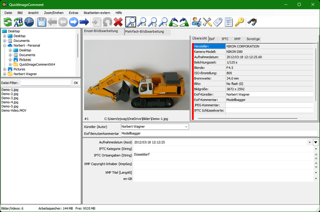
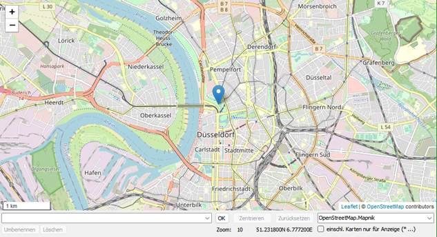
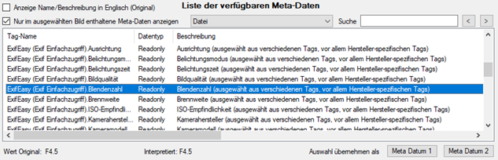
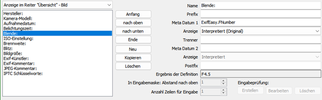
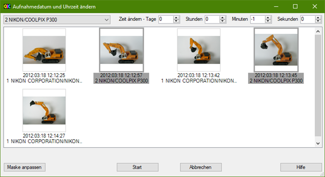
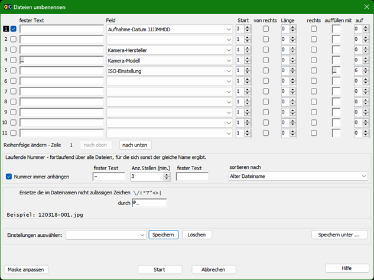
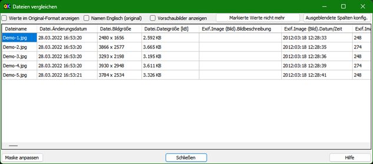
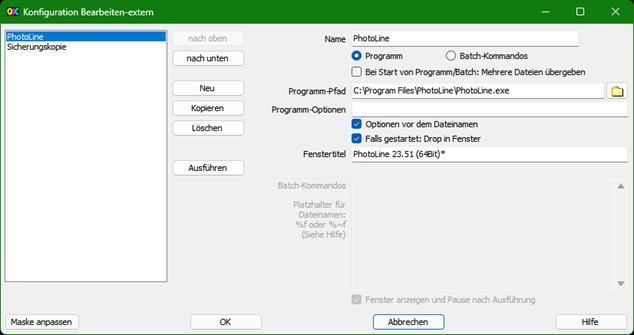

1 Einleitung
QuickImageComment zeigt Exif-, IPTC- und XMP-Eigenschaften von Digitalbildern (z.B. JPEG und TIFF sowie einigen RAW-Formaten) an und ermöglicht sie zu ändern. Speziell die Bearbeitung von Benutzerkommentar und Künstler (Autor) wird erleichtert, indem auf die letzten eingegebenen und auf vordefinierte Werte zurückgegriffen werden kann. Metadaten (XMP) in Video-Dateien werden angezeigt.
Übersicht der Funktionalitäten:
· Anzeige aller Exif-, IPTC- und XMP-Eigenschaften von Bildern, außerdem noch einige andere Dateieigenschaften wie z.B. Änderungsdatum.
· Anzeige von Metadaten (XMP) in Video-Dateien sowie (abhängig von der Windows-Version und ggfs. installierten Komponenten) Anzeige eines Frames des Videos.
· Bilder bzw. Videos können über ihre Eigenschaften und Aufnahmeort auf Karte gesucht werden.
· Neben den vollständigen Listen der Exif-, IPTC- und XMP-Eigenschaften wird eine Liste mit Eigenschaften angezeigt, die konfigurierbar ist.
· Neben Kommentar und Künstler können noch weitere Exif-, IPTC und XMP-Eigenschaften in Bildern geändert werden. Die Liste der änderbaren Eigenschaften ist konfigurierbar.
· Daten-Vorlagen können definiert werden, um damit mehrere Eigenschaften gleichzeitig zu setzen.
· Platzhalter erlauben es, Werte von Eigenschaften in andere zu kopieren.
· Änderungen können auch für mehrere Dateien gleichzeitig durchgeführt werden.
· Exif-, IPTC- und XMP-Eigenschaften können gelöscht werden, dabei können Ausnahmen definiert werden. Einzelne Eigenschaften können gezielt gelöscht werden.
· Dateien können unter Verwendung von Exif, IPTC und XMP-Eigenschaften umbenannt werden.
· Die in den Dateien enthaltenen Exif-, IPTC- und XMP-Eigenschaften können verglichen werden.
· Eine spezielle Maske dient zum Synchronisieren der Aufnahmezeit einer Menge von Bildern, die mit verschiedenen Kameras aufgenommen wurden. Bilder werden nach Eigenschaften (meist Kamera-Modell) gruppiert. Für jede Gruppe kann eine Verschiebung der Aufnahmezeit eingegeben werden. Danach werden die Bilder sofort sortiert, um prüfen zu können, ob so die Bilder zeitlich in der richtigen Reihenfolge sind.
· Ausgewählte Eigenschaften aller Bilder/Videos eines Ordners (einschließlich eventuell vorhandener Unterordner) können in eine Textdatei exportiert werden.
· Alle Bildeigenschaften von ausgewählten Bildern/Videos können in Textdateien exportiert werden (eine Datei je Bild).
· Anzeige von Bilddetails mit graphischer und numerischer Darstellung von Helligkeit und RGB-Werten.
· Anzeige des Aufnahmeortes auf einer Karte anhand der GPS-Koordinaten; Änderung der GPS-Koordinaten durch Wahl der Position auf der Karte.
Eine weitere Bearbeitung der Bilder (z.B. Anpassen von Kontrast und Helligkeit) ist nicht Sinn und Zweck dieses Programms.
Für das Auslesen und Ändern der Exif-, IPTC- und XMP-Eigenschaften wird die Bibliothek exiv2 verwendet. Auf www.exiv2.org findet man neben der Beschreibung dieser Bibliothek auch umfangreiche Informationen und weiterführende Links zu Exif, IPTC und XMP. Die von exiv2 unterstützten Formate sind hier dokumentiert:
· Bilder: http://dev.exiv2.org/projects/exiv2/wiki/Supported_image_formats
· Videos: http://dev.exiv2.org/projects/exiv2/wiki/Supported_video_formats
Für die Anzeige von RAW-Bildern ist die LibRaw-Bibliothek integriert. Wenn der Codec des Kameraherstellers oder die Microsoft Raw Image Extension (die verschiedene RAW-Formate unterstützt) installiert sind, werden sie verwendet und die Anzeige ist dann in der Regel schneller. Man kann sowohl einen spezifischen Codec als auch die Microsoft-Erweiterung installieren. Der spezifische Codec wird dann für die entsprechenden Bilder verwendet. Für alle anderen wird zunächst die Microsoft Extension ausprobiert und als letzte Option die integrierte LibRaw-Bibliothek. Für die Anzeige der Metadaten wird kein Codec benötigt.
Das Programm läuft unter Microsoft Windows 7, 8, 10 und 11 und ist als 32-Bit und 64-Bit Variante verfügbar. Als Sprache kann Deutsch oder Englisch gewählt werden. Es gibt auch eine Variante mit leicht reduzierter Funktionalität, die unter Windows XP mit .Net 4.0 Framework läuft.
QuickImageComment ist freie Software. Sie können es unter den Bedingungen der GNU General Public License (wie von der Free Software Foundation veröffentlicht) verwenden, Details im Kapitel Lizenzen.
2 Installation, Starten, Deinstallation
ZIP-Dateien
Voraussetzungen:
· Betriebssystem Windows 7 oder höher
· .NET 4.6.1 (oder höher)
Zwei Zip-Dateien sind verfügbar:
· 32-bit
· 64-bit
Eine Installation im üblichen Sinne ist nicht erforderlich. Die Zip-Datei kann in einem beliebigen Verzeichnis auf dem Rechner entpackt werden.
Zur Deinstallation ist das Programmverzeichnis sowie die Konfigurationsdatei im Verzeichnis %AppData% zu löschen.
Die Registry wird von dem Programm nicht verändert.
ZIP-Datei für Windows XP und .Net 4.0
Es gibt auch eine Variante mit leicht eingeschränkter Funktionalität, die auf Windows XP mit dem .Net 4.0 Framework läuft. Die Einschränkungen dieser Variante:
· Sie enthält kein LibRaw für die Anzeige von RAW-Bildern, daher wird für die Anzeige von RAW-Bildern ein Codec des Herstellers oder die Microsoft Raw Image Extension benötigt.
· Google Maps oder Bing Maps können nicht für die Kartenanzeige im Programm selbst verwendet werden, sondern nur über "Karte in Standard Browser".
· Die
Verwendung von AppCenter.ms, die das Senden von Fehlerberichten und anonymen
Nutzungsdaten ermöglicht, wird nicht unterstützt.
Hinweis: Die Verwendung von AppCenter.ms muss in der Variante für .Net 4.6.1
explizit aktiviert werden, so dass die Verwendung der Variante für Windows
XP/.Net 4.0 nicht notwendig ist, um das Senden von Daten über AppCenter.ms zu
vermeiden.
Microsoft Store
QuickImageComment ist auch im Microsoft Store erhältlich:
https://www.microsoft.com/store/apps/9PGFF2B2FBR8
Das Paket im Microsoft Store ist von Microsoft zertifiziert.
Wenn Sie eine Installation aus dem Microsoft Store verwenden, haben Sie keinen Zugriff auf den Konfigurationsordner des Programmpfads. Sinnvolle Änderungen, die Sie dort vornehmen möchten, können Sie jedoch in einer neuen Datei vornehmen, die im Ordner %APPDATA% gespeichert wird. Details dazu finden Sie in den folgenden Kapiteln des Benutzerhandbuchs:
· Allgemeine Konfigurationsdatei
Erste Nutzung
Beim ersten Start wird nach der zu verwendenden Sprache gefragt sowie die Möglichkeit angeboten, zukünftig automatisch die Verfügbarkeit einer neuen Version zu prüfen.
Nach dem ersten Start sollten die Voreinstellungen in Maske "Einstellungen" und Maske "Felddefinitionen" geprüft und entsprechend der eigenen Bedürfnisse angepasst werden. Diese sowie weitere Einstellungen während der Programmnutzung werden bei Beenden in eine Konfigurationsdatei im Verzeichnis %AppData% oder in das Programmverzeichnis (siehe auch Benutzerbezogene Konfigurationsdatei) geschrieben.
Wenn das Programm über die Kommandozeile gestartet wird (siehe Kommandozeilen-Argumente), kann ein Ordner- oder Dateiname als Argument übergeben werden. Wenn im Ordner "%Appdata%\Microsoft\Windows\SendTo" eine Verknüpfung auf das Programm eingetragen wird, können so Ordner, Bilder oder Videos über den Eintrag "Senden an" im Kontextmenü des Windows Explorers geöffnet werden.
Ordner, Bilder oder Videos können auch über Drag-and-Drop geöffnet werden.
Mit einigen Browsern können auch Bilder aus dem Internet per Drag-and-Drop geöffnet werden. Sie werden dazu in den Ordner "Downloads" heruntergeladen. Getestet ist dies mit Google Chrome, Microsoft Edge und Firefox, mit Internet Explorer funktioniert es nicht.
3 Haupt-Maske [CHM InvariantName="FormQuickImageComment"]
Die Haupt-Maske und deren Verwendung werden in den folgenden Abschnitten beschrieben:
· Aufbau der Maske und Anpassung
· Auswahl und Anzeige von Bildern
· Auswahl und Anzeige von Videos
· Fußzeile
Über die Menüleiste der Hauptmaske, Symbole (siehe Symbolleiste) und teilweise auch Tastaturkürzel (siehe Tastaturkürzel) können noch folgende Masken mit weiteren Funktionalitäten geöffnet werden:
· Maske "Suche über Eigenschaften"
· Maske "Aufnahmedatum und Uhrzeit ändern"
· Maske "Meta-Daten entfernen"
· Maske "Bild in eigenem Fenster"
· Maske "Vordefinierte Kommentare"
· Maske "Vordefinierte IPTC Schlüsselworte"
· Maske "Daten-Vorlage auswählen und bearbeiten"
3.1 Aufbau der Maske und Anpassung
Die Hauptmaske ist in mehrere Bereiche aufgeteilt:
Folgende Grafik benennt die Bereiche:
Bis auf das Bild können alle Bereiche einzeln über die Maske "Ansicht anpassen" (Menüeintrag "View - Anpassen) ein- oder ausgeblendet werden. Im zentralen Eingabebereich können die Felder für Künstler und Kommentar einzeln ein- oder ausgeblendet werden. In einem dieser Bereich können Bild Details und Karte angezeigt werden. Näheres hierzu in den Kapiteln Anzeige von Bild Details und Aufnahmeort auf Karte.
Zusätzlich gibt es die Möglichkeit, über den Menüeintrag "Ansicht - Nur Bild und Eingabefelder" alle Bereiche außer dem Zentralen Eingabebereich auszublenden. Mit nochmaliger Auswahl dieses Menüeintrages wird die vorherige Ansicht wiederhergestellt.
Die Größe der einzelnen Bereiche kann durch Verschieben der grauen Trennlinien angepasst werden, wobei für jeden Bereich eine Mindestgröße nicht unterschritten werden kann. Zur Verdeutlichung sind im folgenden Bild die Trennlinien in schwarz gehalten:
Über den Menüeintrag "Ansicht - Symbolleiste" (oder die Maske "Ansicht anpassen") kann die Symbolleiste aus- oder eingeblendet werden oder neben dem Menü angezeigt werden. Die letzte Variante ermöglicht die Verwendung der Symbole, reduziert dafür aber nicht die verfügbare Höhe für die eigentliche Maske. Allerdings sind dann die Symbole relativ klein.
Die Dateiliste kann über das Menü "Ansicht", über Kontextmenü (rechte Maustaste in Dateiliste) oder über die Maske "Ansicht anpassen" in folgenden Varianten dargestellt werden:
· Miniaturansicht
· Kacheln
· Liste
· Details
In der Ansicht "Kacheln" können neben dem Dateinamen noch bis zu fünf weitere frei auswählbare Eigenschaften in der Dateiliste angezeigt werden. Die im konfigurierbarem Eingabebereich aufgelisteten Eigenschaften sowie die im Reiter "Übersicht" angezeigten Eigenschaften können ebenfalls frei ausgewählt werden. Die Auswahl der Eigenschaften erfolgt über die Maske "Felddefinitionen", Gruppen "Datei-Anzeige in Ansicht "Kacheln"", "Änderung von Eigenschaften" und "Anzeige im Reiter "Übersicht"".
· Name
· Größe
· Geändert am
· Erstellt am
Größe der Vorschaubilder und deren Abstände in Kachel- und Miniaturansicht können über die Allgemeine Konfigurationsdatei angepasst werden.
Über die Maske "Ansicht anpassen" können die Inhalte aller Bereiche außer dem Bereich mit dem Bild und den zentralen Eingabefeldern frei zugeordnet werden.
Beispiel: Wenn man die Listen der letzten und vordefinierten Kommentare nicht benötigt und auch die IPTC-Schlüsselworte nicht verwendet, kann man diese ausblenden und hat damit mehr Platz für das Bild und/oder die Anzeige der Eigenschaften im oberen Bereich sowie für die Werte im konfigurierbaren Eingabebereich:

Außerdem können die Bereiche "Ordner" und "Dateiliste" nebeneinander anstatt übereinander angezeigt werden, um so breite Bildschirme besser nutzen zu können:
Das gleiche ist möglich für die beiden rechten Bereiche, oben mit Bild, Eigenschaften und IPTC Schlüsselworten, unten mit letzten und vordefinierten Kommentaren und konfigurierbaren Eingabebereich.
Diese Anpassungen können in der Maske "Ansicht anpassen" unter einem Namen gespeichert werden. Die benannten Einstellungen können im Menü "Ansicht" aktiviert werden.
Zusätzlich kann das Aussehen der Maske weitgehend selbst angepasst werden. Näheres hierzu in Maske "Maske anpassen". Diese Anpassungen der Maske können über den Menüeintrag "Extras - Alle Masken Anpassungen entfernen" wieder entfernt werden.
3.2 Auswahl und Anzeige von Bildern
Hinweis: bei der folgenden Beschreibung wird davon ausgegangen, dass alle Bereiche eingeblendet sind (siehe auch Aufbau der Maske und Anpassung) und die Inhalte der Bereiche nicht vertauscht sind.
Über die Ordnerliste links oben wird ein Ordner ausgewählt. Links unten werden dann die darin enthaltenen Bilder und Videos angezeigt. Falls von einem anderen Programm Ordner oder Dateien hinzugefügt, gelöscht oder umbenannt wurden, werden Ordner- und Dateiliste im Allgemeinen automatisch aktualisiert.
Gelegentlich erfolgt die Aktualisierung nicht oder verspätet. Dann kann über den Menüeintrag "Datei - Dateiliste aktualisieren" der Ordner neu gelesen und die Dateiliste aktualisiert werden. Die Liste kann außerdem über ein Symbol (siehe Symbolleiste) oder ein Tastaturkürzel (siehe Tastaturkürzel) aktualisiert werden. Über den Menüeintrag "Datei - Verzeichnisbaum aktualisieren" kann die Ordnerliste aktualisiert werden.
Die Dateien können gefiltert werden. Dazu gibt es ein Eingabefeld über der Dateiliste. Dort kann ein Text eingegeben werden, der im Namen der anzuzeigenden Dateien enthalten sein muss. Alternativ kann auch ein Text mit Platzhalterzeichen eingegeben werden, zu dem der Dateiname passen muss. Groß- und Kleinschreibung wird nicht beachtet.
Platzhalterzeichen:
|
? |
entspricht einem einzelnen Zeichen an einer bestimmten Stelle |
|
* |
entspricht einer beliebigen Anzahl von Zeichen |
Beispiele:
|
Filter |
ergibt |
|
abc |
Dateien mit "abc" im Namen |
|
abc* |
Dateien, die mit "abc" beginnen |
|
*.dng |
Dateien mit Erweiterung "dng" |
|
ab?c* |
Dateien, die mit "ab" beginnen, danach ein beliebiges Zeichen, "c" und beliebige Zeichen haben |
Mit der Return-Taste oder Ok-Schaltfläche daneben wird der Filter aktiviert.
Die Dateiliste kann über das Menü "Ansicht", über Kontextmenü (rechte Maustaste in Dateiliste) oder über die Maske "Ansicht anpassen" in folgenden Varianten dargestellt werden:
· Miniaturansicht
· Kacheln
· Liste
· Details
Die in der Ansicht "Kacheln" angezeigten Eigenschaften können über die Maske "Felddefinitionen" ausgewählt werden, Gruppe "Datei-Anzeige in Ansicht "Kacheln"". Die Maske kann über das Kontextmenü in der Dateiliste (in diesem Fall direkt mit Auswahl der Gruppe) oder auch über das Menü geöffnet werden.
Die Spaltenbreite in der Ansicht "Liste" entspricht der Spaltenbreite, die in der Ansicht "Details" für die Spalte "Name" gesetzt wird.
Über das Bild können mehrere Raster gelegt werden um z.B. die Verzeichnung eines Objektives zu prüfen oder Details "auszumessen". Im Menü "Ansicht" kann über den Menüeintrag "Raster definieren ..." die Maske "Raster definieren" geöffnet werden, um dort bis zu sechs Raster zu definieren. Über den Menüeintrag "Bild mit Raster" wird die Anzeige des Rasters ein- oder ausgeschaltet. Durch Verschieben der Maus bei gedrückter rechter Maustaste über dem Bild kann das Raster verschoben werden. Falls Bild-Details angezeigt werden (siehe Anzeige von Bild Details) wird das Raster dann verschoben, wenn der Mauszeiger außerhalb des Rahmens ist, der den Detail-Bereich markiert. Ist der Mauszeiger innerhalb des Rahmens, wird bei gedrückter rechter Maustaste der Detail-Bereich verschoben.
Das in der Dateiliste markierte Bild wird in der Mitte der Maske auf dem Reiter "Einzel-Bild-Bearbeitung" angezeigt. Über Symbole (siehe Symbolleiste), das Menü "Zoom/Drehen" oder Tastaturkürzel (siehe Tastaturkürzel) kann die Vergrößerung geändert und das Bild gedreht werden. Die Drehung des Bildes ist nur für die Anzeige, die Bilddatei selbst wird dabei nicht verändert.
Die Vergrößerung kann gewählt werden:
· fit (das Bild füllt den zur Verfügung stehenden Platz aus)
· 1:4 = Verkleinerung 1:4 (bezogen auf die Pixel)
· 1:2 = Verkleinerung 1:2 (bezogen auf die Pixel)
· 1:1 = ein Pixel im Bild wird als ein Pixel auf dem Bildschirm dargestellt
· 2:1 = Vergrößerung 2:1 (bezogen auf die Pixel)
· 4:1 = Vergrößerung 4:1 (bezogen auf die Pixel)
· 8:1 = Vergrößerung 8:1 (bezogen auf die Pixel, aus technischen Gründen nur in der 64-Bit-Variante verfügbar)
Bei den Einstellungen 1:4 bis 8:1 hängt die Vergrößerung von der Auflösung des Bildes ab.
Im Menü "Zoom/Drehen" gibt es zusätzlich noch die Möglichkeit einen Vergrößerungsfaktor zu wählen. Dieser bezieht sich nicht auf die Pixel, sondern auf die Größe des Bildes in dem zur Verfügung stehenden Rahmen. Faktor "2 x" bedeutet dabei, dass das Bild doppelt so groß dargestellt wird, wie mit der Einstellung "fit" - unabhängig von der Auflösung des Bildes.
Falls das Bild größer ist als der zur Verfügung stehenden Platz, kann der sichtbare Bereich über die Rollbacken unten und rechts oder durch Bewegung der Maus bei gedrückter linker Maustaste verschoben werden.
Bilder können eine Exif-Information mit der Orientierung enthalten (Exif.Image.Orientation oder hersteller-spezifische Tags). Wenn diese vorhanden ist, wird das Bild entsprechend gedreht. Bei RAW-Bildern gilt das nur, wenn das über den Menüeintrag "Zoom/Drehen - RAW: Drehung nach Decodierung" ausgewählt ist, weil viele RAW-Decoder das Bild schon entsprechend drehen. Wenn es bei einem Bild ausgewählt wird, gilt dies für alle Bilder, die mit dem gleichen Decoder gelesen werden. Der Menüeintrag ist nur aktiv, wenn es sich um ein RAW-Bild handelt, das gemäß der Exif-Information zu drehen ist.
Rechts neben dem Bild im Reiter "Einzel-Bild-Bearbeitung" sind fünf Reiter, in denen Eigenschaften des Bildes angezeigt werden:
· Übersicht
Eine Auswahl von Eigenschaften, die über die Maske "Felddefinitionen", Gruppe "Anzeige im Reiter "Übersicht" ..." angepasst werden kann, jeweils unterschiedlich für Bilder und Videos. Die Maske kann über das Kontextmenü in der Liste der Eigenschaften (in diesem Fall direkt mit Auswahl der Gruppe) oder auch über das Menü geöffnet werden.
Im Reiter "Übersicht" zeigt ein roter Balken links an, dass es Auffälligkeiten oder Fehler bei den Eigenschaften gibt. Diese werden unten in dem Reiter angezeigt. Auffälligkeiten können sein:
— Für bestimmte Eigenschaften, für die es nur einen Wert geben sollte, gibt es mehrere Werte im Bild.
— Die verschiedenen Eigenschaften (Exif, IPTC, XMP) in denen Künstler (Autor) und Kommentar gespeichert werden, haben unterschiedliche Werte.
Fehler können beim Lesen der Eigenschaften durch die Bibliothek exiv2 gemeldet werden, z.B. "The memory contains data of an unknown image type".
Fehler können auch bei der Anzeige des Bildes auftreten. Wenn neben "Fehler Bildanzeige" eine Meldung beginnend mit "BitmapDecoder:" oder "LibRaw:" angezeigt wird, fehlt ein Codec für das Einlesen des RAW-Bildes und sollte installiert werden. Als Alternative kann die Microsoft Raw Image Extension installiert werden, die verschiedene RAW-Formate unterstützt. Andere Meldungen deuten auf einen Softwarefehler und sollten an quickimagecomment@gmail.com gemeldet werden.
Eigenschaften können markiert (mit der linken Maustaste) und anschließend per Kontextmenü (rechte Maustaste) zu dem Bereich für änderbare Eigenschaften, zu den Feldern für die Suche oder in die Multi-Edit-Tabelle hinzugefügt werden.
· Exif
· IPTC
· XMP
Bei Eigenschaften vom Typ "LangAlt" wird als erstes der Standard-Wert (x-default) angezeigt, danach die Werte für spezifische Sprachen; die Sprachkennung wird hinter dem Namen der Eigenschaft angezeigt.
· Sonstige, z.B.:
— Dateieigenschaften
— ExifEasy-Eigenschaften (Werte werden aus mehreren Exif-Eigenschaften ausgewählt, näheres siehe Hinweise zu besonderen Eigenschaften)
— Eigenschaften, die über die allgemeine Konfigurationsdatei definiert werden (siehe auch Anpassung und Konfiguration und Allgemeine Konfigurationsdatei)
Für die Tabellen in den Reitern Exif, IPTC, XMP und Sonstige können über das Kontext-Menü (rechte Maustaste) oder die Maske "Ansicht anpassen" folgende Ansichten gewählt werden:
· Liste mit Überschriften
Dies ist die voreingestellte Ansicht. Die Eigenschaften sind verschiedenen Gruppen zugeordnet. Vor jeder Gruppe wird der Gruppen-Name in einer grau hinterlegten Zelle angezeigt. Durch klicken in die graue Zeile können die zu der Gruppe gehörenden Eigenschaften ein- oder ausgeblendet werden.
· Einfache Liste
In dieser Ansicht wird der Gruppen-Name nicht in einer eigenen Zeile angezeigt, sondern steht jeweils am Anfang des Tag-Namens, womit etwas mehr Breite für die Anzeige benötigt wird. In dieser Ansicht können die Spalten sortiert werden, z.B. nach der Tag-Nummer.
· Einfache Liste, Gruppe hinten
In dieser Ansicht wird der Gruppen-Name nicht in einer eigenen Zeile angezeigt, sondern steht jeweils hinter dem Tag-Namen. So können Eigenschaften unabhängig von ihrer Gruppe sortiert werden. Dies ist hilfreich, wenn man (speziell bei hersteller-spezifischen Eigenschaften) nicht weiß, in welcher Gruppe sie zu finden sind. Außerdem gibt es Eigenschaften, die in verschiedenen Gruppen enthalten sind - diese stehen dann auch untereinander.
· Liste mit Überschriften - Englisch
Wie "Liste mit Überschriften", Tag-Namen in Englisch
· Einfache Liste - Englisch
Wie "Einfache Liste", Tag-Namen in Englisch
· Einfache Liste, Gruppe hinten - Englisch
Wie "Einfache Liste, Gruppe hinten", Tag-Namen in Englisch.
In diesen Tabellen können Felder markiert werden (mit der linken Maustaste) und anschließend per Kontextmenü (rechte Maustaste) zu dem Bereich für änderbare Eigenschaften, in den Reiter "Übersicht", zu den Feldern für die Suche oder in die Multi-Edit-Tabelle hinzugefügt werden.
Hinweis für Sprache "Deutsch":
In den Ansichten "Liste mit Überschriften" und "Einfache Liste" werden überwiegend deutsche Tag-Namen angezeigt. Wenn die Bedeutung des Tags und damit eine korrekte Übersetzung nicht sicher war, wurde auf eine Übersetzung verzichtet und es wird der originale (englische) Namen angezeigt. Übersetzungen wurden möglichst so gewählt, dass zusammengehörige Tags in der Sortierung auch zusammenstehen.
Beispiel: "Category" und "SuppCategory" wurden mit "Kategorie" und "Kategorie zusätzlich" übersetzt, nicht als "Kategorie" und "zusätzliche Kategorie".
Auf diese Weise ist die Sortierung mit Gruppe am Ende für Deutsch nützlicher als für Englisch.
In den Reitern Exif, IPTC und XMP wird die Beschreibung der Eigenschaft (sofern vorhanden) angezeigt, wenn der Mauszeiger über der ersten Spalte steht.
Ganz rechts werden die IPTC-Schlüsselworte angezeigt. IPTC-Schlüsselworte können in dem Programm vordefiniert werden (Maske "Vordefinierte IPTC Schlüsselworte"). Die vordefinierten Schlüsselworte werden hier mit einer Auswahlbox aufgelistet. Weitere Schlüsselworte (Freitext) können direkt dem Bild zugeordnet werden. Diese werden in dem Feld oben angezeigt.
Unten rechts im konfigurierbaren Eingabebereich werden Eigenschaften angezeigt, die dort auch geändert werden können. Die Eigenschaften können über die Maske "Felddefinitionen" ausgewählt werden, Gruppe "Änderung von Eigenschaften". Die Maske kann über das Kontextmenü in diesem Bereich (in diesem Fall direkt mit Auswahl der Kategorie) oder auch über das Menü geöffnet werden. Zusätzlich können Eigenschaften in den Reitern Übersicht, Exif, IPTC, XMP oder Sonstige markiert und dann per Kontextmenü hinzugefügt werden.
Wenn das Bild von einem anderen Programm verändert wird und es keine ungespeicherten Änderungen in diesem Programm gibt, wird die Anzeige automatisch aktualisiert.
3.3 Auswahl und Anzeige von Videos
Neben der Anzeige von Bildern und deren Eigenschaften können auch Frames aus Video-Dateien und deren Eigenschaften angezeigt werden. Die Ausführungen aus Auswahl und Anzeige von Bildern gelten ebenso für Videos. Es werden grundsätzlich alle Video-Dateitypen unterstützt, die auch von der Bibliothek exiv2 (www.exiv2.org) unterstützt werden. In der Maske "Einstellungen" können die Datei-Erweiterungen definiert werden, die in der Dateiliste angezeigt werden. Für diese werden dann auch die Metadaten angezeigt.
Für Videos können im Reiter "Übersicht" und für die Datei-Anzeige in der Ansicht "Kacheln" andere Eigenschaften als für Bilder ausgewählt werden. Dafür enthält die Auswahlliste für die Gruppe von Eigenschaften in der Maske "Felddefinitionen" folgende Einträge:
· Anzeige im Reiter "Übersicht" - Video
· Datei-Anzeige in Ansicht "Kacheln" - Video
Die Anzeige eines Frames aus der Videodatei hängt vom Betriebssystem und ggfs. installierten Komponenten ab. Ich habe leider keine Lösung finden können, die auf allen (noch) gängigen Windows-Betriebssystemen funktioniert. Wenn kein Frame angezeigt werden kann, äußert sich das auch leider nicht direkt in einem entsprechenden Hinweis, sondern dadurch, dass nach einer gewissen Wartezeit ein schwarzes Bild angezeigt wird. Deswegen wird in der Maske "Einstellungen" separat definiert, für welche Video-Dateitypen ein Frame angezeigt wird. Je nach Video-Datei und Rechner kann es auch recht lange dauern, bis ein Frame angezeigt wird. Das kann dann ein Grund sein, auf die Anzeige des Frames zu verzichten, ohne auf die Anzeige der Metadaten verzichten zu müssen.
Es wird nicht das erste Frame des Videos angezeigt, sondern ein Frame nach einer vorgegebenen Zeitdifferenz ab Start. Die Voreinstellung kann in der Maske "Einstellungen" definiert werden. Unter dem Frame (über dem Dateinamen) kann für jedes Video unabhängig eine andere Frame-Position ausgewählt werden.
Änderungen der Metadaten von Video-Dateien sind nicht möglich.
Die Anzeige des Videos selbst ist nicht Bestandteil des Programmes, ist aber - sofern der jeweilige Video-Typ vom System unterstützt wird - durch Doppelklick in der Dateiliste möglich. Es öffnet sich dann das Programm, dem der entsprechende Dateityp zugeordnet ist.
Wenn das Video von einem anderen Programm verändert wird, wird die Anzeige automatisch aktualisiert.
3.4 Anzeige von Bild Details
Die Bild-Details können auf zwei Weisen angezeigt werden:
· In der Hauptmaske: Mit der Maske "Ansicht anpassen" die Hauptmaske so anpassen, dass in einem der Bereiche "Bild Details" angezeigt werden.
· In eigenem Fenster: Über den Menüeintrag "Extras - Bild Details in eigenem Fenster" separates Fenster öffnen.
Die Anzeige der Bild Details ist nützlich um
· Bildausschnitte vergrößert zu betrachten
· Helligkeits- und Farbverläufe graphisch und numerisch zu sehen
· Bilder mit Pixel-Genauigkeit zu analysieren
Links unten sieht man den Bildausschnitt. Der sichtbare Bereich des Bildes kann durch Bewegung der Maus bei gedrückter linker Maustaste verschoben werden. Darüber und rechts sind die Grafiken, in denen der Helligkeitsverlauf entlang der horizontalen und vertikalen Mittellinien dargestellt wird.
Im rechten Teil befinden sich:
· Position X und Y: Anzeige und Eingabemöglichkeit für die X- und Y-Position der linken oberen Ecke des Ausschnittes aus dem gewählten Bild, das hier angezeigt wird
· Zoom: Auswahlliste für die Vergrößerung
Mit der Auswahl "variabel" wird der Schiebregler unter der Auswahlliste für Einstellung des Vergrößerungsfaktors aktiviert.
Verschiedene feste Vergrößerungen von 4:1 bis 1:5 können direkt gewählt werden.
Bei den Einstellungen "1:3 Raster" und "1:5 Raster" werden die Pixel des Bildes durch 3x3 bzw. 5x5 Bildpunkte dargestellt. Darüber werden Rasterlinien mittig über die Pixel gelegt, um die Werte der Pixel in den Grafiken genau zuordnen zu können.
· Eine Tabelle zeigt den Helligkeitswert sowie die Werte für Rot, Grün und Blau an für:
— Pixel unter dem Mauszeiger
— minimaler Wert in der horizontalen Mittellinie
— maximaler Wert in der horizontalen Mittellinie
— minimaler Wert in der vertikalen Mittellinie
— maximaler Wert in der vertikalen Mittellinie
· Grafiken: In der Auswahlliste kann gewählt werden, ob beide, keine, nur die horizontale oder nur die vertikale Grafik angezeigt werden.
· R, G, B: Mit diesen Ankreuzfeldern kann einzeln gewählt werden, ob zusätzlich zu der Helligkeit auch Kurven für die Farben Rot, Grün und Blau angezeigt werden.
· Rastergröße: Die Einstellungen für Rastergröße sind nur bei den Zoom-Einstellungen "1:3 Raster" und "1:5 Raster" relevant. Der Wert 20 gibt hier an, dass alle 20 Pixel des Bildes eine Rasterlinie gezogen wird.
· Skala-Linien: Der Wert 4 gibt an, dass in den Grafiken 4 Skala-Linien eingeblendet werden
· Rahmenfarbe: Mit der Schaltfläche kann die Farbe des Rahmens definiert werden, mit dem der angezeigte Ausschnitt im Hauptbild markiert wird.
· Rasterfarbe: Mit der Schaltfläche kann die Farbe des Rasters und der Skala-Linien definiert werden
Im Hauptbild wird der angezeigte Bildausschnitt durch einen Rahmen mit horizontaler und vertikaler Mittellinie markiert. Wenn der Mauszeiger innerhalb des Rahmens ist, kann durch Verschieben der Maus bei gedrückter rechter Maustaste der Bildausschnitt geschoben werden, der in Bild-Details angezeigt wird.
Die Informationen für Bild Details werden bevorzugt in einem Bereich dargestellt, der im Querformat ist. Falls der Bereich im Hochformat ist (höher als breit), werden die Grafiken oben, die anderen Anzeigen darunter dargestellt.
Anwendungsbeispiele:
Prüfung der Vignettierung:
Prüfung von Farbrauschen einer Aufnahme mit Kompaktkamera und hoher Empfindlichkeit:
Im folgenden Bild kann man gut sehen, dass zwar die engeren Linien rechts noch getrennt erkennbar sind, der Unterschied zwischen heller und dunkler Linie aber zunehmend deutlich kleiner wird:
3.5 Aufnahmeort auf Karte
Der Aufnahmeort auf Karte kann auf zwei Weisen angezeigt werden:
· In der Hauptmaske: Mit der Maske "Ansicht anpassen" die Hauptmaske so anpassen, dass in einem der Bereiche "Karte" angezeigt wird.
· In eigenem Fenster: Über den Menüeintrag "Extras - Karte in eigenem Fenster" separates Fenster öffnen.
Für die Anzeige und Änderung des Aufnahmeortes auf einer
Karte wird OpenStreetMap genutzt. Die Lizenzbedingungen von OpenStreetMap sind
zu beachten:
https://www.openstreetmap.org/copyright
Hinweis: Technisch wäre auch die Verwendung von Google Maps möglich, würde aber einen kostenpflichtigen Account erfordern. Mit Bing Maps ist zumindest ein personalisierter Key notwendig. Daher wird die volle Funktionalität nur mit OpenStreetMap angeboten.
Die Anzeige (nur Anzeige, keine Änderung) des Aufnahmeortes in Karten von Google Maps oder Bing Maps ist möglich
· über Anzeige einer Karte im Standardbrowser, siehe Sonstige Funktionalitäten.
· in der Variante für .Net 4.6.1 oder höher und wenn WebView2-Runtime installiert ist, Näheres hierzu am Ende dieses Kapitels.
Hinweis für Nutzer der Variante für Windows XP/.Net 4.0: Die Karten werden über den Internet Explorer geladen. Auf Windows XP laufen nur alte Versionen des Internet Explorers, was die Anzahl verwendbarer Karten massiv einschränkt. So scheint es (Stand Dezember 2022) mit dem Internet Explorer 8 nur möglich zu sein, die Karten von OpenStreetMap.Mapnik zu verwenden, bei der Auswahl anderer Karten bleibt die Anzeige leer.
Funktionalität mit OpenStreetMap

Im angezeigten Kartenausschnitt sind links oben zwei Schaltflächen "+" und "-" um die Vergrößerung zu wählen. Die Vergrößerung kann auch über das Mausrad geändert werden. Mit gedrückter Umschalttaste, linker Maustaste und Mauszeiger kann ein Bereich markiert werden, der dann vergrößert angezeigt wird.
Wenn das ausgewählte Bild GPS-Koordinaten enthält, wird der entsprechende Kartenausschnitt angezeigt und der Aufnahmeort ist markiert. Der Kartenausschnitt kann mit der Maus verschoben werden. Durch Verschieben der Markierung kann eine neue Position bestimmt werden, die dann zusammen mit den anderen veränderten Daten (z.B. Kommentar) im Bild gespeichert werden kann.
Falls das ausgewählte Bild keine GPS-Koordinaten enthält, wird der Kartenausschnitt um die zuletzt verwendete Position ohne Markierung angezeigt. Mit Betätigen der rechten Maustaste kann eine Markierung eingefügt werden, die dann ebenfalls noch verschoben werden kann. Eine vorhandene Markierung kann mit der rechten Maustaste gelöscht werden.
Unter dem Kartenausschnitt befinden sich:
· Kombinationsfeld für Suche und Auswahl einer Position
Hier können Adressen oder andere Suchbegriffe (z.B.
"Düsseldorf, Hbf") eingegeben werden, um die entsprechende Position
auf der Karte anzuzeigen. Die Suche wird mit der Return-Taste oder Schaltfläche
"OK" gestartet. Alternativ können Koordinaten wie z.B.
52.432N 8.345E
oder
52°30'18.4"S 8°42'32.9"W
eingegeben werden. Als Dezimaltrennzeichen können Punkt oder Komma verwendet
werden. Die letzten Suchergebnisse sowie die letzten mit einem Bild
gespeicherten Positionen werden beim Aufklappen des Feldes angezeigt und können
ausgewählt werden. Nach Auswahl wird der entsprechende Kartenausschnitt
angezeigt und die gewählte Position darin markiert.
· Schaltfläche "OK"
Mit Betätigen der Schaltfläche wird die Suche nach einer Position gestartet. Wenn die Position gefunden wurde, wird der entsprechende Kartenausschnitt angezeigt und die gesuchte Position markiert.
· Schaltfläche "Zentrieren"
Nach Betätigen dieser Schaltfläche wird die Karte so verschoben, dass die Markierung in der Mitte angezeigt wird.
· Schaltfläche "Zurücksetzen"
Falls in dem Bild schon Koordinaten gespeichert waren und die Markierung verschoben wurde, wird die Markierung wieder auf die gespeicherte Position geschoben. Falls in dem Bild noch keine Koordinaten gespeichert waren und eine Markierung angelegt wurde, wird die Markierung entfernt.
· Auswahlliste für Karten-Quelle
Folgende Quellen stehen zur Auswahl:
|
Name |
Typ |
Max. Zoom |
Copyright |
|
CartoDB.Voyager |
Straße |
19 |
© OpenStreetMap contributors © CartoDB |
|
CartoDB.VoyagerLabelsUnder |
Straße |
19 |
© OpenStreetMap contributors © CartoDB |
|
Esri.WorldImagenery |
Satellit |
20 |
Tiles © Esri — Source: Esri, i-cubed, USDA, USGS, AEX, GeoEye, Getmapping, Aerogrid, IGN, IGP, UPR-EGP, and the GIS User Community |
|
Esri.WorldImagenery+ Hydda.RoadsAndLabels |
hybrid (Satellit + Straße bis Zoom 17) |
20 |
Tiles © Esri — Source: Esri, i-cubed, USDA, USGS, AEX, GeoEye, Getmapping, Aerogrid, IGN, IGP, UPR-EGP, and the GIS User Community, Tiles courtesy of OpenStreetMap Sweden — Map data © OpenStreetMap contributors |
|
Esri.WorldImagenery+ Stamen.TonerHybrid |
hybrid (Satellit + Straße) |
20 |
Tiles © Esri — Source: Esri, i-cubed, USDA, USGS, AEX, GeoEye, Getmapping, Aerogrid, IGN, IGP, UPR-EGP, and the GIS User Community, Map tiles by Stamen Design, CC BY 3.0 — Map data © OpenStreetMap contributors |
|
Esri.WorldStreetMap |
Straße |
19 |
Tiles © Esri — Source: Esri, DeLorme, NAVTEQ, USGS, Intermap, iPC, NRCAN, Esri Japan, METI, Esri China (Hong Kong), Esri (Thailand), TomTom, 2012 |
|
Esri.WorldTopoMap |
topografisch |
19 |
Tiles © Esri — Esri, DeLorme, NAVTEQ, TomTom, Intermap, iPC, USGS, FAO, NPS, NRCAN, GeoBase, Kadaster NL, Ordnance Survey, Esri Japan, METI, Esri China (Hong Kong), and the GIS User Community |
|
OpenStreetMap.Mapnik |
Straße |
18 |
© OpenStreetMap contributors |
|
OpenStreetMapDE |
Straße |
18 |
© OpenStreetMap contributors |
|
OpenTopoMap |
topografisch |
17 |
Map data: © OpenStreetMap contributors, SRTM | Map style: © OpenTopoMap (CC-BY-SA) |
|
Stamen.Terrain |
Gelände |
17 |
Map tiles by Stamen Design, CC BY 3.0 — Map data © OpenStreetMap contributors |
|
Wikimedia |
Straße |
19 |
Workaround: without this hidden paragraph the paragraph after this is truncated in html.
· Ankreuzfeld "einschl. Karten nur für Anzeige (* ...)"
Wenn angekreuzt, werden in der Auswahlliste
zusätzliche Karten angezeigt, die nur für die Anzeige verwendbar sind, siehe
hierzu auch Anzeige des Aufnahmeortes auf
Karten von Google Maps/Bing Maps weiter unten.
Hintergrundinformation: Für Google Maps und Bing Maps ist WebView2
erforderlich. WebView2 verursacht aber gelegentlich Probleme. Diese Probleme
werden vermieden, wenn man diese Option nicht ankreuzt, damit allerdings auf Google
Maps und Bing Maps verzichtet.
· Schaltfläche "Umbenennen"
Wenn im Kombinationsfeld für Suche und Auswahl eine Position ausgewählt ist, kann diese umbenannt werden. Damit können insbesondere gespeicherte Orte, die zunächst nur mit Koordinaten gelistet werden, mit einem sprechenden Namen versehen werden. Nach Betätigen der Schaltfläche wird eine Maske geöffnet, in der der neue Name einzutragen ist.
· Schaltfläche "Löschen"
Wenn im Kombinationsfeld für Suche und Auswahl eine Position ausgewählt ist, kann diese gelöscht werden.
Hinweis: Die maximale Anzahl der benannten und unbenannten Positionen, die bei Beenden des Programmes in der benutzerbezogenen Konfigurationsdatei gespeichert werden, wird in Maske "Einstellungen" definiert.
· Anzeigen für Position und Zoom
In der Mitte unten werden die in der Karte gewählte Zoomstufe sowie Längen- und Breitengrad der markierten Position angezeigt.
In der Karte sind rechts unten Links auf "Leaflet" (diese Komponente wird genutzt, um die Karte anzuzeigen) und zu den Quellen für die Kartendarstellung enthalten, die im Standardbrowser geöffnet werden.
Die Konfiguration der Karten basiert auf:
http://leaflet-extras.github.io/leaflet-providers/preview/.
Weitere Karten-Quellen für Leaflet können konfiguriert werden, siehe Konfiguration von Leaflet-Karten-Quellen
Anzeige des Aufnahmeortes auf Karten von Google Maps/Bing Maps
Der Aufnahmeort kann im Programm auf Karten von Google Maps oder Bing Maps angezeigt werden, wenn folgende Voraussetzungen erfüllt sind:
· Es wird die Variante für .Net 4.6.1 und höher verwendet.
· WebView2 Runtime ist installiert.
Die als URL konfigurierten Karten-Optionen (Google Maps, Bing Maps und ggfs. weitere, siehe Konfiguration von URLs für die Anzeige einer Karte) können dann ausgewählt werden. Diese Optionen sind mit "*" am Anfang gekennzeichnet.
Mit diesen Karten-Optionen kann der Aufnahmeort nur angezeigt aber nicht geändert werden. Daher sind auch alle oben gelisteten Bedienelemente mit Ausnahme der Auswahlliste für Karten-Quelle nicht aktiviert. Die Anzeige im Programm ist lediglich ein integrierter Webbrowser und für die Nutzung und den Datenschutz gelten die Bedingungen von Google Maps bzw. Bing Maps, für selbstdefinierte Kartenquellen die Bedingungen des jeweiligen Anbieters.
Falls WebView2 Runtime noch nicht installiert ist, kann es hier heruntergeladen werden:
https://developer.microsoft.com/en-us/microsoft-edge/webview2/#download-section
Auf dieser Seite den "Evergreen Standalone Installer" passend zum Betriebssystem auswählen und installieren.
Vor der Installation von WebView2 Runtime kann man über den Menüeintrag "Extras – Karte im Standard Browser" prüfen, ob die zusätzlichen Kartenoptionen auch hilfreich sind.
3.6 Einzel-Bildbearbeitung
Für die Bearbeitung einzelner Bilder ist die Reiterkarte "Einzel-Bild-Bearbeitung" auszuwählen.
Unter dem Bild sind:
· Kombinationsfeld für Namen des Künstlers (Autor)
Der Name kann direkt eingegeben werden. Beim Speichern wird der Name in eine Liste eingetragen, sodass der Name später aus der Liste ausgewählt werden kann oder nach Eingabe der Anfangsbuchstaben vervollständigt wird.
Wenn noch kein Künstler für das Bild eingetragen wurde, kann eine Voreinstellung genutzt werden (definiert in der Maske "Einstellungen"). Falls die Voreinstellung eingetragen ist, wird dies durch einen Hinweis hinter dem Kombinationsfeld angezeigt.
Die Beschriftung des Eingabefeldes ist dynamisch. Falls in der Maske "Einstellungen" kein Feld (Tag) zum Speichern konfiguriert wurde, wird als Beschriftung "nicht konfiguriert" angezeigt und das Eingabefeld ist nicht aktiv. Falls genau ein Feld zum Speichern konfiguriert wurde, wird dieses Feld angezeigt. Falls mehr als ein Feld konfiguriert wird, wird das Eingabefeld mit "Künstler (Autor)" beschriftet.
· Textfeld für Kommentar
Der Kommentar kann frei eingegeben werden oder aus den Listen "Letzte Kommentare" oder "Vordefinierte Kommentare" übernommen und anschließend verändert werden. Sobald die Eingabe beginnt, wird die Eingabe als Filter für die Liste "Letzte Kommentare" verwendet, d.h. in der Liste werden die Einträge angezeigt, in denen der im Textfeld für Kommentar eingegebenen Text enthalten ist. Für die Anzeige muss allerdings die Reiterkarte "Letzte Kommentare" im Vordergrund sein, nicht "Vordefinierte Kommentare".
Beim Speichern wird der Kommentar in die Liste der letzten Kommentare aufgenommen. Sofern dies konfiguriert ist (siehe Maske "Einstellungen") kann über die Cursor-Unten-Taste direkt in die Liste "Letzte Kommentare" gesprungen werden. In diesem Fall wird ggf. automatisch von der Reiterkarte "Vordefinierte Kommentare" auf die Reiterkarte "Letzte Kommentare" gewechselt.
Die Beschriftung des Eingabefeldes ist dynamisch. Falls in der Maske "Einstellungen" kein Feld (Tag) konfiguriert wurde, wird als Beschriftung "nicht konfiguriert" angezeigt und das Eingabefeld ist nicht aktiv. Falls genau ein Feld zum Speichern konfiguriert wurde, wird dieses Feld angezeigt. Falls mehr als ein Feld konfiguriert wird, wird das Eingabefeld mit "Kommentar" beschriftet.
Für die erleichterte Eingabe des Kommentars sind zwei Listen verfügbar:
· Letzte Kommentare
Diese Liste zeigt die zuletzt gespeicherten Kommentare an. Über der Liste ist ein Textfeld zur Eingabe eines Filters. Wird dort z.B. "Mustermann" eingegeben, werden in der Liste alle Kommentare angezeigt, die "Mustermann" enthalten. Auch nach Eingabe im Textfeld für Kommentar wird die Liste entsprechend gefiltert.
· Vordefinierte Kommentare
Diese Liste zeigt Kommentare an, die über die Maske "Vordefinierte Kommentare" vordefiniert wurden. Vordefinierte Kommentare werden dort einer Kategorie zugeordnet (z.B. Ort, Nachname). Über der Liste ist eine Auswahlliste für diese Kategorien. Mit "*" werden alle Einträge angezeigt.
Einträge aus den beiden Listen können in das Textfeld für Kommentar über das Kontextmenü der Listen (rechte Maustaste) bzw. über ein Tastaturkürzel übernommen werden:
· Übernehmen
(Überschreiben des Textfeldes für Kommentar)
Tastaturkürzel: Return-Taste
· Anhängen
mit Leerzeichen
Tastaturkürzel: Leertaste
· Anhängen
mit Komma
Tastaturkürzel: Komma
· Anhängen
mit Semikolon
Tastaturkürzel: Semikolon
Für die Zuordnung von IPTC-Schlüsselworten gibt es zwei Möglichkeiten in dem Eingabebereich ganz rechts:
· Textfeld für freie Schlüsselworte
In dem Textfeld oben können mehrere Schlüsselworte eingegeben werden. Jede Zeile wird als ein Schlüsselwort betrachtet. Schlüsselworte können auch Leerzeichen enthalten.
· Baum mit Kontrollkästchen für vordefinierte Schlüsselworte
In der Maske "Vordefinierte IPTC Schlüsselworte" können Schlüsselworte mit einer Hierarchie vordefiniert werden. Für jedes dieser Schlüsselworte wird ein Kontrollkästchen angezeigt.
Konfigurierbarer Eingabebereich
Unten rechts befindet sich ein konfigurierbarer Bereich, in dem weitere Eigenschaften geändert werden können. Die Konfiguration wird in der Maske "Felddefinitionen" vorgenommen, Gruppe "Änderung von Eigenschaften". Die Maske kann über das Kontextmenü in diesem Bereich (in diesem Fall direkt mit Auswahl der Kategorie) oder auch über das Menü geöffnet werden.
Links von jedem Eingabefeld steht die Beschreibung, ergänzt um den Datentyp des Feldes. Falls für eine Eigenschaft mehrere Werte vom Programm zugelassen werden, werden diese in einem Textfeld mit vertikalen Rollbalken angezeigt. Die Anzahl der Zeilen wird in der Maske "Felddefinitionen" definiert. Eine Zeile entspricht dabei einem Wert. Eigenschaften, für die nur ein Wert zugelassen wird, werden in einem Kombinationsfeld angezeigt. Dies ermöglicht es, ältere Werte für diese Eigenschaft direkt auszuwählen.
Für Eigenschaften vom Typ "Datum" steht rechts neben dem Eingabefeld eine kleine Schaltfläche zur Verfügung:
Mit dieser Schaltfläche wird ein Kalender geöffnet, um ein Datum auswählen zu können. Bei Eigenschaften, die mehrere Werte haben können, kann hiermit nur das erste Datum geändert werden.
Für die Eigenschaft "Exif.Image.Orientation" (Typ: Short), wird eine Auswahlliste angezeigt. Diese enthält die gültigen (numerischen) Werte zusammen mit einer Erläuterung (z.B. "bottom, left (180° + horiz.flip)"). Nach Speichern der Änderung von Exif.Image.Orientation, wird das Bild entsprechend gedreht.
Für Exif-Eigenschaften lässt das Programm nur einen Wert zu. Bei IPTC- und XMP- Eigenschaften hängt es von der jeweiligen Eigenschaft bzw. dem Datentyp ab. Nach der Exif-Spezifikation scheint es zulässig zu sein, jeder Eigenschaft mehrere Werte zuzuordnen und die in dem Programm verwendete Bibliothek exiv2 lässt das auch zu. Es gibt aber (fast) keine Exif-Eigenschaft, für die mehrere Werte sinnvoll sind und andere Programme lassen das auch meist nicht zu. Daher erlaubt dieses Programm auch nur einen Wert je Exif-Eigenschaft. Falls mit einem anderen Programm einer Exif-Eigenschaft mehrere Werte zugeordnet wurden, werden diese als eine Zeichenkette, getrennt durch senkrechten Strich (" | ") in dem Eingabefeld angezeigt. Diese Zeichenkette kann dann verändert werden. Gespeichert wird dann nur ein Wert.
Eine Besonderheit stellen die XMP-Eigenschaften vom Datentyp "LangAlt" dar. Hier können mehrere Werte definiert werden, wobei ein Wert für die Default-Sprache und jeweils ein Wert für jede weitere Sprache definiert werden kann. In der Maske gibt es dann für die Eigenschaft entsprechend viele Eingabefelder. Die Sprachen können in der Maske "Einstellungen" ausgewählt werden.
Im folgenden Beispiel sind die Eingabefelder für die XMP-Eigenschaft Xmp.dc.title dargestellt. Als Beschreibung wurde "XMP Titel" konfiguriert. Das Textfeld direkt daneben ist für den Wert der Standardsprache, darunter Felder für Deutsch (Deutschland) und Englisch (United States):

Falls in dem Bild ein Wert für eine Sprache definiert ist, die nicht in der Maske "Einstellungen" ausgewählt wurde, wird diese zusätzlich mit angezeigt und der Wert für diese Sprache kann geändert werden.
XMP-Eigenschaften vom Datentyp "XmpText" können sehr komplexe Werte haben, z.B. den folgenden Wert, der von Windows Live Fotogalerie als Personenmarkierung hinzugefügt wurde:
/MPRI:Regions[1]/MPReg:Rectangle=0.210938, 0.477372, 0.079102, 0.119708
/MPRI:Regions[1]/MPReg:PersonDisplayName=Max Mustermann
/MPRI:Regions[2]/MPReg:Rectangle=0.498047, 0.421898, 0.084961, 0.125547
/MPRI:Regions[2]/MPReg:PersonDisplayName=Barbara Beispielfrau
/MPRI:Regions[2]/MPReg:PersonEmailDigest=1234567890ABCDEF1234567890ABCDEF123456
/MPRI:Regions[2]/MPReg:PersonLiveIdCID=1234567890123456789
/MPRI:Regions[2]/MPReg:PersonSourceID=WL:1234567890123456789
Dieses Programm kann solche Werte nicht auf Gültigkeit prüfen. Andererseits wird man solche komplexen Werte im Normalfall auch mit dem Programm ändern, mit dem die Werte auch ursprünglich angelegt wurden. In diesem konkreten Beispiel könnte man aber mit diesem Programm z.B. die Werte für PersonEmailDigest, PersonLiveIdCID und PersonSourceID aus Datenschutzgründen vor der Weitergabe des Bildes löschen und anstatt dem vollständigen Namen nur die Vornamen speichern. Damit verzichtet man nicht völlig auf die Information, wer abgebildet ist.
Separate Maske für Dateneingabe
Mit der Funktionstaste F10 oder Doppelklick in Eingabefeldern für Künstler (Autor), Kommentar oder im konfigurierbaren Eingabebereich wird eine Maske für Dateneingabe geöffnet, um für lange/und oder mehrzeilige Werte einen größeren und variablen Eingabebereich zu haben. Über diese Maske kann auch die Maske "Platzhalter einfügen/bearbeiten" geöffnet werden.
Maske zum Einfügen und bearbeiten von Platzhaltern
Mit der Funktionstaste Umschalt-F10 oder Doppelklick mit Umschalttaste in Eingabefeldern für Künstler (Autor), Kommentar oder im konfigurierbaren Eingabebereich wird die Maske "Platzhalter einfügen/bearbeiten" geöffnet. Platzhalter werden beim Speichern durch die Werte der referenzierten Eigenschaft ersetzt und ermöglichen es so, Werte von einer Eigenschaft zu einer anderen zu kopieren.
Eingaben rückgängig machen
Durch Drücken der Esc-Taste können die Eingaben für Künstler, Kommentar und IPTC-Schlüsselworte sowie im konfigurierbaren Eingabebereich rückgängig gemacht und die entsprechende Werte aus dem Bild wieder angezeigt werden. Durch den Menüeintrag "Bild - Zurücksetzen" oder das entsprechende Symbol (siehe Symbolleiste) werden alle Eingaben für das Bild rückgängig gemacht.
Farbliche Markierung von Eingaben
Veränderte Werte für Künstler, Kommentar und IPTC-Schlüsselworte sowie im konfigurierbaren Eingabebereich werden durch hellgelben Hintergrund kenntlich gemacht. Wird die Eingabe rückgängig gemacht, wird der Hintergrund wieder weiß.
Anstatt hellgelb kann in der allgemeinen Konfigurationsdatei auch eine andere Farbe festgelegt werden: Allgemeine Konfigurationsdatei - Farben.
Einschränkungen
Einige Eigenschaften können geändert, aber nicht neu hinzugefügt werden. Dies gilt vor allem für Hersteller-spezifische Exif-Informationen und für die komplexeren XMP-Datenstrukturen. Falls Eigenschaften nicht hinzugefügt werden konnten, kommt nach dem Speichern eine entsprechende Meldung.
Eingabe in den Reitern für Eigenschaften
Einige Eigenschaften können auch in den Reitern "Übersicht", "Exif" und "IPTC" geändert werden. Änderbare Werte werden mit weißem Hintergrund angezeigt, nicht-änderbare mit hellgrauem Hintergrund.
Die Änderung der Eigenschaften ist nur bei Einzel-Bildbearbeitung möglich. Im Gegensatz zur Eingabe im konfigurierbaren Eingabebereich ist es nicht möglich, Eingabeprüfungen zu definieren und ältere Eingaben direkt auszuwählen. Eingabe in den Reitern wird für einfache Texte ermöglicht, um gelegentliche Änderungen vorzunehmen, ohne dafür ein Eingabefeld zu konfigurieren.
Da Eigenschaften sowohl in den Reitern als auch in den Standard-Eingabefeldern geändert werden können, kann es zu Konflikten kommen. Diese werden beim Speichern erkannt und es kann dann entschieden werden, welche Eingabe verwendet wird.
Hier zur Information die Regeln, welche Eigenschaften in den Reitern geändert werden können:
· Der Datentyp ist einer der folgenden:
— Ascii – außer für Exif-Datumwerte
— Comment
— Byte, wenn für UCS2-kodierten Text verwendet
— String
Numerische Datentypen werden hier nicht unterstützt. Beispiele für diese Werte sind Belichtungszeit, Blende und Auflösung. Für diese Beispiele und für die weitaus meisten (wenn nicht sogar alle) numerische Werte ist es nicht sinnvoll, sie nach der Aufnahme noch zu ändern. Bei einigen Tags (z.B. Exif.Image.ExifTag = Zeiger auf EXIF IFD) besteht zusätzlich die Gefahr, dass ein falscher Wert dazu führt, dass die Metadaten insgesamt nicht mehr lesbar werden.
Änderung von Werten für Datum/Zeit wird hier nicht unterstützt, da diese Werte überwiegend bei der Erstellung der Datei gesetzt werden und kaum nachträglich geändert werden sollten.
· Die Darstellung des Wertes im Reiter entspricht dem Original-Format für diese Eigenschaft.
Diese Bedingung wird für die unterstützten Datentypen fast immer erfüllt, unabhängig vom Anzeigeformat.
Beispiel für eine Eigenschaft, bei der das nicht immer gegeben ist: Exif.GPSInfo.GPSLongitudeRef wird als "E" oder "W" gespeichert. Wird für die Anzeige "Interpretiert" gewählt, werden "East" oder "West" angezeigt. Dann kann der Wert nicht geändert werden.
In folgenden beiden Fällen muss für eine Änderung das Anzeigeformat auf "Interpretiert" gesetzt werden:
— UCS2-kodierter Text wird als Byte-Folge gespeichert, Original-Format ist also eine Zahlenfolge – was für die Eingabe sehr unhandlich wäre.
— Beim Datentyp Comment besteht das Original-Format aus der charset-Spezifikation und dem eigentlichen Wert. Da die charset-Spezifikation über Maske "Einstellungen" gesetzt wird, soll sie bei Eingabe nicht stören.
· Für die Eigenschaft kann nur ein Wert gespeichert werden.
Diese Einschränkung wird gemacht, weil die Eingabe von mehrfachen Werten an zwei Stellen (in einem Reiter für Eigenschaften und im konfigurierbaren Eingabebereich bzw. dem Eingabebereich für IPTC-Schlüsselworte) zu weiteren Konflikten führen kann. Es ergäbe sich dann nicht nur die Entscheidung, welcher von zwei Werten gespeichert wird, sondern welche Werte aus zwei Listen von Werten. Im Sinne einer einfachen Handhabung – und dafür wird die Eingabe in den Reitern von Eigenschaften ermöglicht – werden deswegen hier nur Eigenschaften mit einem Wert unterstützt.
Da alle XMP-Datentypen vorsehen, mehrere Werte für eine Eigenschaft zu speichern, ist die Eingabe im Reiter "XMP" nicht möglich.
Änderungen speichern
Die Änderungen können gespeichert werden durch:
· Menüeintrag "Bild - Speichern"
· Menüeintrag "Bild - Vorheriges" (anschließend wird das vorherige Bild angezeigt)
· Menüeintrag "Bild - Nächstes" (anschließend wird das nächste Bild angezeigt)
· Return-Taste im Textfeld für Kommentar (sofern dies konfiguriert ist, siehe Maske "Einstellungen")
Für diese Menüeinträge gibt es auch Symbole in der Symbolleiste (siehe Symbolleiste) sowie Tastaturkürzel (siehe Tastaturkürzel)
3.7 Mehrfach-Bildbearbeitung
Für die Bearbeitung mehrerer Bilder zusammen ist die Reiterkarte "Mehrfach-Bild-Bearbeitung" auszuwählen.
Um die Eigenschaften mehrerer Bilder zusammen zu ändern, werden diese Bilder zunächst markiert. Man kann aber auch später noch Bilder hinzunehmen. Wenn alle Bilder bei einer Eigenschaft den gleichen Wert haben (z.B. alle Bilder haben den gleichen Künstler), wird dieser Wert auch angezeigt. Gibt es unterschiedliche Werte, bleibt das entsprechende Feld leer.
In der Reiterkarte "Mehrfach-Bildbearbeitung" wird rechts eine Tabelle mit den markierten Bildern und deren aktuellen Werten für ausgewählte Eigenschaften angezeigt. Die Eigenschaften können in der Maske "Felddefinitionen" definiert werden, Gruppe "Tabellenansicht bei Mehrfachbildbearbeitung". Die Maske kann über das Kontextmenü in der Tabelle (in diesem Fall direkt mit Auswahl der Kategorie) oder auch über das Menü geöffnet werden. Durch Klicken auf die Spaltenüberschriften werden die Bilder entsprechend der Spalte sortiert. Mit einem Klick in eine Zeile wird das entsprechende Bild ausgewählt und wird angezeigt, wenn man auf den Reiter "Einzel-Bildbearbeitung" wechselt.
Die Eigenschaften werden wie unter Einzel-Bildbearbeitung beschrieben in den entsprechenden Feldern eingegeben.
Für die einzelnen Eigenschaften kann dann entschieden werden, ob sie für alle Bilder übernommen werden sollen. Für den Kommentar gibt es dabei folgende Möglichkeiten:
· Vorhandenen Kommentar nicht ändern
· Vorhandenen Kommentar überschreiben
· Neuen Kommentar vor vorhandenen Kommentar einfügen
· Neuen Kommentar nach vorhandenem Kommentar anhängen
Für die IPTC-Schlüsselworte gibt es folgende Möglichkeiten:
· Vorhandene Schlüsselworte nicht ändern
· Vorhandene Schlüsselworte überschreiben
· Neue Schlüsselworte ergänzen
Für alle anderen Werte kann über Ankreuzfelder definiert werden, ob der Wert übernommen wird oder nicht.
Änderungen in den Einstellungen, ob Daten für alle Bilder übernommen werden sollen, sind mit goldenem Hintergrund gekennzeichnet. Anstelle von Gold kann in der allgemeinen Konfigurationsdatei eine andere Farbe angegeben werden: Allgemeine Konfigurationsdatei - Farben.
Die Änderungen werden über den Menüeintrag "Bild - Speichern", das entsprechende Symbol (siehe Symbolleiste) oder das zugeordnete Tastaturkürzel (siehe Tastaturkürzel) gespeichert.
Hinweise:
Die Reiterkarte "Mehrfach-Bildbearbeitung" kann auch einfach dazu benutzt werden, sich verschiedenen Eigenschaften für eine Auswahl von Bildern in einer Tabelle anzusehen. Deswegen kann man in der Maske "Felddefinitionen" beliebige Eigenschaften hierfür auswählen und ist nicht auf die änderbaren Eigenschaften allein eingeschränkt.
Falls ein Bild aus der Auswahl entfernt wird, erfolgt aus Performance-Gründen kein neuer Vergleich der Werte. Wenn zuvor unterschiedliche Werte gefunden wurden und das entsprechende Feld deswegen leer ist, wird es nicht gefüllt, wenn die Werte der nun noch ausgewählten Bilder identisch sind.
3.8 Sonstige Funktionalitäten
Menü "Datei"
|
Ordner wählen ... |
Öffnet eine Maske, in der ein Ordner in einem Verzeichnisbaum oder aus einer Auswahlliste mit zuletzt ausgewählten Ordnern ausgewählt werden kann. Auf diese Weise kann der Platz für den Verzeichnisbaum in der Hauptmaske für andere Informationen genutzt werden, z.B. für eine längere Liste von Dateien. |
|
Öffnen ... |
Öffnet eine Eingabemaske, um Ordner oder Dateien durch die Eingabe des vollständigen Namens (d.h. mit vollständiger Pfadangabe) öffnen zu können. Auch URLs können eingegeben werden. Die entsprechende Datei wird dann in den Ordner "Downloads" heruntergeladen. |
|
Suche über Eigenschaften |
|
|
Alle Auswählen |
Alle in der Dateiliste angezeigten Bilder werden ausgewählt, um sie z.B. umzubenennen. |
|
Verzeichnisbaum aktualisieren |
Der Verzeichnisbaum wird aktualisiert. Im Allgemeinen wird der Verzeichnisbaum automatisch aktualisiert, wenn ein Ordner durch ein anderes Programm hinzugefügt, umbenannt oder gelöscht wird. Gelegentlich erfolgt die Aktualisierung nicht oder verspätet. Mit dieser Funktionalität kann die Aktualisierung sichergestellt werden. |
|
Dateiliste aktualisieren |
Die Dateiliste wird aktualisiert. Im Allgemeinen wird die Dateiliste automatisch aktualisiert, wenn eine Datei durch ein anderes Programm hinzugefügt, umbenannt oder gelöscht wird. Gelegentlich erfolgt die Aktualisierung nicht oder verspätet. Mit dieser Funktionalität kann die Aktualisierung sichergestellt werden. |
|
Dateien umbenennen |
Öffnet Maske "Dateien umbenennen" |
|
Dateien vergleichen |
Öffnet Maske "Dateien vergleichen" |
|
Aufnahmedatum/zeit ändern |
|
|
Meta-Daten entfernen |
Öffnet Maske "Meta-Daten entfernen" |
|
Export: Ausgew. Eigenschaften der Bilder im Verzeichnis |
Schreibt ausgewählte Eigenschaften von allen Bildern in einem Verzeichnis, einschließlich der Unterverzeichnisse, in eine Datei. Die Datei enthält eine Kopfzeile mit den Namen der exportierten Eigenschaften und je Bild eine Zeile mit den Werten. Die Spalten werden durch Tabulator getrennt, um die Datei leicht mit Excel oder einem anderen Tabellenkalkulationsprogramm öffnen zu können. Welche Eigenschaften exportiert werden, kann über die Maske "Felddefinitionen"(Gruppe: Export der Bildinformationen in Textdatei) definiert werden. Die Datei ist in UTF-8 mit Byte Order Mark (BOM) kodiert. |
|
Export: Alle Eigenschaften der markierten Bilder |
Schreibt alle Eigenschaften der markierten Bilder in Dateien, wobei je Bild eine Textdatei mit allen Eigenschaften (Meta-Daten) des Bildes erzeugt wird. Die Dateien sind in UTF-8 mit Byte Order Mark (BOM) kodiert. |
|
Dateidatum auf Aufnahmedatum setzen |
Die Dateieigenschaften "Erstellt am/um" und "Geändert am/um" werden auf das Aufnahmedatum gesetzt. Als Aufnahmedatum wird Exif.Photo.DateTimeOriginal ausgelesen, dies kann über die Allgemeine Konfigurationsdatei geändert werden. |
|
Beenden |
Beendet das Programm |
Menü "Bild"
|
Speichern |
Speichert die Änderungen am Bild |
|
Erstes |
Speichert die Änderungen am aktuellen Bild und wechselt zum ersten Bild |
|
Vorheriges |
Speichert die Änderungen am aktuellen Bild und wechselt zum vorherigen Bild |
|
Nächstes |
Speichert die Änderungen am aktuellen Bild und wechselt zum nächsten Bild |
|
Letztes |
Speichert die Änderungen am aktuellen Bild und wechselt zum letzten Bild |
|
Zurücksetzen |
Änderungen am aktuellen Bild seit dem letzten Speichern werden rückgängig gemacht |
|
Löschen |
Löscht die markierten Bilder, ggf. mit zugehörigen Dateien (siehe Maske "Einstellungen", Einstellung "auch folgende Dateierweiterungen bei Umbenennen und Löschen von Dateien berücksichtigen") |
Menü "Extras"
|
Einstellungen |
Öffnet Maske "Einstellungen" |
|
Felddefinitionen |
Öffnet Maske "Felddefinitionen" |
|
Vordefinierte Kommentare |
|
|
Vordefinierte IPTC Schlüsselwörter |
|
|
Daten-Vorlage auswählen/bearbeiten |
|
|
Daten übernehmen aus Vorlage: |
Daten aus Vorlage übernehmen; für mehr Details siehe Maske "Daten-Vorlage auswählen und bearbeiten" |
|
Bild in eigenem Fenster |
|
|
Bild Details in eigenem Fenster |
Es wird ein zusätzliches Fenster geöffnet, um dort die Bild Details anzuzeigen (siehe Anzeige von Bild Details). Hinweis: nur möglich, wenn Bild Details nicht schon in der Hauptmaske angezeigt werden; nützlich, wenn ein zweiter Bildschirm zur Verfügung steht. |
|
Karte in eigenem Fenster |
Es wird ein zusätzliches Fenster geöffnet, um eine Karte anzuzeigen (siehe Aufnahmeort auf Karte). Hinweis: nur möglich, wenn die Karte nicht schon in der Hauptmaske angezeigt wird; nützlich, wenn ein zweiter Bildschirm zur Verfügung steht. |
|
Karte in Standard Browser |
Ein Untermenü enthält mehrere Optionen für die Anzeige von Google Maps und Bing Maps im Standard Browser. Die Allgemeine Konfigurationsdatei enthält die URLs für diese Anzeige sowie weitere Hinweise zur Konfiguration, um die Einträge zu ändern oder zu ergänzen. Hinweis: Eine Änderung der GPS-Daten ist hier nicht möglich. |
|
Maske anpassen |
Öffnet Maske "Maske anpassen" |
|
Alle Masken Anpassungen entfernen |
Entfernt alle Anpassungen in allen Masken die über Maske "Maske anpassen" gemacht wurden und stellt die Standardwerte wieder ein. |
|
Sprache |
Zur Auswahl der Sprache (Deutsch, Englisch) |
|
Speicherort für Benutzer-Einstellungen |
Öffnet eine Maske zur Anzeige und Änderung des Speicherorts für Benutzer-Einstellungen: · %Appdata%: Falls auf dem Rechner mehrere Benutzer eingerichtet sind, hat jeder Benutzer eigene Einstellungen. Einstellungen bleiben beim Wechsel auf eine neuere Programmversion erhalten. Auch dann zu wählen, wenn das Programm-Verzeichnis schreibgeschützt ist. · Programm-Verzeichnis: Empfohlen für portablen Einsatz auf USB-Stick: die Einstellungen sind ebenfalls auf dem USB-Stick, es werden keine Einstellungen auf einem anderen Rechner abgelegt. Beim Wechsel auf eine neuere Programmversion müssen die Einstellungen kopiert werden oder die Programm-Dateien im aktuell verwendeten Ordner überschrieben werden. |
Menu "Bearbeiten-extern"
|
… |
Der Anfang des Menüs wird dynamisch entsprechend den Einträgen in Maske "Konfiguration Bearbeiten-extern" gefüllt. |
|
Verwalten ... |
Menü "Hilfe"
|
Tastaturkürzel auflisten |
Listet alle Tastaturkürzel in allen Masken auf |
|
Über ... |
Zeigt Maske mit Programminformationen (Version usw.) an |
|
Auf neue Version prüfen ... |
|
|
Webseite |
Direkter Zugriff auf die Webseite www.quickimagecomment.de: Startseite mit letzten Meldungen, Downloadbereich und Änderungshistorie |
|
GitHub |
Direkter Zugriff auf das GitHub Repository mit Quellcode, Issues (Fehlermeldungen, Feature-Anfragen) und Diskussionen |
|
Hilfe |
Anzeige der Hilfe zu dieser Maske |
3.9 Symbolleiste
Über das Menü "Ansicht" kann die Symbolleiste aus- oder eingeblendet werden oder neben dem Menü angezeigt werden. Die letzte Variante ermöglicht die Verwendung der Symbole, reduziert dafür aber nicht die verfügbare Höhe für die eigentliche Maske. Allerdings sind dann die Symbole relativ klein.
Liste der Symbole:
|
|
Dateiliste aktualisieren Im Allgemeinen wird die Dateiliste automatisch aktualisiert, wenn eine Datei durch ein anderes Programm hinzugefügt, umbenannt oder gelöscht wird. Gelegentlich erfolgt die Aktualisierung nicht oder verspätet. Mit dieser Funktionalität kann die Aktualisierung sichergestellt werden. |
|
|
Öffnet Maske "Dateien umbenennen" |
|
|
|
|
Speichern |
|
|
Bild speichern und erstes Bild anzeigen |
|
|
|
Bild speichern und vorheriges Bild anzeigen |
|
Bild speichern und nächstes Bild anzeigen |
|
|
|
Bild speichern und letztes Bild anzeigen |
|
|
Daten aus Vorlage übernehmen; für mehr Details siehe Maske "Daten-Vorlage auswählen und bearbeiten" |
|
Zurücksetzen der Eingaben seit dem letzten Speichern |
|
|
Bilder löschen, ggf. mit zugehörigen Dateien (siehe Maske "Einstellungen", Einstellung "auch folgende Dateierweiterungen bei Umbenennen und Löschen von Dateien berücksichtigen") |
|
|
Zoom - fit (Bild wird vollständig angezeigt) |
|
|
Zoom - 1:4 (Bild wird im Maßstab 1:4 angezeigt) |
|
|
Zoom - 1:2 (Bild wird im Maßstab 1:2 angezeigt) |
|
|
|
Zoom - 1:1 (Bild wird im Maßstab 1:1 angezeigt) |
|
|
Bild nach links drehen (nur für Anzeige, keine Änderung im Bild) |
|
|
Bild nach rechts drehen (nur für Anzeige, keine Änderung im Bild) |
|
|
Öffnet Maske "Ansicht anpassen" |
|
Öffnet Maske "Einstellungen" |
|
|
|
Öffnet Maske "Felddefinitionen" |
|
Öffnet Maske "Vordefinierte Kommentare" zum Anpassen der vordefinierten Kommentare |
|
|
|
Öffnet Maske "Vordefinierte IPTC Schlüsselworte" zum Anpassen der vordefinierten IPTC Schlüsselworte |
|
|
3.10 Tastaturkürzel
Folgende allgemeinen Tastaturkürzel sind vordefiniert:
|
F1 |
Öffnet Hilfe |
|
F2 |
Öffnet Maske "Dateien umbenennen" |
|
F5 |
Dateiliste aktualisieren |
|
F6 |
Nur Bild und zentrale Eingabefelder anzeigen |
|
F7 |
Bild nach links drehen (nur für Anzeige, keine Änderung im Bild) |
|
F8 |
Bild nach rechts drehen (nur für Anzeige, keine Änderung im Bild) |
|
F11 |
Bild speichern und vorheriges Bild anzeigen Wenn diese Zuordnung gelöscht wird (siehe Maske "Maske anpassen", Tastaturkürzel), schaltet F11 den Ansichtsmodus zwischen normal und maximiert um. |
|
F12 |
Bild speichern und nächstes Bild anzeigen |
|
Strg-1 |
Zoom - 1:1 (Bild wird im Maßstab 1:1 angezeigt) |
|
Strg-2 |
Zoom - 1:2 (Bild wird im Maßstab 1:2 angezeigt) |
|
Strg-4 |
Zoom - 1:4 (Bild wird im Maßstab 1:4 angezeigt) |
|
Strg-Umschalt-2 |
Zoom - 2:1 (Bild wird im Maßstab 2:1 angezeigt) |
|
Strg-Umschalt-4 |
Zoom - 4:1 (Bild wird im Maßstab 4:1 angezeigt) |
|
Strg-Umschalt-8 |
Zoom - 8:1 (Bild wird im Maßstab 8:1 angezeigt) |
|
Strg-E |
Öffnet Maske "Einstellungen" |
|
Strg-F |
Zoom - fit (Bild wird vollständig angezeigt) |
|
Strg-I |
Öffnet Maske "Vordefinierte IPTC Schlüsselworte" zum Anpassen der vordefinierten IPTC Schlüsselworte |
|
Strg-K |
Öffnet Maske "Vordefinierte Kommentare" zum Anpassen der vordefinierten Kommentare |
|
Strg-L |
Bild löschen |
|
Strg-S |
Speichern |
Diese Tastaturkürzel können geändert werden und neue können definiert werden, siehe Maske "Maske anpassen". Die aktuellen Einstellungen werden über den Menüeintrag "Hilfe - Tastaturkürzel auflisten" angezeigt.
Zusätzlich sind in speziellen Bereichen noch Tastaturkürzel definiert, die nicht änderbar sind.
In den Listen für letzte und vordefinierte Kommentare:
|
Return-Taste |
Übernehmen des ausgewählten Kommentars (Überschreiben des Textfeldes für Kommentar) |
|
Leertaste |
Anhängen mit Leerzeichen |
|
Komma |
Anhängen mit Komma |
|
Semikolon |
Anhängen mit Semikolon |
In allen Eingabefeldern für Eigenschaften:
|
Esc |
Eingabe rückgängig machen und den im Bild gespeicherten Wert wieder anzeigen |
In den Eingabefeldern für Künstler (Autor), Kommentar und im konfigurierbaren Eingabebereiches:
|
F10 |
Öffnet Maske für Dateneingabe mit größerem und variablen Eingabefeld |
|
Umschalt-F10 |
Im Eingabefeld für Kommentar:
|
Return-Taste |
Speichern und nächstes Bild anzeigen (wenn konfiguriert) |
Im Eingabefeld für Dateifilter über der Dateiliste:
|
Return-Taste |
Dateiliste mit Filter neu einlesen |
3.11 Fußzeile
In der Fußzeile werden angezeigt:
· Anzahl der Bilder und Videos in der Dateiliste
· Vom Programm verwendeter Arbeitsspeicher (Physikalischer Speicher, der von aktiven Prozessen verwendet wird) und freier Hauptspeicher
· Hinweis, wenn die angezeigte Datei schreibgeschützt oder kein Zugriff erlaubt ist
· Die Information dass ein Bild eingelesen wird ("Lese ..."), wenn ein Bild angezeigt werden soll, das noch nicht vorab eingelesen wurde und daher noch nicht im Cache vorliegt
· , wenn der Cache gefüllt wird (d.h. Bilder auf "Vorrat" eingelesen werden)
4 Maske für Dateneingabe [CHM InvariantName="FormTagValueInput"]
Mit der Funktionstaste F10 oder Doppelklick in Eingabefeldern für Künstler (Autor), Kommentar oder im konfigurierbaren Eingabebereiche wird diese Maske geöffnet, um für lange und/oder mehrzeilige Werte einen größeren und variablen Eingabebereich zu haben:
Die Größe der Maske kann verändert werden.
Schaltflächen:
|
< |
Blättern in letzten gespeicherten Werten - zurück |
|
> |
Blättern in letzten gespeicherten Werten - vorwärts |
|
aktueller Wert |
Aktuellen Wert anzeigen |
|
Platzhalter einfügen/bearbeiten |
|
|
OK |
Eingabe übernehmen und Maske schließen |
|
Abbrechen |
Maske schließen (ohne Übernahme der Eingabe) |
5 Maske "Suche über Eigenschaften" [CHM InvariantName="FormFind.htm"]
Mit dieser Maske kann über die gespeicherten Eigenschaften nach Bildern und Videos gesucht werden.
Vorbereitung
Als erstes sollte man mit "Felder anpassen" die Felder definieren, über die man suchen möchte. Nur für diese Felder werden Daten aus den Bildern gelesen, sodass bei einer späteren Änderung der Felder die Daten neu eingelesen werden müssen.
Felder vom Typ "Datum" haben immer das Format "Original", ebenso Felder, für die aufgrund der Exif-Spezifikation feste Werte vorgegeben sind (z.B. Exif.Image.Orientation). Für andere Felder kann zwischen "Original" und "Interpretiert" gewählt werden. Bei numerischen Feldern bedeutet "Interpretiert", dass die Werte als Text behandelt werden. Häufig ist das notwendig, weil die interpretierten Werte Texte sind wie "70 mm" oder "Auto" (für den Wert 0 von Exif.Photo.WhiteBalance).
Im Format "Original" werden die Werte von numerischen Feldern als Zahl behandelt, was bei Vergleichen (größer oder kleiner) wichtig ist. Probleme machen die wenigen numerische Felder, die mehrere Werte haben können. Z.B. besteht Exif.GPSInfo.GPSLongitude aus drei Werten für Grad, Minuten und Sekunden. Für den numerischen Vergleich könnte nur ein Wert verwendet werden. Daher sollte in solchen Fällen das Format "Original" nicht verwendet werden. In dem konkreten Beispiel (Exif.GPSInfo.GPSLongitude) bietet sich an, Image.GPSLongitudeDecimal zu verwenden.
Für die meisten Felder müssen nur die Meta-Daten gelesen werden, was selbst bei größeren Bildern recht schnell geht. Um Daten für die Felder "File.ImageSize" und "Image.CodecInfo" einzulesen, muss jedoch das gesamte Bild eingelesen werden, was deutlich mehr Zeit erfordert. Diese Felder sollten daher nur in die Suche aufgenommen werden, wenn es wirklich notwendig ist. Ansonsten macht es beim Einlesen kaum einen Unterschied, wenn man einzelne Felder hinzunimmt, die ggfs. dann doch nicht benötigt werden.
Beim ersten Aufruf wird der zuletzt gewählte Ordner als Startordner für die Suche übernommen. Mit der Schaltfläche "Ordner ändern" kann der Ordner noch geändert werden. Anschließend ist mit "Daten einlesen" das Einlesen der Daten zu starten. Dabei werden zunächst der Startordner und alle Unterordner nach Bildern und Videos durchsucht. Die Anzahl der gefundenen Dateien wird oben rechts angezeigt. Für diese Dateien werden dann die Daten eingelesen und in eine interne Tabelle für die Suche gespeichert. Der Fortschrittsbalken zeigt den Anteil der Dateien an, für die Daten eingelesen sind. Mit der Schaltfläche "Abbrechen" neben "Daten einlesen" kann das Einlesen abgebrochen werden.
Es kann passieren, dass Werte in den Dateien gefunden werden, die kein gültiges Format haben. Dies kann z.B. bei Exif-Datumsfeldern passieren, weil sie als Texte (Exif-Datentyp "Ascii") gespeichert werden und damit auch Werte gespeichert werden können, die nicht dem Exif-Datumsformat entsprechen. Ein anderes Problem können numerische Felder sein, die aus mehreren Werten bestehen und mit Format "Original" konfiguriert sind (siehe oben). Wenn solche fehlerhaften Werte gefunden werden, werden sie in einer separaten Maske angezeigt. Im Fall von numerischen Feldern mit mehreren Werten kann anstatt dem Format "Original" das Format "Interpretiert" verwendet werden. Die Werte werden dann bei der Suche wie Texte behandelt. In anderen Fällen muss man entscheiden, ob man das ignorieren möchte (d.h. für die jeweilige Datei kann nicht über diese Eigenschaft gesucht werden) oder ob man die Werte vor der Suche korrigiert.
Wird die Maske geschlossen und erneut geöffnet, stehen die Daten für die Suche wieder zur Verfügung. Ein neues Einlesen ist erforderlich, wenn die Felder für die Suchkriterien oder der Startordner geändert werden.
Suche
Die Bedienelemente für die Eingabe der Suchkriterien sind:
· Auswahlliste für den ersten Vergleichsoperator
"=", "<>", ">", ">=", "ist leer", "ist nicht leer", für Texte auch "enthält", "enthält nicht", "beginnt mit", "beginnt nicht mit", "endet mit" und "endet nicht mit"
· Eingabefeld für ersten Wert
· Für Datums-Felder: Schaltfläche, um ein Datum in einem Kalender auswählen zu können
· Auswahlliste für den zweiten Vergleichsoperator
"<>", "<" und "<=", für Texte auch "enthält", "enthält nicht", "beginnt nicht mit" und "endet nicht mit"
Wenn der erste Vergleichsoperator "=" ist, ist der zweite Vergleichsoperator sinnlos und daher gesperrt.
· Eingabefeld für zweiten Wert
· Für Datums-Felder: Schaltfläche, um ein Datum in einem Kalender auswählen zu können
Einige Felder können mehrere Werte haben, z.B. IPTC-Schlüsselworte. Für die Suche werden diese Werte zu einer Zeichenkette zusammengefasst (z.B. "Familie | Urlaub | Landschaft"), wobei die Reihenfolge nicht definiert ist. Daher sind für diese Felder nur die Vergleichsoperatoren verfügbar, bei denen die Reihenfolge der Einzelwerte keine Rolle spielt: "ist leer", "ist nicht leer", "enthält", "enthält nicht".
Die Eingabefelder für Werte ermöglichen es ältere Werte für diese Eigenschaft direkt auszuwählen. Die Liste wird ergänzt, wenn die Suche gestartet wird.
Abhängig vom Datentyp des Feldes (wird in eckigen Klammern nach dem Feldnamen angezeigt) sind die Werte als Zeichenkette, Ganzzahl, Dezimalzahl oder Datum einzugeben.
Gültige Formate für Dezimalzahlen:
· Dezimalzahl ggfs. mit Dezimaltrennzeichen gemäß Regionseinstellungen in Windows und ohne Tausendertrennzeichen.
Beispiele: 2 oder 2,1
· Brüche mit Zähler und Nenner getrennt durch Schrägstrich.
Beispiel: 12/100
Gültige Formate für Datum:
· Datum gemäß der Regionseinstellungen in Windows
· Exif-Datumsformat: JJJJ:MM:DD
· Exif-Datumsformat mit Zeit: JJJJ:MM:DD HH:mm oder JJJJ:MM:DD HH:mm:ss
· IPTC-Datumsformat: JJJJ-MM-DD
Wenn bei einer Suche über Datum/Zeit nur ein Datum angegeben wird, wird auch nur das Datum verglichen. Wird auch eine Zeit angegeben, wird Datum und Zeit verglichen.
Bei der Suche werden führende oder folgende Leerzeichen ignoriert. Dies gilt für die Eingabe in dieser Maske sowie für die Werte, die aus den Bildern/Videos gelesen werden. Wenn z.B. der gespeicherte Wert " ABC" ist, wird diese Datei mit dem Kriterium "beginnt mit 'A'" gefunden.
Links im unteren Bereich der Maske wird eine Karte angezeigt, mit der man den Aufnahmeort einschränken kann. Wie die Karte angepasst und dort ein bestimmter Ort markiert werden kann, ist in Aufnahmeort auf Karte beschrieben. Oberhalb der Karte kann der Radius definiert werden, innerhalb dem um den markierten Aufnahmeort gesucht wird. Der Suchbereich wird in der Karte mit einem blauen Kreis angezeigt. Mit dem Ankreuzfeld links davon wird die Suche über Aufnahmeort aktiviert oder deaktiviert.
Wenn IPTC-Schlüsselworte als Suchfeld definiert ist, wird rechts im unteren Bereich der Maske ein Baum mit den vordefinierten Schlüsselworten angezeigt. Schlüsselworte, nach denen gesucht werden soll, können hier angekreuzt werden.
Mit "Suche starten" wird die Suche nach den Dateien gestartet, die alle eingegebenen Kriterien erfüllen. Wenn mindestens eine passende Datei gefunden wird, wird die Maske geschlossen und die gefundenen Dateien werden in der Dateiliste der Hauptmaske aufgelistet. Wenn keine passende Datei gefunden wird, wird eine Meldung ausgegeben und die Suchmaske bleibt geöffnet.
Um nach der Suche in der Hauptmaske wieder alle Dateien im
gewählten Ordner zu sehen, den Menüeintrag "Datei - Dateiliste
aktualisieren" nutzen oder die folgende Schaltfläche:

Speichern/Einlesen der Daten für Suche
Das Einlesen der Daten aus den Bildern bzw. Videos ist zeitaufwändig, wenn viele Dateien zu prüfen sind. Daher gibt es in der Maske oben rechts die Option "Daten bei Beenden speichern".
Wenn diese Option ausgewählt ist:
· Bei Beenden des Programmes werden die eingelesenen Daten in eine XML-Datei gespeichert. Diese XML-Datei hat den Namen "QuickImageComment_FindDataTable.xml" (ist konfigurierbar, siehe Allgemeine Konfigurationsdatei) und wird in den gleichen Ordner geschrieben, in der auch die benutzerbezogene Konfigurationsdatei liegt.
· Wenn das Programm neu gestartet wird, wird diese XML-Datei eingelesen.
· Beim Einlesen wird die Daten-Struktur geprüft. Falls sie nicht zu den konfigurierten Feldern passt, werden die Daten nicht eingelesen.
· Nach dem Einlesen werden im Hintergrund Änderungen gesucht, die sich seit dem Speichern ergeben haben:
— Neu erstellte Dateien werden eingetragen
— Einträge von gelöschten Dateien werden entfernt
— Daten von veränderten Dateien werden aktualisiert
Die Suche kann bereits genutzt werden, könnte aber aufgrund veralteter Daten fehlerhafte Ergebnisse liefern.
Solange die Aktualisierung läuft, wird dies oben in der Maske angezeigt. Sobald die Aktualisierung abgeschlossen ist, verschwindet die entsprechende Meldung.
Warnung: Ob eine Datei verändert wurde, wird über das Datei-Attribut "Änderungsdatum" (beinhaltet Zeit mit Sekunden) ermittelt. Man kann das Programm so konfigurieren, dass das Änderungsdatum nicht verändert wird (siehe Datei-Änderungsdatum beim Speichern). Dann werden Datei-Änderungen nicht mehr erkannt.
Die folgenden Zahlen sind absolut nur bedingt übertragbar, jedoch sind die Relationen sehr deutlich. In dem Szenario wird ein Ordner mit insgesamt 25.000 Dateien, Gesamtgröße 63 GB, davon 16.000 Bilder bzw. Videos, betrachtet.
|
Ca. 15 Minuten |
|
|
Speichern der Daten in XML-Datei |
Ca. 1 Sekunde |
|
Lesen der Daten aus der XML-Datei |
Ca. 1 Sekunde |
|
Prüfen auf Änderungen - reine Prüfung, keine Aktualisierung erforderlich |
Ca. 2 Sekunden |
|
Prüfen auf Änderungen mit ca. 500 neuen Dateien |
Ca. 20 Sekunden |
Weitere Hinweise
Die Daten, die für die Suche aus den Bildern/Videos ausgelesen werden, werden aktualisiert, wenn Bilder/Videos über dieses Programm geändert oder gelöscht werden. Im Allgemeinen erfolgt auch eine Aktualisierung, falls von einem anderen Programm Ordner oder Dateien hinzugefügt, gelöscht oder umbenannt werden. Gelegentlich erfolgt diese Aktualisierung aber nicht oder verspätet.
Die Werte folgender Felder hängen von den Einstellungen (Maske "Einstellungen" und Maske "Vordefinierte IPTC Schlüsselworte") ab:
· Image (Bild).Kommentar gem Einstellungen / Image.CommentAccordingSettings
· Image (Bild).Künstler gem Einstellungen / Image.ArtistAccordingSettings
· Image (Bild). Meta-Daten Warnungen / Image.MetaDataWarnings
· Image (Bild).Meta-Daten Warnungen-nicht-Exiv2 / Image.MetaDataWarningsNotExiv2
Wenn die Einstellungen geändert werden, nachdem die Werte eingelesen wurden, sind die Werte möglicherweise nicht mehr richtig gemäß den neuen Einstellungen. Um das zu verhindern, müssten alle Werte nach der Änderung der Einstellungen geprüft werden, was abhängig von der Anzahl der Bilder sehr aufwändig wäre. Wenn ein Bild neu eingelesen wird, um es anzuzeigen, werden diese Werte aktualisiert. Es kann daher passieren, dass Bilder in der Suche gefunden werden, bei deren Anzeige die Suchkriterien nicht mehr erfüllt sind. Ggfs. sollte man die Daten über die Schaltfläche "Daten einlesen" neu einlesen.
Die XMP-Spezifikation erlaubt es, als Datum nur Jahr (z.B. 2019) oder Jahr und Monat (z.B. 2019-03) anzugeben. Diese Werte werden bei der Suche als erster Tag im Jahr (2019-01-01) bzw. erster Tag im Monat (2019-03-01) betrachtet.
Schaltflächen:
|
Ordner ändern |
Öffnet Maske, in der der Startordner für die Suche in einem Verzeichnisbaum oder aus einer Auswahlliste mit zuletzt ausgewählten Ordnern ausgewählt werden kann. |
|
Daten einlesen |
Einlesen der Daten in eine interne Tabelle für die Suche |
|
Maske anpassen |
Aussehen der Maske anpassen; Näheres hierzu in Maske "Maske anpassen". |
|
Felder anpassen |
Öffnet Maske "Felddefinitionen" um die Felder zu definieren, über die gesucht wird |
|
Kriterien von akt. Datei |
Übernimmt die Werte der aktuell markierten Datei als Suchkriterien |
|
Kriterien löschen |
Löscht die eingegebenen Kriterien |
|
Abfrage bearb. |
Öffnet Maske "Suche über Eigenschaften – Abfrage bearbeiten" um die Abfrage weiter zu bearbeiten oder eine zuvor ausgeführte Abfrage auszuwählen |
|
Suche starten |
Startet die Suche |
|
Abbrechen |
Maske schließen ohne Suche |
|
Hilfe |
Anzeige der Hilfe zu dieser Maske |
5.1 Maske "Suche über Eigenschaften – Abfrage bearbeiten" [CHM InvariantName="FormFindQuery.htm"]
In dieser Maske kann die Abfrage bearbeitet werden, die in einer SQL-ähnlichen Syntax formuliert ist (siehe DataView RowFilter Syntax [C#] (csharp-examples.net) oder https://learn.microsoft.com/en-us/dotnet/api/system.data.datacolumn.expression?view=netframework-4.6.1). Damit sind komplexere Abfragen möglich. Außerdem kann eine zuvor ausgeführte Abfrage ausgewählt werden um sie zu anzupassen und erneut auszuführen.
Einige sinnvolle Anpassungen – siehe Beispiele weiter unten - sind recht einfach, man sollte sich also nicht von den Syntax-Regeln abschrecken lassen.
Wenn die Maske geöffnet wird, wird im Textfeld unten die Abfrage entsprechend den Eingaben in Maske "Suche über Eigenschaften" angezeigt. Die Abfrage enthält nicht die Einschränkung, die über die Karte definiert wird. Für diese Einschränkung ist zusätzlich eine Berechnung notwendig, die in der Abfrage allein nicht abgebildet werden kann.
In dem Textfeld kann die Abfrage verändert oder ergänzt werden. Zur Vermeidung von Schreibfehlern können die Spaltennamen in der Liste oben markiert und dann über die Schaltfläche "Spaltennamen einfügen" in dem Textfeld an der aktuellen Cursor-Position eingefügt werden.
Über die Schaltfläche "Vorherige" können die zuvor ausgeführten Abfragen ausgewählt und anschließend verändert und erneut ausgeführt werden. Mit der Schaltfläche "Nächste" wird in die andere Richtung geblättert, bis man schließlich wieder bei der Abfrage ist, mit der die Maske geöffnet wurde – einschließlich schon erfolgter manueller Anpassungen.
Manuelle Änderungen können mit Strg-Z rückgängig und mit Strg-Y wieder hergestellt werden. Es werden jeweils alle Änderungen seit dem Füllen des Textfeldes (bei Öffnen der Maske oder bei Betätigen von "Vorherige" oder "Nächste") rückgängig gemacht
Die Abfrage wird mit "Suche starten" ausgeführt. Wenn zuvor in Maske "Suche über Eigenschaften" eine Einschränkung über die Karte definiert wurde, wird diese bei der Ausführung berücksichtigt.
Beispiele:
Wir beginnen mit der Eingabe von zwei Kriterien für Image.CommentCombinedFields in Maske "Suche über Eigenschaften":
|
Vergleichsoperator |
Wert |
|
enthält |
abc |
|
enthält |
def |
Beim Öffnen dieser Maske wird die Abfrage lauten:
Image.CommentCombinedFields like '*abc*' and Image.CommentCombinedFields like '*def*'
· Anstatt nach Bildern zu suchen, deren Kommentar sowohl "abc" als auch "def" enthält, wollen wir nach Bildern suchen, deren Kommentar eine der beiden Zeichenketten enthält. Dazu müssen wir "and" in "or" ändern (fett markiert):
Image.CommentCombinedFields like '*abc*' or Image.CommentCombinedFields like '*def*'
· Die Maske Maske "Suche über Eigenschaften" erlaubt die Eingabe von nur zwei Kriterien für jeden Spaltennamen. Hier können wir weitere Kriterien hinzufügen:
· Mit der nächsten Abfrage werden Bilder gesucht, deren Künstler "Norbert Wagner" und deren Kommentar "abc" oder "def" enthält. Zu diesem Zweck werden Klammern benötigt. Zur besseren Lesbarkeit werden Zeilenumbrüche eingefügt:
Image.ArtistCombinedFields like
'*Norbert Wagner*' and
(Image.CommentCombinedFields like '*abc*' or Image.CommentCombinedFields like
'*def*')
Hinweis:
Abfragen, in denen auf IPTC-Schlüsselworte durch Ankreuzen im Baum mit den vordefinierten Schlüsselworten eingeschränkt wird, sehen recht kompliziert aus:
( = 'Hunde' or like 'Hunde | *' or like '* | Hunde | *' or like '* | Hunde')
Hintergrund: Für die Suche werden die Schlüsselworte in einer Zeichenkette zusammengefasst, getrennt durch "|", z.B. "Familie | Urlaub | Landschaft". Mit dieser Abfrage wird "Hunde" gefunden, wenn es das einzige, das erste, das mittlere oder das letzte Schlüsselwort in der Zeichenkette ist. Einfacher wäre "like '*Hunde*'", damit würde man aber auch "Hundekäfig" finden, was ggfs. nicht erwünscht ist.
Schaltflächen:
|
Spaltennamen einfügen |
Fügt den markierten Spaltennamen in dem Textfeld an der aktuellen Cursor-Position ein |
|
Vorherige |
Wechsel zur zuvor ausgeführten Abfrage |
|
Nächste |
Wechsel zur nächsten Abfrage |
|
Maske anpassen |
Aussehen der Maske anpassen; Näheres hierzu in Maske "Maske anpassen". |
|
Suche starten |
Startet die Suche |
|
Abbrechen |
Maske schließen ohne Suche |
|
Hilfe |
Anzeige der Hilfe zu dieser Maske |
6 Maske "Ansicht anpassen" [CHM InvariantName="FormView.htm"]
In dieser Maske kann die Ansicht der Hauptmaske verändert werden. Wesentliche Aufgabe dieser Maske ist es, die Zuordnung der verschiedenen Inhalte (Ordnerliste, Dateiliste, ...) auf die Anzeigebereiche zu definieren und die Anzeigebereiche ein- und auszublenden.
Beispiel: Wenn man die Listen der letzten und vordefinierten Kommentare nicht benötigt, kann man die Felder für IPTC Schlüsselworte links neben dem konfigurierbaren Eingabebereich anzeigen lassen und hat damit etwas mehr Platz für das Bild und/oder die Anzeige der Eigenschaften.
Außerdem sind noch folgende Anpassungen möglich:
· Anzeige der Symbolleiste (auch über Menüleiste möglich)
· Datei-Ansicht (auch über Menüleiste oder Kontextmenü möglich)
· Ansichten der Eigenschaften (Exif, IPTC, XMP, Sonstige, auch über Kontextmenü möglich)
In den einzelnen Anzeigebereichen ist eine Auswahlliste, um den Inhalt für diesen Anzeigebereich auszuwählen. Dabei werden ggfs. die Inhalte getauscht, d.h. wird (ausgehend von der in der Abbildung sichtbaren Einstellung) in der Auswahlliste links oben "Dateien" anstatt "Ordner" ausgewählt, so wird im Anzeigebereich darunter "Ordner" statt "Dateien" angezeigt.
Das Ankreuzfeld erlaubt es den Anzeigebereich ein- oder auszublenden, wenn die entsprechenden Inhalte nicht benötigt werden. Damit hat man mehr Platz für die anderen Inhalte und die Anzeige wird übersichtlicher.
Für den zentralen Eingabebereich kann über eine Auswahlliste festgelegt werden, ob die Eingabefelder für Künstler und Kommentar (einzeln, beide, keines) angezeigt werden.
Die Hauptmaske ist in zwei Bereiche aufgeteilt, links mit Ordner oben und Dateien unten, rechts mit Bild, Eigenschaften und IPTC Schlüsselworte oben und Kommentarlisten und konfigurierbaren Eingabebereich unten. Für beide Bereiche kann die horizontale Aufteilung (oben und unten) über die schwarzen Ankreuzfelder in eine vertikale Aufteilung (links und rechts) geändert werden. Damit können breite Bildschirme besser genutzt werden.
Die benutzerdefinierten Einstellungen können unter einem Namen gespeichert werden und über die Auswahlliste wieder aktiviert werden. Aktivierung ist auch über das Menü "Ansicht" in der Hauptmaske möglich.
Schaltflächen:
|
Standard |
Zuordnung von Inhalten zu Anzeigebereichen gemäß Standard (wie direkt nach der Installation) |
|
Nur Bild und zentr. Eingabefelder |
Nur das Bild und die zentralen Eingabefelder für Künstler und Kommentar werden angezeigt |
|
Optimiert für nur Lesen |
Nur die Inhalte werden angezeigt, die normalerweise zum Betrachten der Bilder und Lesen der Eigenschaften interessant sind; Inhalte, die normalerweise zum Verändern benötigt werden (zentraler Eingabebereich, IPTC Schlüsselworte, Kommentarlisten, Konfigurierbarer Eingabebereich), werden ausgeblendet. |
|
Anzeige Bild Details |
Ähnlich wie "Optimiert für nur Lesen"; zusätzlich werden Bild Details angezeigt (siehe Anzeige von Bild Details) |
|
Anzeige Karte |
Ähnlich wie "Optimiert für nur Lesen"; zusätzlich wird eine Karte angezeigt (siehe Aufnahmeort auf Karte) |
|
Speichern |
Speichert benutzerdefinierte Einstellungen unter dem links in der Auswahlliste angezeigten Namen |
|
Löschen |
Löscht die benutzerdefinierten Einstellungen mit dem links in der Auswahlliste angezeigten Namen |
|
Speichern unter ... |
Speichert benutzerdefinierte Einstellungen unter einem neuen Namen |
|
Maske anpassen |
Aussehen der Maske anpassen; Näheres hierzu in Maske "Maske anpassen". |
|
Schließen |
Maske schließen |
|
Hilfe |
Anzeige der Hilfe zu dieser Maske |
7 Maske "Skalierung" [CHM InvariantName="FormScale.htm"]
Um die Lesbarkeit auf hochauflösenden Monitoren zu verbessern, können die Masken skaliert werden.
Mit dieser Maske kann die Skalierung für alle Masken gewählt werden. Mit Maske "Maske anpassen" kann weiterhin die Vergrößerung für eine bestimmte Maske – abweichend von dieser allgemeinen Einstellung - festgelegt werden.
Da die Schrift nur in bestimmten Schritten vergrößert werden kann, werden im oberen Bereich empfohlene Skalierungen zur Auswahl angeboten. Bei 100% ist z.B. die Standardschrift 8,25 Punkte groß. Die nächstgrößere Schrift wird bei 120% erreicht.
Darunter gibt es die Möglichkeit, eine freie Skalierung zu wählen, was aber eher selten sinnvoll ist. Wählt man z.B. 119%, werden zwar alle Eingabefelder entsprechend vergrößert, die Schriftgröße bleibt aber bei 8,25 Punkten, weil die nächstgrößere Schrift für eine vollständig Darstellung 120% erfordert. Die Einstellung 119% erhöht also die Lesbarkeit nicht gegenüber 100%. Die freie Skalierung kann sinnvoll sein, wenn man unter 100% oder über 200% gehen möchte.
Auf Wunsch kann die Symbolleiste separat skaliert werden. Bei Skalierungen größer als 100% wirken die Symbole unscharf. Zudem sollten die Symbole meist auch ohne Vergrößerung verständlich sein. Daher ist es möglich, die Symbolleiste separat zu skalieren, z.B. bei 100% zu belassen.
Miniaturansicht und Kacheln können ebenfalls separat skaliert werden, d.h. die Größe der Bilder in der Dateiansicht kann verändert werden. Dies war in früheren Versionen bereits über die allgemeine Konfigurationsdatei (siehe Einstellungen für Ansichten "Kacheln" und "Miniaturansicht") möglich, ist über diese Maske natürlich einfacher. Alte Einstellungen der allgemeinen Konfigurationsdatei werden weiterhin berücksichtigt, die Skalierung wirkt sich zusätzlich aus.
Die Veränderung der Skalierung auf die Schrift kann direkt an dem Beispiel-Text beurteilt werden. Für eine bessere Beurteilung kann die Skalierung auch direkt auf die Hauptmaske angewendet werden.
Hinweis:
Der Anspruch bei der Implementierung der Skalierung war es, mehrfaches Ändern zu ermöglichen, um die günstigste Einstellung zu finden – und diese dann zu verwenden. Es kann bei mehrfacher Änderung der Skalierung passieren, dass einzelne Bedienelement zu klein oder zu groß werden. Dies zu vermeiden hat sich als unverhältnismäßig aufwändig erwiesen. Sobald man aber das Programm neu startet, sind eventuelle Layout-Fehler beseitigt.
Schaltflächen:
|
OK |
Wendet die ausgewählte Skalierung an und schließt die Maske |
|
Cancel |
Macht Änderungen der Skalierung seit Öffnen der Maske rückgängig und schließt die Maske |
|
Hilfe |
Anzeige der Hilfe zu dieser Maske |
8 Maske "Benutzerdefinierte Schaltflächen" [CHM InvariantName="FormUserButtons.htm"]
Für häufig benutzte Menüeinträge können Schaltflächen definiert werden. Selbst definierte Schaltflächen werden in der Symbolleiste angezeigt, rechts von den vordefinierten. Mit dieser Maske können die Schaltflächen definiert und gelöscht werden.
Links wird das Menü in einer Baumansicht angezeigt. Nach Auswahl eines Menüeintrages wird mit der Schaltfläche "Hinzufügen" eine Schaltfläche definiert und in der Mitte angezeigt. Dort kann der Text geändert werden. Dieser Text wird bei der Schaltfläche als Quickinfo angezeigt.
Rechts kann per Doppelklick oder Auswahl und Schaltfläche "Zuordnen" ein Icon der markierten Schaltfläche (schwarzes Dreieck in der ersten Spalte) zugeordnet werden.
Zur Änderung der Reihenfolge der Schaltflächen kann eine Schaltfläche markiert und mit "nach oben" und "nach unten" verschoben werden.
Nicht mehr benötigte Schaltflächen können mit "Entfernen" entfernt werden.
Hinweise:
· Schaltflächen können nur Menüeinträgen zugeordnet werden, die keine Untereinträge haben. Menüeinträge mit Untereinträgen sind am [+] vor dem Text erkennbar.
· Benutzerdefinierte Schaltflächen werden nie ausgegraut dargestellt. Wenn die zugeordnete Funktion im Moment nicht verfügbar ist (z.B., wenn man nur eine Datei markiert hat und "Dateien vergleichen" der Schaltfläche zugeordnet ist), erscheint eine entsprechende Meldung nach Betätigen der Schaltfläche.
· Einige Menüeinträge werden dynamisch erzeugt, z.B. Einträge für benutzerdefinierte Ansichten (siehe Maske "Ansicht anpassen"). Wenn der Menüeintrag nicht mehr vorhanden ist (z.B., weil die benutzerdefinierte Ansicht gelöscht wurde), wird das beim Betätigen der Schaltfläche gemeldet.
Beim Öffnen dieser Maske wird auf Schaltflächen ohne gültigen Menüeintrag hingewiesen. Beim Verlassen dieser Maske mit "OK" werden solche Schaltflächen gelöscht.
Schaltflächen:
|
Hinzufügen |
Schaltfläche für ausgewählten Menüeintrag wird hinzugefügt. |
|
Entfernen |
Ausgewählte Schaltfläche wird entfernt. |
|
nach oben |
Markierte Schaltfläche wird nach oben geschoben. |
|
nach unten |
Markierte Schaltfläche wird nach unten geschoben. |
|
Zuordnen |
Das markierte Icon wird der ausgewählten Schaltfläche zugeordnet. |
|
Maske anpassen |
Aussehen der Maske anpassen; Näheres hierzu in Maske "Maske anpassen". |
|
OK |
Änderungen anwenden und Maske schließen |
|
Schließen |
Maske schließen |
|
Hilfe |
Anzeige der Hilfe zu dieser Maske |
9 Maske "Einstellungen" [CHM InvariantName="FormSettings.htm"]
In dieser Maske können die wichtigsten Einstellungen für das Programm verändert werden. Weitere Anpassungen sind in Maske "Ansicht anpassen", Maske "Felddefinitionen", Maske "Vordefinierte Kommentare", Maske "Vordefinierte IPTC Schlüsselworte", Maske "Maske anpassen" und Anpassung und Konfiguration beschrieben.
Die folgende Tabelle beschreibt die verschiedenen Einstellungen:
|
Backup der Bild-Datei behalten |
Datei vor dem Speichern bleibt als Backup-Datei mit Endung ..._bak (bei einer .jpg-Datei also .jpg_bak) erhalten. Vor dem Speichern wird immer unabhängig von dieser Einstellung eine Backup-Datei erzeugt. Wenn diese Option nicht aktiviert wird, wird die Backup-Datei nach dem Speichern wieder gelöscht. Falls während des Speicherns ein schwerwiegender Fehler auftritt, der zu einem Programmabbruch führt, bleibt die Backup-Datei erhalten, auch wenn diese Option nicht aktiviert ist. |
|
Im Feld Kommentar: Mit Return speichern und nächstes Bild anzeigen |
Wenn der Fokus im Textfeld für den Kommentar ist, wird mit der Return-Taste das Bild gespeichert und anschließend das nächste angezeigt. |
|
Im Feld Kommentar: Mit Cursor nach unten in Liste der letzten Kommentare wechseln |
Mit der Taste "Cursor-unten" wird in die Liste der letzten Kommentare gewechselt um anschließend direkt einen passenden Kommentar auswählen zu können. |
|
Bei Fehler oder Auffälligkeit in den Meta-Daten: Balken in Liste "Übersicht" |
Wenn ein Fehler oder eine Auffälligkeit in den Meta-Daten erkannt wird, wird in der Liste "Übersicht" links ein Balken (Standardfarbe: rot) angezeigt. Auffälligkeiten sind: · Wenn für Künstler oder Kommentar mehrere Eigenschaften zum Speichern gewählt wurden und diese Eigenschaften unterschiedliche Werte haben (z.B. in Exif.Image.ImageDescription steht etwas anderes als in Exif.Photo.UserComment und in beiden soll - entsprechend der Konfiguration - der Kommentar eingetragen werden. · Für eine der Eigenschaften für Künstler bzw. Kommentar gibt es mehrere Einträge im Bild. · Fehler können beim Lesen der Metadaten durch exiv2, z.B. "The memory contains data of an unknown image type". Fehler können auch bei der Anzeige des Bildes auftreten. Wenn neben "Fehler Bildanzeige" eine Meldung beginnend mit "BitmapDecoder:" oder "LibRaw:" angezeigt wird, fehlt ein Codec für das Einlesen des RAW-Bildes und sollte installiert werden. Als Alternative kann die Microsoft Raw Image Extension installiert werden, die verschiedene RAW-Formate unterstützt. Andere Meldungen deuten auf einen Softwarefehler und sollten an quickimagecomment@gmail.com gemeldet werden. |
|
Bei Fehler oder Auffälligkeit in den Meta-Daten: Message-Box anzeigen |
Wenn ein Fehler oder eine Auffälligkeit in den Meta-Daten erkannt wird, wird eine Message-Box angezeigt. |
|
Navigation mit Tabulator zu Splitbar |
Mit der Tabulator-Taste kann auch zu den Splitbars (graue Balken zwischen den Bereichen) navigiert werden, um die Größe der Bereiche mit der Tastatur anpassen zu können. |
|
Bei Einzelbearbeitung: Falls kein Künstler eingegeben, verwende: |
Wenn in der Einzel-Bildbearbeitung ein Bild angezeigt wird, für das noch kein Künstler eingegeben wurde, wird der entsprechende Name als Voreinstellung angezeigt (mit einem Hinweis hinter dem Kombinationsfeld für Künstler). |
|
Maximale Anzahl letzter Benutzerkommentare, die gespeichert werden |
Beim Speichern der Bilder werden die Kommentare in einer Liste gespeichert (letzte verwendete Einträge zuerst), um diese für folgende Bilder wieder verwenden zu können. Beim Beenden des Programmes wird die hier maximal angegebene Anzahl von Einträgen in die Konfigurationsdatei gespeichert, damit sie beim nächsten Start des Programmes wieder zur Verfügung stehen. |
|
Maximale Anzahl von Werten für "Künstler", die gespeichert werden |
Beim Speichern der Bilder werden die Einträge "Künstler" in einer Liste gespeichert (letzte verwendete Einträge zuerst), um diese für folgende Bilder wieder verwenden zu können. Beim Beenden des Programmes wird die hier maximal angegebene Anzahl von Einträgen in die Konfigurationsdatei gespeichert, damit sie beim nächsten Start des Programmes wieder zur Verfügung stehen. |
|
Maximale Anzahl von Orten/Werten je konfigurierbarem Eingabefeld, die ... |
Beim Speichern eines Bildes werden die Einträge der konfigurierbaren Eingabefelder in einer Liste gespeichert (letzte verwendete Einträge zuerst), um diese für folgende Bilder wieder verwenden zu können. Beim Beenden des Programmes wird die hier maximal angegebene Anzahl von Einträgen je konfigurierbarem Feld in die Konfigurationsdatei gespeichert, damit sie beim nächsten Start des Programmes wieder zur Verfügung stehen. Diese Einstellung gilt auch für maximale Anzahl der GPS-Positionen, die für die Suchliste der Karten-Anzeige gespeichert werden, jeweils getrennt für unbenannte Einträge, die durch Markieren auf der Karte entstanden sind, und für benannte Einträge, die Ergebnis einer Suche sind (erkennbar an einem sprechenden Namen wie z.B. "Düsseldorf Hbf"). Damit soll verhindert werden, dass neue unbenannte Einträge nach und nach benannte Einträge aus der Liste verdrängen. |
|
Bei Maus-Doppelklick in Listbox der vordefinierten Kommentare |
Hier wird eingestellt, welche Aktion ausgeführt wird, wenn ein Doppelklick auf einen Eintrag in der Listbox der vordefinierten Kommentare gemacht wird. Möglichkeiten sind: · Überschreiben · Anhängen mit Leerzeichen · Anhängen mit Komma · Anhängen mit Semikolon |
|
Bei Einfügen: Prüfung, ob Text mit einem der folgenden Zeichen endet: |
Bei der Mehrfach-Bildbearbeitung können Kommentare vor dem bereits vorhandenen eingefügt werden. Man kann prüfen lassen, dass immer ein Trennzeichen dazwischen ist. Zulässige Trennzeichen können hier definiert werden. Falls der einzufügende Text nicht mit einem dieser Zeichen endet, wird eine Warnung ausgegeben und man kann entscheiden, ob der Text trotzdem eingefügt wird und die Bilder so gespeichert werden sollen. |
|
Bei Anhängen: Prüfung, ob Text mit einem der folgenden Zeichen beginnt: |
Bei der Mehrfach-Bildbearbeitung können Kommentare hinter dem bereits vorhandenen angehängt werden. Man kann prüfen lassen, dass immer ein Trennzeichen dazwischen ist. Zulässige Trennzeichen können hier definiert werden. Falls der anzuhängende Text nicht mit einem dieser Zeichen beginnt, wird eine Warnung ausgegeben und man kann entscheiden, ob der Text trotzdem angehängt wird und die Bilder so gespeichert werden sollen. |
|
Bei Umbenennen und Löschen von Dateien auch folgende Dateierweiterungen berücksichtigen (getrennt durch ";"): |
Manche Programme legen zu der Bild-Datei auch zusätzliche Dateien an, die den gleichen Namen, aber eine andere Dateierweiterung haben (z.B. Bild.xyz zu Bild.jpg). Hier können solche Dateierweiterungen ("xyz") angegeben werden, damit diese zusätzlichen Dateien bei Umbenennung oder Löschen der Bilddatei ebenfalls umbenannt oder gelöscht werden. |
|
Einstellungen für Lesepuffer (Caching): Maximale Anzahl von Bildern, die für die Anzeige gepuffert werden |
Um ein schnelleres Anzeigen vorheriger oder nachfolgender Bilder zu ermöglichen, können diese im Hintergrund schon von der Platte gelesen werden. Über diese Einstellung wird definiert, wie viele Bilder in den Puffer eingelesen werden. Im Gegensatz zu dem Puffer, der über die nachfolgende Einstellung definiert wird, werden in dem hier konfigurierten Puffer die Bilder komplett und daher mit entsprechendem Speicherbedarf eingelesen. |
|
Einstellungen für Lesepuffer (Caching): Maximale Anzahl von Bildern, die für die Dateiliste gepuffert werden |
Um ein schnelleres Blättern in der Dateiliste zu ermöglichen, können die Vorschau-Bilder oder Eigenschaften der Bilder im Hintergrund von der Platte gelesen werden. Über diese Einstellung wird definiert, wie viele Bilder in den Puffer eingelesen werden. |
|
Einstellungen für Lesepuffer (Caching): Maximal verwendeter Arbeitsspeicher (darüber kein weiteres Puffern) |
Neben den beiden vorherigen Einstellungen über die Anzahl der zu puffernden Bilder kann auch der maximal dafür verwendete Speicher definiert werden. Diese Einstellung gilt für beide Pufferbereiche zusammen. Der insgesamt verfügbare Hauptspeicher ist die entscheide Größe für diese Einstellung. Hinweis: In der Fußzeile der Hauptmaske wird der jeweils gerade vom Programm verwendete Arbeitsspeicher angezeigt. |
|
Kommentar speichern in |
Der Inhalt des Textfeldes für Kommentar in der Hauptmaske kann gespeichert werden in: · Exif-Tag "Exif.Image.ImageDescription · Exif-Tag "Exif.Image.XPComment" · Exif-Tag "Exif.Image.XPTitle" · Exif-Tag "Exif.Photo.UserComment" · IPTC-Tag "Iptc.Application2.Caption" · XMP-Tag "Xmp.dc.description" (mit Sprachkennung lang=x-default) · XMP-Tag "Xmp.dc.title" (mit Sprachkennung lang=x-default) · Feld "JPEG Kommentar", von einigen Programmen "Image Comment" genannt Siehe auch Anmerkung unten. |
|
Künstler (Autor) speichern in |
Der Inhalt des Textfeldes für Künstler (Autor) in der Hauptmaske kann gespeichert werden in: · Exif-Tag "Exif.Image.Artist" · Exif-Tag "Exif.Image.XPAuthor" · IPTC-Tag "Iptc.Application2.Writer" · XMP-Tag "Xmp.dc.creator" Siehe auch Anmerkung unten. |
|
Sprachen (für XMP-Datentyp Lang-Alt) |
Der XMP-Datentyp Lang-Alt erlaubt es, Werte in verschiedenen Sprachen für ein Tag zu definieren. Hier kann ausgewählt werden, für welche Sprachen immer ein Eingabefeld im konfigurierbaren Eingabebereich angezeigt wird. Die auswählbaren Sprachen sind in der allgemeinen Konfigurationsdatei definiert. Weitere Hinweise unter Allgemeine Konfigurationsdatei. |
|
Video: Dateierweiterungen - Anzeige von Eigenschaften (getrennt durch ";") |
Video-Dateien mit den angegebenen Dateierweiterungen werden in der Dateiliste angezeigt und deren Metadaten werden ausgelesen. |
|
Video: Dateierweiterungen - Anzeige eines Frames (getrennt durch ";") |
Für Video-Dateien mit den angegebenen Dateierweiterungen wird ein Frame angezeigt. |
|
Video: Frame Position [s] |
Definiert die Position des angezeigten Frames, in Sekunden ab Start des Videos |
|
charset für Exif.Photo.UserComment |
Character-Set, in dem Exif.Photo.UserComment geschrieben wird. Diese Einstellung gilt auch für einige wenige andere Exif-Tags des Typs "Comment. Im Allgemeinen wird "Unicode" besser durch andere Programme zur Anzeige von Metadaten unterstützt. |
|
Schreibe Exif in UTF8 |
Schreibe Exif-Daten in UTF8-Encoding. Im Allgemeinen wird "UTF8" besser durch andere Programme zur Anzeige von Metadaten unterstützt. |
|
Schreibe IPTC in UTF8 |
Schreibe IPTC-Daten in UTF8-Encoding. Im Allgemeinen wird "UTF8" besser durch andere Programme zur Anzeige von Metadaten unterstützt. |
|
Senden von Fehlerberichten und anonymen Nutzungsdaten |
Details siehe Senden von Fehlerberichten und anonymen Nutzungsdaten |
Einige Überlegungen, die Sie anstellen sollten, wenn Sie entscheiden, wo Kommentar und Künstler gespeichert werden sollen:
· Schauen Sie nach, welche Tags von anderen Programmen, die Sie verwenden, angezeigt werden.
· Einige Programme entfernen XMP-Einträge.
· Der Zeichensatz kann ein Problem sein, wenn Sie Sonderzeichen eingeben müssen (z.B. deutsche Umlaute). Dann sollten IPTC-Tags keine Probleme verursachen, da die IPTC-Spezifikation ein Tag für den verwendeten Zeichensatz definiert. Auch XPComment und XPAuthor sollten keine Probleme mit dem Zeichensatz haben, da die Exif-Spezifikation die Verwendung von UCS-2 vorschreibt.
· Wenn Sie nur QuickImageComment verwenden, um Künstler und Kommentar zu bearbeiten, ist die Verwendung mehrerer Tags kein Problem. Wenn Sie jedoch Künstler und Kommentar auch mit einem anderen Programm ändern, das nur in einem Tag speichert, kann es zu Inkonsistenzen kommen.
Schaltflächen:
|
Maske anpassen |
Aussehen der Maske anpassen; Näheres hierzu in Maske "Maske anpassen". |
|
OK |
Änderungen speichern und Maske schließen |
|
Abbrechen |
Maske schließen, ohne Änderungen zu speichern |
|
Hilfe |
Anzeige der Hilfe zu dieser Maske |
9.1 Senden von Fehlerberichten und anonymen Nutzungsdaten [CHM InvariantName="AppCenter.htm"]
Wenn das Programm für .Net 4.6.1 unter Windows 10 oder höher läuft, können mit Hilfe des Microsoft AppCenters Fehlerberichte von Programm-Abstürzen und elementare anonyme Nutzungsdaten an den Entwickler übermittelt werden.
Falls das Senden von Fehlerberichten und anonymen Nutzungsdaten aktiviert ist, werden Fehlerberichte von Programm-Abstürzen automatisch beim nächsten Start des Programmes an den Entwickler übermittelt. Der Anwender/die Anwenderin muss keine Mail mit dem Fehlerbericht im Anhang versenden. Weitere Hinweise (z.B. eine kurze Beschreibung der letzten Aktionen) könnten bei der Fehlersuche helfen. Diese bitte an quickimagecomment@gmail.com schicken. Das ermöglicht auch dem Entwickler, den Anwender/die Anwenderin für Rückfragen oder nach Bereitstellung einer kurzfristigen Fehlerkorrektur zu kontaktieren.
Die Übermittlung von elementaren anonymen Nutzungsdaten verschafft dem Entwickler einen Überblick, welche Masken häufig oder selten verwendet werden. Dies hilft bei Weiterentwicklungen die Prioritäten entsprechend zu setzen, vor allem, wenn aus technischen Gründen eine grundlegende Überarbeitung des Programmes notwendig wird.
Wer sich genauer ansehen möchte, welche Daten übermittelt werden, kann dies in folgendem Ordner sehen:
%USERPROFILE%\Appdata\Local\Microsoft\Appcenter
In dem Ordner werden Unterordner wie "4ce28744-f41b-486e-9481-ba6cb3ba2925" angelegt, in denen man Dateien mit dem Namen "Logs.db" findet. Diese Dateien sind zwar binär, aber mit einem einfachen Editor wie Notepad kann man sehen, welchen Informationen gesammelt und versendet werden.
Siehe auch Datenschutzerklärung.
Nachfolgend Beispiele für die drei Szenarien, in denen Informationen übermittelt werden.
Beim Starten des Programmes:
IndexingOff
analytics{
"timestamp": "2020-11-22T13:07:15.90789Z",
"sid": "d06fe55c-2ac7-42d5-a44a-2b5d0c0df325",
"device": {
"sdkName": "appcenter.winforms",
"sdkVersion": "3.4.3",
"model": "WH657AA-ABD p6310de",
"oemName": "HP-Pavilion",
"osName": "WINDOWS",
"osVersion": "10.0.19041",
"osBuild": "10.0.19041.630",
"locale": "de-DE",
"timeZoneOffset": 60,
"screenSize": "1920x1080",
"appVersion": "4.37-X86",
"appBuild": "4.37.0.0",
"appNamespace": "QuickImageComment"
},
"type": "startSession"
}
core{
"services": [
"Analytics",
"Crashes"
],
"timestamp": "2020-11-22T13:07:15.90789Z",
"device": {
"sdkName": "appcenter.winforms",
"sdkVersion": "3.4.3",
"model": "WH657AA-ABD p6310de",
"oemName": "HP-Pavilion",
"osName": "WINDOWS",
"osVersion": "10.0.19041",
"osBuild": "10.0.19041.630",
"locale": "de-DE",
"timeZoneOffset": 60,
"screenSize": "1920x1080",
"appVersion": "4.37-X86",
"appBuild": "4.37.0.0",
"appNamespace": "QuickImageComment"
},
"type": "startService"
}
Daten zur Nutzung:
analytics{
"id": "2ebed716-d414-4229-811b-ce148f67cb72",
"name": "FormSettings",
"timestamp": "2020-11-22T13:07:25.5593608Z",
"sid": "d06fe55c-2ac7-42d5-a44a-2b5d0c0df325",
"device": {
"sdkName": "appcenter.winforms",
"sdkVersion": "3.4.3",
"model": "WH657AA-ABD p6310de",
"oemName": "HP-Pavilion",
"osName": "WINDOWS",
"osVersion": "10.0.19041",
"osBuild": "10.0.19041.630",
"locale": "de-DE",
"timeZoneOffset": 60,
"screenSize": "1920x1080",
"appVersion": "4.36-X86-Beta4",
"appBuild": "4.37.0.0",
"appNamespace": "QuickImageComment"
},
"type": "event"
}
Programm-Absturz:
crashes{
"exception": {
"type": "System.NullReferenceException",
"message": "Der Objektverweis wurde nicht auf eine Objektinstanz festgelegt.",
"stackTrace": " bei QuickImageComment.Program.CurrentDomain_UnhandledException(Object sender, UnhandledExceptionEventArgs UnhandledExcEvtArgs) in D:\\_prg\\VisualCS\\QuickImageComment\\src\\Program.cs:Zeile 262."
},
"id": "04d2928a-411d-4766-87f4-5114085cf77d",
"processId": 13476,
"processName": "QuickImageComment",
"fatal": true,
"appLaunchTimestamp": "2020-11-22T13:11:51.1357136Z",
"architecture": "x86",
"timestamp": "2020-11-22T13:12:15.1131844Z",
"sid": "06712029-02db-4c27-bfb2-e3e7d4296b4b",
"device": {
"sdkName": "appcenter.winforms",
"sdkVersion": "3.4.3",
"model": "WH657AA-ABD p6310de",
"oemName": "HP-Pavilion",
"osName": "WINDOWS",
"osVersion": "10.0.19041",
"osBuild": "10.0.19041.630",
"locale": "de-DE",
"timeZoneOffset": 60,
"screenSize": "1920x1080",
"appVersion": "4.37-X86",
"appBuild": "4.37.0.0",
"appNamespace": "QuickImageComment"
},
"type": "managedError"
}
IndexingOn
10 Maske "Felddefinitionen" [CHM InvariantName="FormMetaDataDefinition.htm"]
An verschiedenen Stellen dieses Programmes werden Feld- (oder Tag-) Informationen angezeigt. In dieser Maske kann ausgewählt werden, welche Felder jeweils angezeigt werden und teilweise auch das Format der Anzeige.
Diese Maske und deren Verwendung werden in den folgenden Abschnitten beschrieben:
Bitte auch die Hinweise zu besonderen Eigenschaften und Hinweise zu Datentypen beachten.
Allgemeine Schaltflächen:
|
Maske anpassen |
Aussehen der Maske anpassen; Näheres hierzu in Maske "Maske anpassen". |
|
OK |
Änderungen speichern und Maske schließen |
|
Abbrechen |
Maske schließen, ohne Änderungen zu speichern |
|
Hilfe |
Anzeige der Hilfe zu dieser Maske |
10.1 Aufbau der Maske
Die Maske gliedert sich grob in zwei Teile.
Im oberen Teil ist eine Liste der verfügbaren Meta-Daten mit Tag-Namen, Datentyp und Beschreibung:

Oberhalb der Liste links bestehen die Möglichkeiten
· die Namen und Beschreibungen in Englisch (d.h. im Original) anzeigen zu lassen und
· die Liste nur auf die Tags einzuschränken, die im aktuell angezeigten Bild enthalten sind.
Daneben - in der Mitte - gibt es eine Auswahlliste, um direkt an den Anfang einer Gruppe von Eigenschaften zu springen. Neben Exif, IPTC und XMP (jeweils mit Untergruppen), gibt es folgende Gruppen:
· Define: diese Tags werden über eine Konfigurationsdatei definiert, siehe Allgemeine Konfigurationsdatei
· ExifEasy: Werte werden aus mehreren Exif-Eigenschaften ausgewählt, näheres siehe Hinweise zu besonderen Eigenschaften
· Datei: diese Gruppe enthält Datei-Eigenschaften des Bildes
· Image (Bild): weitere Tags, die keiner der anderen Gruppen zugeordnet werden können.
Rechts ist ein Eingabefeld sowie zwei Schaltflächen (rückwärts, vorwärts) um nach Tags suchen zu können, z.B. nach allen Tags die "Zeit" im Namen oder der Beschreibung enthalten.
Wenn ein Tag in der Liste ausgewählt ist und in der Hauptmaske ein Bild angezeigt wird, wird unter der Liste der Wert des Tags angezeigt, einmal in der Original-Form und daneben in einer interpretierten Form. "Exif.Photo.FNumber" wird z.B. original als "45/10", interpretiert als "F4.5" angezeigt.
Im unteren Teil werden die Felddefinitionen angezeigt und können geändert werden:

Links unten ist eine Auswahlliste mit Gruppen von Felddefinitionen und darunter die Liste der zugehörigen Einträge. Rechts neben dieser Liste sind Schaltflächen, um:
· den markierten Eintrag an den Anfang zu verschieben
· den markierten Eintrag eine Position nach oben zu verschieben
· den markierten Eintrag eine Position nach unten zu verschieben
· den markierten Eintrag an das Ende zu verschieben
· einen Eintrag neu einzufügen
· den markierten Eintrag zu kopieren
· den markierten Eintrag zu löschen
Rechts unten wird die Definition des in der Liste markierten Eintrags angezeigt und kann dort geändert werden. Unter den Feldern zur Definition wird - wenn in der Hauptmaske ein Bild angezeigt wird - der Wert dieser Definition angezeigt.
Für Felddefinitionen der Gruppe "für Änderung von Eigenschaften" kann noch die Anzeige des Eingabefeldes angepasst werden:
· Abstand nach oben
· Anzahl der Zeilen für Eingabe, sofern das Tag mehrfache Werte zulässt.
10.2 Felddefinition neu anlegen
· Gruppe für Felddefinition auswählen
Zunächst ist die Gruppe auszuwählen, für die die Felddefinition erstellt werden soll. Dies geschieht mit der Auswahlliste links zwischen der Liste aller Eigenschaften und Liste der Felddefinitionen (Startwert: "Anzeige im Reiter "Übersicht" - Bild").
Die Gruppen sind:
— Anzeige im Reiter "Übersicht" – Bild
Diese Felder werden in der Hauptmaske, Bereich für Dateieigenschaften rechts neben dem Bild, Reiter "Übersicht" für Bild-Dateien angezeigt.
— Anzeige im Reiter "Übersicht" – Video
Diese Felder werden in der Hauptmaske, Bereich für Dateieigenschaften rechts neben dem Bild, Reiter "Übersicht" für Video-Dateien angezeigt.
— Datei-Anzeige in Ansicht "Kacheln" – Bild
Diese Felder werden in der Dateianzeige der Hauptmaske (links unten) für Bild-Dateien angezeigt, wenn die Ansicht "Kacheln" ausgewählt wurde.
— Datei-Anzeige in Ansicht "Kacheln" – Video
Diese Felder werden in der Dateianzeige der Hauptmaske (links unten) für Video-Dateien angezeigt, wenn die Ansicht "Kacheln" ausgewählt wurde.
— Anzeige Bild im eigenen Fenster – Bild
Diese Felder werden in Maske "Bild in eigenem Fenster" für Bild-Dateien angezeigt.
— Anzeige Bild im eigenen Fenster - Video
Diese Felder werden in Maske "Bild in eigenem Fenster" für Video-Dateien angezeigt.
— Umbenennen von Dateien
Diese Felder stehen in der Maske "Dateien umbenennen" zur Verfügung, um sie als Bestandteil des Dateinamens zu verwenden.
— Sortierung bei Umbenennen von Dateien
Wenn Dateien in der Maske "Dateien umbenennen" umbenannt werden, können sie zunächst sortiert werden. Diese Sortierung spielt dann eine Rolle, wenn die Dateinamen nur durch eine fortlaufende Nummer eindeutig werden. Diese Felder können als Sortierkriterium verwendet werden.
— Änderung von Eigenschaften
In der Hauptmaske gibt es einen konfigurierbaren Eingabebereich, in dem weitere Eigenschaften geändert werden können. Die Felder dieser Gruppe werden dort angezeigt.
— Suche über Eigenschaften
Für diese Felder werden Daten aus den Bildern/Videos gelesen and danach kann gesucht werden.
— Gruppierung bei Änderung Aufnahmedatum/-zeit
In der Maske "Aufnahmedatum und Uhrzeit ändern" können Aufnahmedatum und Uhrzeit für Gruppen von Bildern geändert werden. Die Felder dieser Gruppe werden für diese Gruppierung verwendet.
— Export der Bildinformationen in Textdatei
Die Werte dieser Felder werden über den Menüeintrag "Datei - Export: Eigenschaften der Bilder im Verzeichnis" der Hauptmaske in eine Textdatei exportiert.
— Meta-Daten entfernen in Gruppen – Ausnahmen
Die hier definierten Eigenschaften sind Ausnahmen beim Entfernen der Meta-Daten von Gruppen (also z.B. alle Exif-Daten) in der Maske "Meta-Daten entfernen", d.h. sie werden dann nicht entfernt.
— Meta-Daten einzeln entfernen - Angabe der Meta-Daten
Die hier definierten Eigenschaften können einzeln in der Maske "Meta-Daten entfernen" ausgewählt werden, um sie zu entfernen.
— Tabellenansicht bei Mehrfachbildbearbeitung
Diese Eigenschaften für alle ausgewählten Bilder werden in der Hauptmaske, Reiter "Mehrfach-Bildbearbeitung" angezeigt.
— Ausnahmen bei Datei-Vergleich
Die hier definierten Eigenschaften werden beim Datei-Vergleich (Maske "Dateien vergleichen") nicht geprüft.
· Tag auswählen
In der Liste oben ist das Tag auszuwählen. Dazu ggf. die Auswahlliste für Gruppen für Eigenschaften (oben in der Mitte) oder die Suche benutzen.
· Schaltfläche "Neu" betätigen
Das ausgewählte Tag wird als Meta Datum 1 verwendet.
· ggf. Name sowie andere Eigenschaften anpassen
Näheres hierzu in Felddefinition ändern.
· ggf. Sortierung mit den Schaltflächen "Anfang", "nach oben", "nach unten" und "Ende" anpassen
· Mit der Schaltfläche "Ok" werden die Änderungen übernommen und die Maske geschlossen
· Mit der Schaltfläche "Abbrechen" werden alle Änderungen seit Öffnen der Maske verworfen und die Maske geschlossen.
10.3 Felddefinition ändern
· Gruppe für Felddefinition auswählen
· Eintrag auswählen
Die Details zu dem Eintrag werden rechts angezeigt.
· Details ändern
— Name: ist der Name, mit dem die Felddefinition in den Listen angezeigt wird
— Präfix: Ein Text, der vor dem ersten Wert angezeigt wird
— Meta Datum 1: das erste Meta-Datum
Der Eintrag kann direkt überschrieben werden. Sicherer ist es jedoch, das Meta-Datum in der Liste oben auszuwählen und dann mit der Schaltfläche "Meta Datum 1" zu übernehmen.
— Anzeige: Auswahlliste für Formatierung des Wertes mit folgenden Optionen:
– Interpretiert
– Interpretiert (Original)
– Interpretiert = Original
– Original
– Original (Interpretiert)
– Original = Interpretiert
Bei Datentypen "Rational" und "SRational" zusätzlich:
– Dezimalzahl - 1 Nachkommastelle
– Dezimalzahl - 2 Nachkommastellen
– Dezimalzahl - 3 Nachkommastellen
– Dezimalzahl - 4 Nachkommastellen
– Dezimalzahl - 5 Nachkommastellen
– Dezimalzahl - ohne Nachkommastellen
Bei Datumswerten zusätzlich:
– Lokales Datum/Zeit-Format (entsprechend der Systemeinstellungen)
– ISO/IPTC Datum/Zeit-Format (z.B. 2016-09-20T18:25:00)
– Exif Datum/Zeit-Format (z.B. 2016:09:20 18:25:00)
–
fünf über die allgemeine Konfigurationsdatei definierbare Formate,
vordefiniert sind:
<Wochentag kurz> TT.MM.JJJJ HH:mm:ss
<Wochentag kurz> JJJJ-MM-DD HH:mm:ss
<Wochentag lang> TT.MM.JJJJ HH:mm:ss
TT-<Monat kurz>-JJJJ HH:mm:ss
T. <Monat lang> JJJJ HH:mm:ss
Hinweis zu den Optionen, in denen sowohl der interpretierte Wert als auch der Original-Wert angezeigt wird:
Falls der interpretierte Wert identisch mit dem Original-Wert ist, wird nur ein Wert angezeigt.
— Trenner: Ein Text, der nach dem ersten Wert angezeigt wird
— Meta Datum 2: das zweite Meta-Datum
Der Eintrag kann direkt überschrieben werden. Sicherer ist es jedoch, das Meta-Datum in der Liste oben auszuwählen und dann mit der Schaltfläche "Meta Datum 2" zu übernehmen.
— Anzeige: Auswahlliste für Formatierung des Wertes
— Postfix: Ein Text, der nach dem zweiten Wert angezeigt wird.
Sofern zuvor in der Hauptmaske ein Bild ausgewählt wurde, wird unter diesen Feldern der sich ergebende Wert für dieses Bild angezeigt.
Die Definition kann zwei Meta-Daten verknüpfen, um z.B. die Bildgröße, die durch zwei Werte in den Exif-Daten hinterlegt ist, in einem Wert ("2560 x 1920") anzuzeigen.
· Bei Einträgen der Gruppe "Änderung von Eigenschaften":
Um die Eingabefelder in dem konfigurierbaren Eingabebereich gruppieren zu können, kann der Abstand zum darüber liegenden Feld angepasst (vergrößert) werden. Für Tags, die mehrfache Werte erlauben, kann die Anzahl der gleichzeitig sichtbaren Eingabezeilen definiert werden.
Abhängig von dem gewählten Feld kann eine Eingabeprüfung definiert werden, siehe Eingabeprüfung definieren.
· Mit der Schaltfläche "Ok" werden die Änderungen übernommen und die Maske geschlossen
· Mit der Schaltfläche "Abbrechen" werden alle Änderungen seit Öffnen der Maske verworfen und die Maske geschlossen.
10.4 Eingabeprüfung definieren [CHM InvariantName="FormInputCheckConfiguration.htm"]
Die Maske "Felddefinitionen" enthält drei Schaltflächen zum Erstellen, Bearbeiten und Löschen von Eingabeprüfungen. Aus technischen Gründen sind Eingabeprüfungen nur für Felder möglich, für die nur ein Wert angegeben werden kann. Die Schaltflächen sind nicht verfügbar für Felder, bei denen mehrere Werte angegeben werden können.
Die Eingabeprüfung erlaubt es, eine Liste gültiger Werte zu definieren, z.B. für Iptc.Application2.Category, um damit sicherzustellen, dass nur definierte Kategorien zugeordnet werden. Nach Betätigen der Schaltfläche "Erstellen" oder "Bearbeiten" wird folgende Maske geöffnet:
In der Textbox in der Mitte können die gültigen Werte eingegeben werden, jede Zeile ist ein Wert.
Unter dieser Textbox ist ein Ankreuzfeld "Andere Werte sind zulässig". Wenn dies angekreuzt ist, können im konfigurierbaren Eingabebereich der Hauptmaske auch andere Werte eingegeben werden. Der Anwender wird dann gefragt, ob dieser Wert zur Liste der gültigen Werte hinzugefügt werden soll. Dadurch kann in Ausnahmefällen ein "ungültiger" Wert eingegeben werden. Wichtiger ist aber, dass auf diesem Weg sehr einfach neue Werte zur Liste gültiger Werte hinzugefügt werden können. Wenn diese Option nicht angekreuzt ist, kann nur ein Eintrag aus der Liste gültiger Werte ausgewählt werden.
Schaltflächen:
|
Sortieren |
Die Einträge in der Textbox werden sortiert |
|
Maske anpassen |
Aussehen der Maske anpassen; Näheres hierzu in Maske "Maske anpassen". |
|
OK |
Einstellungen speichern und anschließend Maske schließen |
|
Abbrechen |
Maske schließen ohne Speichern der Einstellungen |
|
Hilfe |
Anzeige der Hilfe zu dieser Maske |
10.5 Hinweise zu besonderen Eigenschaften
Define
Eigenschaften der Gruppe "Define" werden über die Allgemeine Konfigurationsdatei definiert. Basierend auf vorhandenen Eigenschaften können dort neue Eigenschaften definiert werden, indem einzelne Zeichenketten extrahiert werden. Hiermit können die Werte von Eigenschaften umformatiert werden (z.B. in ein anderes Datums-Format).
ExifEasy
Einige Bild-Informationen können sowohl in den allgemeinen Exif-Eigenschaften als auch in Hersteller-spezifischen Eigenschaften gespeichert werden. Andere Informationen werden nur in den Hersteller-spezifischen Eigenschaften gespeichert. Eigenschaften der Gruppe "ExifEasy" ermöglichen es, auf diese Werte zuzugreifen, ohne sich auf einen Kamera-Hersteller festzulegen. Wenn die Werte ermittelt werden, werden die verschiedenen dazu gehörigen Eigenschaften durchsucht.
Zwei Anwendungsbeispiele:
· Wird bei einer Nikon Spiegelreflexkamera die ISO-Einstellung auf "Hi" gesetzt, enthält Exif.Photo.ISOSpeedRatings keinen Wert. Die Einstellung wird aber in Exif.Nikon3.ISOSettings gespeichert. Exif.Nikon3.ISOSettings wird natürlich nicht von Kameras anderer Hersteller gefüllt. Mit dem Tag-Namen ExifEasy.ISOspeed wird die ISO-Einstellung immer angezeigt, egal ob bei einer Nikon "Hi" eingestellt ist oder es sich um eine beliebige andere Kamera handelt.
· Spiegelreflexkameras verschiedener Hersteller speichern das verwendete Objektiv, z.B. Sony in Sony1.LensID. Nikon speichert nur eine Referenznummer in NikonLd3.LensIDNumber. Mit ExifEasy.LensName wird das Objektiv für eine Reihe von Herstellern angezeigt, wobei die von Nikon verwendete Referenznummer in vielen Fällen durch den Objektivnamen ersetzt wird.
ExifEasy.LensName
Wie gerade beschrieben, speichern einige Hersteller direkt den Objektiv-Namen, andere speichern eine Objektiv-Kennnummer. exiv2 übersetzt viele dieser Objektiv-Kennnummern in den Objektiv-Namen anhand einer integrierten Übersetzungstabelle. Allerdings gibt es Kennnummern, die exiv2 nicht umsetzt, und manche der Kennnummern sind nicht eindeutig. Für diese Kennnummern kann die Zuordnung in Exiv2.ini definiert werden.
File
In der Gruppe "File" werden die Datei-Eigenschaften (wie z.B. Dateigröße, Änderungsdatum) zusammengefasst.
Image (Bild).Künstler kombiniert (Image.ArtistCombinedFields)
Image (Bild).Kommentar kombiniert" (Image.CommentCombinedFields)
Diese beiden Eigenschaften beinhalten die Werte von verschiedenen Feldern für Künstler bzw. Kommentar um einfacher danach suchen zu können: Bei der Suche ist es nicht wichtig zu wissen, welches Künstler- bzw. Kommentarfeld gefüllt ist.
10.6 Hinweise zu Datentypen
Exif, IPTC und XMP verwenden verschiedene Datentypen. Für einige Datentypen sind folgende Hinweise zu beachten:
IPTC - Zeichenkodierung
Für IPTC kann im Tag Iptc.Envelope.CharacterSet die verwendete Zeichenkodierung dokumentiert werden. Unabhängig von dem Wert in diesem Tag versucht das Programm die Zeichenkodierung zu erkennen und die Texte entsprechend anzuzeigen.
Hinweis: wegen dieser speziellen Bedeutung von Iptc.Envelope.CharacterSet kann dieses Tag nicht als änderbare Eigenschaft ausgewählt werden. Der Wert wird entsprechend der Konfiguration in Maske "Einstellungen" gesetzt.
Comment (Exif)
Dieser Typ wird von exiv2 für Exif.Photo.UserComment und einige wenige andere Tags verwendet. Der Typ dieser Tags gemäß Exif-Spezifikation ist "Undefined". Da Werte aber einer speziellen Regel folgen müssen, wurde der Typ "Comment" zur Kennzeichnung eingeführt.
Vor dem Wert selbst wird die Zeichenkodierung definiert. In diesem Programm wird Unicode verwendet (charset=Unicode), dies kann aber in Maske "Einstellungen" geändert werden. Die Zeichenkodierung ist nur in der Anzeigeform "Original" (siehe Felddefinition ändern) sichtbar.
Date (IPTC)
Das Format ist: JJJJ-MM-TT
Beispiel: 2012-04-28
Exif Datum/Zeit
Exif-Datum/Zeitangaben werden in Felder vom Datentyp "Ascii" gespeichert, wobei die Exif-Spezifikation folgendes Format vorschreibt:
JJJJ:MM:TT HH:MM:SS
Beispiel: 2012:04:28 14:23:58
LangAlt (XMP)
Mit diesem Datentyp können Werte in verschiedenen Sprachen angegeben werden. Ein Wert ist für die Standardsprache (x-default).
Readonly
Werte dieses Datentyps können nicht geändert werden. Im Wesentlichen handelt es sich um zwei Gruppen:
· Tags, die über die Allgemeine Konfigurationsdatei oder vom Programm basierend auf Daten von "echten" Tags definiert sind.
· Teile einer XMP-Datenstruktur.
Z.B. wird bei einem Bild mit "Xmp.MP.RegionInfo" neben dem eigentlichen Tag selbst auch "PersonDisplayName" als Tag zur Auswahl mit Typ "Readonly" angeboten. Es ist Readonly, weil es einzeln nicht änderbar ist. Für die Anzeige im Reiter "Übersicht" ist es durchaus nützlich nur diesen Teil von "Xmp.MP.RegionInfo" auszuwählen, weil die anderen Bestandteile des Tags für die meisten Anwender eher unwichtig sein dürften.
Weil diese Bestandteile nicht in der zugrundeliegenden Bibliothek exiv2 definiert sind, werden sie nur angezeigt, wenn sie in dem ausgewählten Bild enthalten sind.
Time (IPTC)
Das Format ist: HH:MM:SS+hh:mm wobei hh:mm Zeitzonenkorrektur gegenüber UTC ist. Die Angabe der Sekunden und die Zeitzonenkorrektur sind optional. Sie werden ggf. beim Verlassen des Eingabefeldes ergänzt.
Beispiele: 14:23:02+02:00 14:23:00 14:23
Undefined
Dieser Datentyp wird meist für binäre Daten verwendet. Werte dieses Datentyps werden als Folge von Bytes in dezimaler Darstellung angezeigt und sind daher kaum lesbar. Diese Werte können von dem Programm nicht geändert werden.
XmpText
Der Name suggeriert, dass beliebige Texte eingegeben werden können. Es gibt jedoch einige Tags, die gemäß Spezifikation nur numerische Werte enthalten sollen (z.B. Xmp.photoshop.Urgency, gültiger Bereich 1 - 8). Unter einigen anderen Tags dieses Typs werden ganze Datenstrukturen abgelegt, z.B. wie folgt:
Xmp.iptcExt.LocationCreated
Xmp.iptcExt.LocationCreated[1]
Xmp.iptcExt.LocationCreated[1]/Iptc4xmpExt:CountryName
Xmp.iptcExt.LocationCreated[1]/Iptc4xmpExt:ProvinceState
Xmp.iptcExt.LocationCreated[1]/Iptc4xmpExt:City XmpText
Xmp.iptcExt.LocationCreated[1]/Iptc4xmpExt:Sublocation
Das folgende Beispiel ist einem Bild entnommen, dem mit Windows Live Fotogalerie Personenmarkierungen hinzugefügt wurden:
Xmp.MP.RegionInfo
Xmp.MP.RegionInfo/MPRI:Regions
Xmp.MP.RegionInfo/MPRI:Regions[1]
Xmp.MP.RegionInfo/MPRI:Regions[1]/MPReg:Rectangle
Xmp.MP.RegionInfo/MPRI:Regions[1]/MPReg:PersonDisplayName
Xmp.MP.RegionInfo/MPRI:Regions[1]/MPReg:PersonEmailDigest
Xmp.MP.RegionInfo/MPRI:Regions[1]/MPReg:PersonLiveIdCID
Xmp.MP.RegionInfo/MPRI:Regions[1]/MPReg:PersonSourceID
XmpText ist also ein sehr flexibel einsetzbarer Datentyp. Daher kann nicht garantiert werden, dass dieses Programm alle vorkommenden Verwendungsmöglichkeiten des Datentyps XmpText abdeckt.
Numerische Datentypen - allgemein
Die Werte mit numerischen Datentypen können geändert werden. Beispiele für diese Werte sind Belichtungszeit, Blende und Auflösung. Für diese Beispiele und für die weitaus meisten (wenn nicht sogar alle) numerische Werte ist es nicht sinnvoll, sie nach der Aufnahme noch zu ändern. Bei einigen Tags (z.B. Exif.Image.ExifTag = Zeiger auf EXIF IFD) besteht zusätzlich die Gefahr, dass ein falscher Wert dazu führt, dass die Metadaten insgesamt nicht mehr lesbar werden.
Da ein Ändern kaum sinnvoll ist und ggf. zu Problemen führen kann, wird auch eine Warnung ausgegeben, wenn ein Metadatum mit numerischem Datentyp für die Liste für Änderung von Eigenschaften ausgewählt wird. Dieser Ansatz soll vermeiden, dass durch falsche Eingaben Probleme entstehen. Dennoch kann man grundsätzlich numerische Daten ändern.
Byte
Ganze Zahl, Wertebereich: 0 bis 255
SByte
Ganze Zahl, Wertebereich: -128 bis 127
Short
Ganze Zahl, Wertebereich: 0 bis 65535
SShort
Ganze Zahl, Wertebereich: -32768 bis 32767
Long
Ganze Zahl, Wertebereich: 0 bis 4294967295
SLong
Ganze Zahl, Wertebereich: -2147483648 bis 2147483647
Float
Dezimalzahl: einzugeben mit Punkt als Dezimaltrennzeichen, z.B. 123.456
Der Wert wird häufig nicht genau so gespeichert, wie er eingegeben wurde. Aus 2.4 wird z.B. 2.40000009536743.
Double
Dezimalzahl: einzugeben mit Punkt als Dezimaltrennzeichen, z.B. 123.456
Rational
Rationale Zahl (Bruch), Zähler und Nenner sind vom Typ Long, getrennt durch Schrägstrich.
Beispiel: 12/100
SRational
Rationale Zahl (Bruch), Zähler und Nenner sind vom Typ SLong, getrennt durch Schrägstrich.
Beispiel: -12/100
11 Maske "Raster definieren" [CHM InvariantName="FormImageGrid.htm"]
Mit dieser Maske können Raster definiert werden, die über das Bild gelegt werden.
Bis zu sechs Raster können definiert werden. Es können auch mehrere Raster übereinandergelegt werden.
Für jedes Raster kann definiert werden:
· Anzeigen (falls angekreuzt, wird das Raster angezeigt)
· Linientyp
· Rasterbreite
· Rasterhöhe
· Farbe
Die Linientypen sind:
· durchgehende Linie:
· mit Skala:

· gestrichelt:

· Fadenkreuz:

Für den Linientyp "mit Skala" kann zusätzlich festgelegt werden:
· Größe (Länge der Skalierungsstriche)
· Abstand (Abstand der Skalierungsstriche)
Für den Linientyp "gestrichelt" kann zusätzlich festgelegt werden:
· Größe (Länge der einzelnen Striche)
· Abstand (Abstand der Striche)
Für den Linientyp "Fadenkreuz" kann zusätzlich festgelegt werden:
· Größe (Länge der Striche des Fadenkreuzes)
Die Angaben sind in Pixel auf dem Bild.
Wenn "Raster-Änderung direkt anwenden (Achtung: Ergibt Wartezeiten für Aktualisierung des Bildes)" angekreuzt ist, wird jede Änderung der Raster direkt angewendet. Je nach Detaillierung des Rasters kann dies längere Wartezeiten für die Aktualisierung des Bildes ergeben.
Schaltflächen:
|
Maske anpassen |
Aussehen der Maske anpassen; Näheres hierzu in Maske "Maske anpassen". |
|
Raster anwenden |
Die bei "Anzeigen" angekreuzten Raster werden über das Bild gelegt |
|
Anwenden und Schließen |
Die bei "Anzeigen" angekreuzten Raster werden über das Bild gelegt und die Maske wird geschlossen |
|
Abbrechen |
Maske schließen; Änderungen seit dem letzten Anwenden werden nicht gespeichert |
|
Hilfe |
Anzeige der Hilfe zu dieser Maske |
12 Maske "Aufnahmedatum und Uhrzeit ändern" [CHM InvariantName="FormDateTimeChange.htm"]
Mit dieser Maske können Aufnahmedatum und -Uhrzeit geändert werden. Zum einen kann Datum und Uhrzeit pauschal geändert werden. Hierzu wählt man als Gruppierung in der Liste oben links "alle". Man kann aber auch die Änderung nur für eine Auswahl von Bildern machen, um die Uhrzeit nachträglich mit anderen Bildern zu synchronisieren.
Anwendungsbeispiele:
· Die Uhr in der Kamera wurde nicht von Sommer- auf Winterzeit umgestellt.
· Bei einer Veranstaltung werden Aufnahmen mit verschiedenen Kameras gemacht, deren Uhrzeiten unterschiedlich eingestellt sind. Um nachträglich diese Bilder chronologisch richtig zu sortieren, wird die Uhrzeit je Kameramodell angepasst. In der Ansicht werden die Bilder direkt entsprechend sortiert, so dass man leicht die richtige Korrektur ermitteln kann.
Dieser zweite, etwas komplexere Fall wird hier genauer beschrieben:
Zunächst sind die Bilder in der Hauptmaske zu markieren, deren Aufnahmedatum und -Uhrzeit geändert werden sollen. Danach ist diese Maske zu öffnen (über Symbolleiste oder Menü). Die ausgewählten Bilder (hier eine Sequenz, bei der ein Bagger die Schaufel hebt) werden angezeigt:
Links oben ist eine Auswahlliste, mit der die Bilder zu Gruppen zusammengefasst sind. Bilder der gewählten Gruppe werden grau markiert. Die Standardeinstellung für die Gruppierung ist Hersteller und Kameramodell. Diese Einstellung kann über den Eintrag "andere Gruppierung" in der Auswahlliste angepasst werden (oder durch Öffnen der Maske "Felddefinitionen" über das Menü und Auswahl der Gruppe "Gruppierung bei Änderung Aufnahmedatum/-zeit").
Rechts sind Eingabemöglichkeiten, um die Aufnahmezeit für die gewählten Bilder zu verschieben.
Man kann nun durch Vergleich der Uhren in den verschiedenen Kameras die Korrektur ermitteln oder sich sukzessive an den richtigen Wert herantasten. Bei jeder Änderung der Korrekturwerte werden die Bilder entsprechend neu sortiert, wobei dabei noch keine korrigierte Zeit in den Bildern abgespeichert wird.
In diesem konkreten Beispiel wird die Aufnahmezeit für die Bilder, die mit der COOLPIX P300 aufgenommen wurden um eine Minute zurückgestellt:

Nun erscheinen die Bilder in einer plausiblen zeitlichen Reihenfolge. Durch Betätigen der Schaltfläche "Start" wird die korrigierte Aufnahmezeit in die Bilddateien geschrieben und anschließend das Fenster geschlossen.
Hinweise:
· In dem Beispiel wurde für ein Kameramodell die Zeit verändert. Man kann auch für mehrere Kameramodelle (oder wie auch immer die Bilder gruppiert werden) jeweils eine Zeitverschiebung definieren, die Reihenfolge prüfen und dann mit "Start" die Bilddateien aktualisieren.
· Exif definiert verschiedene Tags für Zeit. Mit dieser Maske wird "Exif.Photo.DateTimeOriginal" verändert. Dies ist das Tag, das gemäß Exif-Spezifikation bei Digitalkameras für Aufnahmedatum und -zeit vorgesehen ist. "Exif.Photo.DateTimeDigitized" z.B. bleibt unverändert. In diesem Tag kann man also die ursprüngliche Zeit weiterhin sehen. Soll auch "Exif.Photo.DateTimeDigitized" (oder andere Eigenschaften für Zeitangaben) geändert werden, kann dies leicht nachträglich über Platzhalter (siehe Maske "Platzhalter einfügen/bearbeiten") erfolgen. Wenn ein anderes Tag als "Exif.Photo.DateTimeOriginal" verwendet werden soll, kann dies in Allgemeine Konfigurationsdatei geändert werden.
Schaltflächen:
|
Maske anpassen |
Aussehen der Maske anpassen; Näheres hierzu in Maske "Maske anpassen". |
|
Start |
Ändern von Datum und Zeit und anschließend Maske schließen |
|
Abbrechen |
Maske schließen, ohne Datum und Zeit zu ändern |
|
Hilfe |
Anzeige der Hilfe zu dieser Maske |
13 Maske "Dateien umbenennen" [CHM InvariantName="FormRename.htm"]
Mit dieser Maske können Dateien umbenannt werden.
Zunächst sind die Bilder in der Hauptmaske zu markieren, die umbenannt werden sollen. Danach ist diese Maske zu öffnen (über Symbolleiste oder Menü).

Die Maske gliedert sich grob in vier Eingabe-Bereiche:
· Auswahl der Felder und der Formatierung für den Dateinamen
In elf Zeilen können Felder gewählt werden, aus denen der Dateinamen zusammengesetzt wird. Zu jeder Zeile gehören:
— Ankreuzfeld, ob die Zeile verwendet wird oder nicht
— ein fester Text, der vor dem Feldinhalt eingefügt wird
— das Feld (die Auswahlliste kann über den Eintrag "<neues Feld>" angepasst werden - oder durch Öffnen der Maske "Felddefinitionen" über das Menü und Auswahl der Gruppe "Umbenennen von Dateien")
— Startposition, ab dem der Feldwert übernommen wird (ermöglicht Zeichen am Anfang oder Ende abzuschneiden)
— Ankreuzfeld "von rechts": wenn angekreuzt, wird die Startposition von rechts gezählt, ansonsten von links
— Länge, maximale Anzahl von Zeichen; Wert 0: alle Zeichen
— Ankreuzfeld "rechts": wenn angekreuzt, wird mit Zeichen von rechts aufgefüllt
— "auffüllen mit": mit diesem Zeichen wird aufgefüllt
— "auf": Anzahl der Zeichen auf die aufgefüllt wird, d.h. die minimale Anzahl von Zeichen, die für diesen Teil des Dateinamens verwendet werden
Über zwei Schaltflächen können die Zeilen umsortiert werden.
· Einstellungen für fortlaufende Nummer und Sortierung
Hier wird definiert:
— ob immer eine fortlaufende Nummer angehängt wird; wenn nicht angekreuzt, wird eine fortlaufende Nummer dann angehängt, wenn sonst der Dateiname nicht eindeutig ist
— fester Text vor der fortlaufenden Nummer
— Minimale Anzahl der Stellen für die fortlaufende Nummer
— fester Text nach der fortlaufenden Nummer
— Sortierkriterium, das bei der Vergabe der fortlaufenden Nummer verwendet wird (die Auswahlliste kann über den Eintrag "<neues Feld>" angepasst werden - oder durch Öffnen der Maske "Felddefinitionen" über das Menü und Auswahl der Gruppe "Sortierung bei Umbenennen von Dateien")
· Definition zum Ersetzen von Zeichen, die in Dateinamen nicht vorkommen dürfen; Dateiname als Ergebnis
Bestimmte Zeichen wie ":" dürfen im Dateinamen nicht vorkommen. Wenn eines dieser Zeichen im Feldinhalt vorkommt, wird es durch das darunter stehende ersetzt. Wenn nicht für alle Zeichen ein Ersatzzeichen definiert wird, wird das letzte Ersatzzeichen verwendet.
Direkt darunter wird der Dateinamen angezeigt, der sich mit diesen Einstellungen für die erste zum Umbenennen ausgewählte Datei ergibt.
· Bereich zur Auswahl und Speichern von benannten Einstellungen
Die Einstellungen können unter einem Namen gespeichert werden, wobei zusätzlich zu den benannten Sets von Einstellungen immer noch ein unbenanntes Set von Einstellungen zur Verfügung steht.
— Über eine Auswahlliste kann ein Set von Einstellungen geladen werden.
— Mit der Schaltfläche "Speichern" rechts daneben können Änderungen an diesen Einstellungen gespeichert werden.
— Mit der Schaltfläche "Löschen" können diese benannten Einstellungen gelöscht werden.
— Mit der Schaltfläche "Speichern unter ..." können die Einstellungen unter einem neuen Namen gespeichert werden.
Erläuterungen zu den Einstellungen im Beispiel:
Mit den im Screenshot gezeigten Einstellungen werden Dateien wie folgt umbenannt:
· Datum im Format JJMMDD, basierend auf Aufnahmedatum im Format JJJJMMDD, aber ab Position drei, sodass das Jahr zweistellig wird
· Bindestrich (fester Text vor fortlaufender Nummer) und immer eine mindestens dreistellige fortlaufende Nummer
Die Zeilen drei, vier und fünf sind hier nicht aktiv.
Wenn die Zeile eins deaktiviert wird und die Zeilen drei bis fünf aktiviert werden, erhält man ein Beispiel, wie man Testbilder zum Prüfen des Rauschverhaltens benennen könnte:
· Zunächst der Kamerahersteller
· Danach mit Unterstrich getrennt das Kameramodell
· Zum Schluss die ISO-Einstellung, mit Unterstrichen auf mindestens sechs Zeichen aufgefüllt, damit Dateien mit ISO 200 (...___200.jpg) vor Dateien mit ISO 1600 (...__1600.jpg) sortiert werden.
Schaltflächen:
|
Maske anpassen |
Aussehen der Maske anpassen; Näheres hierzu in Maske "Maske anpassen". |
|
Start |
Dateien umbenennen und anschließend Maske schließen |
|
Abbrechen |
Konfigurationseinstellungen speichern und Maske schließen; Dateinamen werden nicht geändert |
|
Hilfe |
Anzeige der Hilfe zu dieser Maske |
14 Maske "Dateien vergleichen" [CHM InvariantName="FormCompare.htm"]
Mit dieser Maske können Meta-Daten von Dateien verglichen werden.
Zunächst sind die Bilder in der Hauptmaske zu markieren, die verglichen werden sollen. Danach ist diese Maske zu öffnen (über Symbolleiste oder Menü). Die Dateien werden verglichen und die unterschiedlichen Meta-Daten werden angezeigt. Meta-Daten, die in allen Bildern den gleichen Wert haben, werden nicht angezeigt:

Durch klicken auf eine der Überschriften (z.B. Exif.Image.DateTime) können die Bilder entsprechend der Werte in dieser Spalte sortiert werden. Wenn der Mauszeiger über der Spaltenüberschrift steht, wird die Beschreibung der Eigenschaft (sofern vorhanden) angezeigt.
Optionen für die Ansicht sind:
· Werte im Original-Format anzeigen
Zunächst werden die Daten im interpretierten Format angezeigt, "Exif.Photo.FNumber" wird z.B. interpretiert als "F4.5" angezeigt. Über das Ankreuzfeld links oben kann auf "Original-Format" umgeschaltet werden. "Exif.Photo.FNumber" wird dann als "45/10" angezeigt.
· Namen in Englisch (Original) anzeigen
Zunächst werden die Namen der Eigenschaften überwiegend in Deutsch angezeigt. Wenn die Bedeutung der Eigenschaft und damit eine korrekte Übersetzung nicht sicher war, wurde auf eine Übersetzung verzichtet und es wird der originale (englische) Namen angezeigt. Über das Ankreuzfeld kann generell auf englische Namen umgeschaltet werden.
· Vorschaubilder anzeigen
Über das Ankreuzfeld "Vorschaubilder anzeigen" kann die Anzeige von Vorschaubildern ein- und ausgeschaltet werden.
· Markierte Werte nicht mehr vergleichen
Einige Werte sind bei dem Vergleich eher uninteressant, im Bild oben z.B. "Exif.Image.ExifTag". Um diese Werte nicht mehr zu vergleichen, ist auf einen Wert in der Spalte zu klicken und dann die Schaltfläche "Markierte Werte nicht mehr vergleichen" zu betätigen. Man kann auch mehrere Spalten durch Strg-Taste und klicken oder einen Bereich mit Umschalttaste und klicken markieren und gemeinsam aus dem Vergleich nehmen. Wichtig hierbei ist, auf die Werte und nicht auf die Spaltenüberschrift zu klicken, weil mit Klicken der Spaltenüberschrift die Sortierung verändert wird.
Die gewählten Spalten werden in den Einstellungen gespeichert.
· Ausgeblendete Spalten konfig.
Über diese Schaltfläche wird die Maske "Felddefinitionen" geöffnet und die Gruppe "Ausnahmen bei Datei-Vergleich" ausgewählt. Hier kann man die Spalten löschen um sie wieder in den Vergleich aufzunehmen oder auch andere Eigenschaften aus der Liste der Eigenschaften auswählen, um sie vom Vergleich auszuschließen.
Schaltflächen:
|
Maske anpassen |
Aussehen der Maske anpassen; Näheres hierzu in Maske "Maske anpassen". |
|
Schließen |
Maske schließen |
|
Hilfe |
Anzeige der Hilfe zu dieser Maske |
15 Maske "Meta-Daten entfernen" [CHM InvariantName="FormRemoveMetaData.htm"]
Mit dieser Maske können Meta-Daten (Eigenschaften) entfernt werden.
Einschränkungen ergeben sich durch Abhängigkeiten von einzelnen Meta-Daten. Berücksichtigt im Programm sind:
· Exif.Photo.MakerNote ist ein Container für Hersteller-spezifische Meta-Daten. Dieses Feld kann daher nicht einzeln gelöscht oder als Ausnahme definiert werden. Solange ein Hersteller-spezifisches Feld vorhanden ist, bleibt auch Exif.Photo.MakerNote erhalten.
· Wenn Exif.Image.Make gelöscht wird, werden auch alle Hersteller-spezifischen Meta-Daten gelöscht. Dieses Feld kann daher nicht einzeln gelöscht oder als Ausnahme definiert werden.
Abhängigkeiten können auch dazu führen, dass einzelne Eigenschaften nicht gelöscht werden, obwohl sie nicht als Ausnahmen definiert sind. Aufgefallen sind bisher:
· Exif.ExifTag
· Exif.MakerNote.ByteOrder
· Exif.MakerNote.Offset
Weitere Besonderheiten sind möglich, die dazu führen können, dass Eigenschaften nicht wie erwartet entfernt werden oder Ausnahmen ignoriert werden. Neue Einstellungen in dieser Maske (bzw. dazugehörige Konfigurationen in Maske "Felddefinitionen") sollten daher zunächst mit Kopien der Bilder ausprobiert werden.
Die Maske ermöglicht zwei verschiedene Ansätze, um Meta-Daten zu entfernen:
· Entfernen von Gruppen von Meta-Daten: Exif, IPTC, XMP und JPEG Kommentar
Die Gruppen können einzeln gewählt werden. Es können Eigenschaften ausgewählt werden, die dabei nicht entfernt werden (Ausnahmen). Das Berücksichtigen der Ausnahmen kann zusätzlich generell ein- und ausgeschaltet werden. Welche Eigenschaften zur Auswahl angeboten werden, wird in der Maske "Felddefinitionen" definiert (Gruppe "Meta-Daten entfernen in Gruppen - Ausnahmen"). Die Maske kann über die Schaltfläche "Liste bearbeiten" (in diesem Fall direkt mit Auswahl der Gruppe) oder auch über das Menü geöffnet werden.
· Entfernen von Meta-Daten, die einzeln ausgewählt werden
Welche Eigenschaften zur Auswahl angeboten werden, wird in der Maske "Felddefinitionen" definiert (Gruppe "Meta-Daten einzeln entfernen - Angabe der Meta-Daten"). Die Maske kann über die Schaltfläche "Liste bearbeiten" (in diesem Fall direkt mit Auswahl der Gruppe) oder auch über das Menü geöffnet werden.
Schaltflächen:
|
Maske anpassen |
Aussehen der Maske anpassen; Näheres hierzu in Maske "Maske anpassen". |
|
Start |
Startet die Entfernung der Meta-Daten |
|
Abbrechen |
Maske schließen, ohne Meta-Daten zu entfernen |
|
Hilfe |
Anzeige der Hilfe zu dieser Maske |
16 Maske "Bild Details" [CHM InvariantName="FormImageDetails.htm"]
Mit dieser Maske können Bild-Details angezeigt werden. Dies ist auch durch Anpassung (Maske "Ansicht anpassen") in einem der Bereiche der Hauptmaske möglich. Allerdings steht mit dieser Maske mehr Platz zur Verfügung, was insbesondere dann von Vorteil ist, wenn ein zweiter Bildschirm zur Verfügung steht.
Für jedes ausgewählte Bild wird ein Fenster angezeigt. Damit kann man Bild-Details von mehreren Bildern vergleichen, z.B. um das Bild mit der besten Schärfe zu finden. Das zuletzt geöffnete Fenster ist den anderen Fenstern übergeordnet. Das bedeutet:
· Die Einstellungen des übergeordneten Fensters (z.B. Größe) können über die Schaltfläche "Andere Fenster gleich" (nur sichtbar, wenn mindestens zwei Bilder ausgewählt sind) auf die anderen Fenster übertragen werden.
· Verschiebungen des Bildausschnittes im übergeordneten Fenster werden synchron auf die anderen Fenster übertragen.
· In den untergeordneten Fenstern sind die Einstellungen und Schaltfläche "Andere Fenster gleich" ausgeblendet.
· Der Bildausschnitt in untergeordneten Fenstern kann noch separat verändert werden, da der interessante Bereich in jedem Bild an einer etwas anderen Stelle sein kann.
· Mit der Schaltfläche "Alle Schließen" des übergeordneten Fensters werden auch die untergeordneten Fenster geschlossen.
Weitere Details sind in Anzeige von Bild Details beschrieben.
Schaltflächen im unteren Bereich der Maske:
|
Maske anpassen |
Aussehen der Maske anpassen; Näheres hierzu in Maske "Maske anpassen". |
|
Alle Schließen |
Alle Masken für Bild Details schließen |
|
Schließen |
Maske schließen |
|
Andere Fenster gleich |
Übertragen der Einstellungen des übergeordneten Fensters auf die untergeordneten Fenster |
|
Hilfe |
Anzeige der Hilfe zu dieser Maske |
17 Maske "Bild in eigenem Fenster"
Diese Maske hat drei Ziele:
· Wenn ein zweiter Monitor verfügbar ist, kann diese Maske benutzt werden, um dort das ausgewählte Bild mit maximaler Größe anzuzeigen.
· Vergleichen von mehreren Bildern: sie können zusammen in der Hauptmaske ausgewählt werden und es wird für jedes Bild ein Fenster geöffnet.
· Blättern durch die Bilder, wobei die Bilder mit maximaler Größe und wenigen Informationen (Meta-Daten) angezeigt wird.
Um den verfügbaren Platz auf dem Monitor bestmöglich zu nutzen, enthält die Maske nur den Bildbereich und die Tabelle mit Eigenschaften, die über das Kontextmenü auch ausgeblendet werden kann
In der Kopfzeile wird die Nummer des Bildes in der Dateiliste, die Gesamtzahl der Dateien in der Dateiliste sowie Eigenschaften angezeigt, die in Maske "Felddefinitionen" konfiguriert werden.
Welche Eigenschaften in der Tabelle angezeigt werden, kann ebenfalls in Maske "Felddefinitionen" separat für Bilder und Videos konfiguriert werden. Die Aufteilung zwischen Bild und Tabelle kann durch Verschieben der grauen Trennlinie angepasst werden.
Blättern der Bilder:
· Ein Bild vorwärts/rückwärts mit den Cursortasten rechts/links.
· Ein Bild vorwärts/rückwärts durch Klicken auf das rechte oder linke Drittel der Bildanzeige.
· Mehrere Bilder vorwärts/rückwärts mit den Tasten "Bild auf" und "Bild ab". Die Anzahl der Bilder kann über das Kontextmenü geändert werden. Voreinstellung sind 5 Bilder.
Das Kontextmenü (rechte Maustaste in der Maske) enthält:
· Felder anpassen
Öffnet Maske "Felddefinitionen" um die Eigenschaften zu konfigurieren, die in der Tabelle angezeigt werden. Abhängig davon, ob ein Bild oder Video angezeigt wird, wird die jeweilige Gruppe ausgewählt.
· Kopfzeile anpassen
Öffnet Maske "Felddefinitionen" um die Eigenschaften zu konfigurieren, die in der Kopfzeile angezeigt werden.
· Eigenschaften
— Aus = Keine Anzeige von Eigenschaften
— Unten = Anzeige der Eigenschaften unter dem Bild
— Rechts = Anzeige der Eigenschaften rechts vom Bild
· Blättern mit Bild auf/ab - Anzahl Bilder
Öffnet eine Maske zur Eingabe der Anzahl Bilder, um die mit den Tasten "Bild auf" und "Bild ab" geblättert wird.
18 Maske "Karte" [CHM InvariantName="FormMap.htm"]
Mit dieser Maske kann der Aufnahmeort auf einer Karte angezeigt und die zugehörigen Daten geändert werden. Dies ist auch durch Anpassung (Maske "Ansicht anpassen") in einem der Bereiche der Hauptmaske möglich. Allerdings steht mit dieser Maske mehr Platz zur Verfügung, was insbesondere dann von Vorteil ist, wenn ein zweiter Bildschirm zur Verfügung steht.
Weitere Details sind in Aufnahmeort auf Karte beschrieben.
Schaltflächen im unteren Bereich der Maske:
|
Maske anpassen |
Aussehen der Maske anpassen; Näheres hierzu in Maske "Maske anpassen". |
|
Schließen |
Maske schließen |
|
Hilfe |
Anzeige der Hilfe zu dieser Maske |
19 Maske "Vordefinierte Kommentare" [CHM InvariantName="FormPredefinedComments.htm"]
In dieser Maske können Kommentare vordefiniert werden, die in der Hauptmaske in der Liste "Vordefinierte Kommentare" angezeigt werden. Diese Kommentare können in Kategorien eingeteilt werden. Entsprechend dieser Kategorien kann die Liste "Vordefinierte Kommentare" in der Hauptmaske gefiltert werden.
Zeilen mit "#" Anfang definieren eine Kategorie; alle anderen Zeilen definieren Kommentare zu der darüberstehenden Kategorie.
Im nachfolgenden Beispiel sind zwei Kategorien definiert: "Orte" und "Personen":
Schaltflächen:
|
Maske anpassen |
Aussehen der Maske anpassen; Näheres hierzu in Maske "Maske anpassen". |
|
OK |
Änderungen speichern und Maske schließen |
|
Abbrechen |
Maske schließen, ohne Änderungen zu speichern |
|
Hilfe |
Anzeige der Hilfe zu dieser Maske |
20 Maske "Vordefinierte IPTC Schlüsselworte" [CHM InvariantName="FormPredefinedKeyWords.htm"]
In dieser Maske können IPTC Schlüsselworte definiert werden, die in der Hauptmaske bzw. in Maske "Daten-Vorlage auswählen und bearbeiten" im Bereich "IPTC Schlüsselworte" als Baum mit Kontrollkästchen angezeigt werden.
Jede Zeile definiert ein IPTC Schlüsselwort; Leerzeichen im Schlüsselwort sind zulässig.
Durch Einrücken kann eine Hierarchie der Schlüsselworte definiert werden. Dadurch können im Baum des Bereiches "IPTC Schlüsselworte" Teile auf- und zugeklappt werden, was die Auswahl der Schlüsselworte erleichtert. Die Einrücktiefe kann frei gewählt werden.
Optional kann ein Hinweis im Reiter Übersicht ausgegeben werden, wenn ein Bild Schlüsselworte enthält, die nicht vordefiniert sind. Wenn diese Option aktiviert wird, kann nach diesen Bildern auch über das Feld "Image (Bild). Meta-Daten Warnungen" (Englisch: "Image.MetaDataWarnings") oder "Image (Bild).Meta-Daten Warnungen-nicht-Exiv2" (Englisch: "Image.MetaDataWarningsNotExiv2") gesucht werden. Damit soll eine konsistente Verschlagwortung erleichtert werden, indem man falsche Schreibweisen oder Synonyme findet und vermeidet.
Hinweis:
Bis einschließlich Version 4.54 wurde die Definition mit Hierarchie nicht unterstützt. Führende Leerzeichen in einer Zeile wurden beim Speichern entfernt – was die Hierarchie-Information jetzt entfernen würde. Daher werden ab Version 4.55 die Schlüsselworte in der Konfigurationsdatei anders gespeichert. Einträge, die mit früheren Versionen geschrieben wurden, werden übernommen, aber Einträge, die mit 4.55 oder höher geschrieben werden, werden mit 4.54 oder niedriger nicht gelesen. Dadurch ist die Darstellung zwischen 4.54 und 4.55 unterschiedlich, aber die in den Bildern gespeicherten Schlüsselworte bleiben unverändert.
Schaltflächen:
|
Maske anpassen |
Aussehen der Maske anpassen; Näheres hierzu in Maske "Maske anpassen". |
|
OK |
Änderungen speichern und Maske schließen |
|
Abbrechen |
Maske schließen, ohne Änderungen zu speichern |
|
Hilfe |
Anzeige der Hilfe zu dieser Maske |
21 Maske "Daten-Vorlage auswählen und bearbeiten" [CHM InvariantName="FormDataTemplates.htm"]
Daten-Vorlagen können definiert werden, um damit mehrere Eigenschaften gleichzeitig zu setzen. Mit dieser Maske werden Daten-Vorlagen erstellt, verändert, ausgewählt und gelöscht.
Aufbau der Maske
· Auswahlliste mit den bereits angelegten Vorlagen
· Kombinationsfeld für Künstler (Autor)
· Kombinationsfeld für Kommentar
· Konfigurierbarer Eingabebereich
In diesem Bereich werden die gleichen Eigenschaften angezeigt wie im konfigurierbaren Eingabebereich der Hauptmaske.
· Eingabebereich für IPTC Schlüsselworte
Dieser Bereich enthält wie die Hauptmaske ein Textfeld für freie Schlüsselworte und Kontrollkästchen für vordefinierte Schlüsselworte.
Für Künstler, Kommentar und konfigurierten Eigenschaften, die nur einen Wert haben können, werden Kombinationsfelder verwendet. Diese enthalten Auswahllisten mit den zuletzt in der Hauptmaske gespeicherten Werten.
Mit der Funktionstaste F10 oder Doppelklick in Eingabefeldern für Künstler (Autor), Kommentar oder im konfigurierbaren Eingabebereich wird eine Maske für Dateneingabe geöffnet, um für lange/und oder mehrzeilige Werte einen größeren und variablen Eingabebereich zu haben. Über diese Maske kann auch die Maske "Platzhalter einfügen/bearbeiten" geöffnet werden.
Mit der Funktionstaste Umschalt-F10 oder Doppelklick mit Umschalttaste in Eingabefeldern für Künstler (Autor), Kommentar oder im konfigurierbaren Eingabebereich wird die Maske "Platzhalter einfügen/bearbeiten" geöffnet. Platzhalter werden beim Speichern durch die Werte der referenzierten Eigenschaft ersetzt und ermöglichen es so, Werte von einer Eigenschaft zu einer anderen zu kopieren.
Verwendung der Daten-Vorlagen
Die beim Schließen der Maske ausgewählte Daten-Vorlage kann in der Hauptmaske verwendet werden, um die Eingabefelder dort zu füllen. Dies kann über den Menüeintrag "Extras - Daten übernehmen aus Vorlage:" (ergänzt um den Namen der Vorlage) oder die folgende Schaltfläche erfolgen:

Wurde keine Vorlage ausgewählt, sind der Menüeintrag und die Schaltfläche nicht aktiviert.
Bei der Datenübernahme werden nur leere Felder gefüllt, d.h. vorhandene Daten werden nicht überschrieben.
In der Hauptmaske können die Felder für Künstler und Kommentar sowie der konfigurierbare Eingabebereich und der Eingabebereich für IPTC Schlüsselworte ausgeblendet werden. Die Datenübernahme erfolgt nicht in ausgeblendete Felder.
Schaltflächen:
|
Neu - leer |
Neue Vorlage anlegen - Eingabefelder sind leer |
|
Neu - mit Daten aus Hauptmaske |
Neue Vorlage anlegen - Eingabefelder werden mit den Daten aus der Hauptmaske gefüllt |
|
Speichern |
Speichern der Vorlage |
|
Speichern unter ... |
Speichern der Vorlage unter neuen Namen |
|
Löschen |
Ausgewählte Vorlage löschen |
|
Maske anpassen |
Aussehen der Maske anpassen; Näheres hierzu in Maske "Maske anpassen". |
|
Schließen |
Maske schließen; die ausgewählte Daten-Vorlage kann in der Hauptmaske verwendet werden. |
|
Hilfe |
Anzeige der Hilfe zu dieser Maske |
22 Maske "Platzhalter einfügen/bearbeiten" [CHM InvariantName="FormPlaceholder.htm"]
In den Eingabefeldern können auch Platzhalter für andere Eigenschaften eingetragen werden. Mögliche Anwendungsfälle sind:
1. Mit Windows Live Fotogalerie können Personen in Bilder erkannt werden. Die Namen werden in einer XMP-Eigenschaft gespeichert, die viele andere Programme nicht anzeigen. Man kann die Namen über einen Platzhalter in eine andere Eigenschaft (z.B. Exif.Photo.UserComment) kopieren, damit sie auch in anderen Programmen sichtbar werden (z.B. bei der Weitergabe der Bilder an Personen, die nicht die Windows Live Fotogalerie verwenden).
2. Mit der Eingabe des Künstlers (Autors) wird zugleich ein Copyright-Vermerk erzeugt.
3. Änderungen werden protokolliert.
4. Wenn für die Kommentierung der Bilder bisher unterschiedliche Eigenschaften verwendet wurden, können die Kommentare in eine Eigenschaft kopiert werden.
Für diese Anwendungsfälle werden die Definitionen der Platzhalter weiter unten erläutert.
Es empfiehlt sich, jeden neu definierten Platzhalter zunächst mit einem Testbild auszuprobieren. Es ist auch zu beachten, dass die Platzhalter erst beim Speichern ersetzt werden und wegen der Abhängigkeit von anderen Werten dieser Vorgang sehr komplex werden kann. Es erfolgt daher keine Eingabeprüfung, z.B. ob nach dem Ersetzen des Platzhalters ein gültiger Datums-Wert entsteht.
Die Platzhalter können mit dieser Maske eingefügt und bearbeitet werden. Sie wird mit Umschalt-F10 oder Doppelklick mit Umschalttaste in Eingabefeldern für Künstler (Autor), Kommentar oder im konfigurierbaren Eingabebereich geöffnet:
Der obere Teil ist eine Liste der verfügbaren Meta-Daten mit Tag-Namen, Datentyp und Beschreibung - wie in Maske "Felddefinitionen".
Bedienelemente für die Definition und Prüfung eines Platzhalters
Mit den folgenden Bedienelementen werden Platzhalter definiert, markierte Platzhalter verändert und das Ergebnis überprüft. Nach der Definition eines Platzhalters ist er in das Werte-Feld einzufügen (siehe nächster Abschnitt).
· Schaltfläche "Auswahl übernehmen":
Der Tag-Name der ausgewählten Eigenschaft wird in den Bearbeitungsbereich darunter übernommen.
· Schaltfläche "Datum":
Tag-Name "Date" für das aktuelle Datum wird in den Bearbeitungsbereich darunter übernommen.
· Schaltfläche "Zeit":
Tag-Name "Time" für das aktuelle Datum wird in den Bearbeitungsbereich darunter übernommen.
· Definition für Teilzeichenkette:
— Startposition, ab dem der Wert der Eigenschaft übernommen wird (ermöglicht Zeichen am Anfang oder Ende abzuschneiden)
— Ankreuzfeld "von rechts": wenn angekreuzt, wird die Startposition von rechts gezählt, ansonsten von links
— Länge, maximale Anzahl von Zeichen; Wert 0: alle Zeichen
· Auswahlliste für Formatierung des Wertes mit folgenden Optionen:
— Interpretiert
— Original
Bei Datentypen "Rational" und "SRational" zusätzlich:
— Dezimalzahl - 1 Nachkommastelle
— Dezimalzahl - 2 Nachkommastellen
— Dezimalzahl - 3 Nachkommastellen
— Dezimalzahl - 4 Nachkommastellen
— Dezimalzahl - 5 Nachkommastellen
— Dezimalzahl - ohne Nachkommastellen
Bei Datum/Zeit-Eigenschaften zusätzlich:
— Lokales Datum/Zeit-Format (entsprechend der Systemeinstellungen)
— ISO/IPTC Datum/Zeit-Format (z.B. 2016-09-20T18:25:00)
— Exif Datum/Zeit-Format (z.B. 2016:09:20 18:25:00)
— fünf
über die allgemeine Konfigurationsdatei definierbare Formate, vordefiniert
sind:
<Wochentag kurz> TT.MM.JJJJ HH:mm:ss
<Wochentag kurz> JJJJ-MM-DD HH:mm:ss
<Wochentag lang> TT.MM.JJJJ HH:mm:ss
TT-<Monat kurz>-JJJJ HH:mm:ss
T. <Monat lang> JJJJ HH:mm:ss
· Eingabefeld für Trennzeichen (bei Eigenschaften mit mehreren Werten)
· Ankreuzfeld "Sortiert" (bei Eigenschaften mit mehreren Werten, deren Reihenfolge beliebig ist, z.B. IPTC Schlüsselworte)
· Ankreuzfeld "Gespeicherter Wert"
Wenn angekreuzt, wird immer der gespeicherte Wert genommen; ansonsten wird der aktuelle Wert genommen. Mit "aktuell" ist gemeint: Wurde die Eigenschaft in der Maske verändert, wird der veränderte Wert genommen, ansonsten der im Bild bereits gespeicherte.
· Auswahlliste für Sprache (nur für Eigenschaften vom Typ "LangAlt")
· Eingabefeld für den Wert
In diesem Feld kann der Wert direkt editiert werden oder Platzhalter mit den Schaltflächen links eingefügt, überschrieben oder bearbeitet werden. Zusätzlich zu den Platzhaltern können hier feste Texte eingefügt werden.
· Ausgabefeld für Ergebnis der Definition
In diesem Feld wird das Ergebnis nach Ersetzung aller definierter Platzhalter angezeigt. Bei Fehlern in der Platzhalter-Definition erscheint hier die Fehlermeldung.
Einfügen, überschreiben oder bearbeiten von Platzhaltern
Der Cursor ist an die Stelle im Eingabefeld für den Wert zu setzen, an dem eine Änderung vorzunehmen ist.
· Schaltfläche "einfügen/überschreiben"
Falls an der ausgewählten Position noch kein Platzhalter eingetragen ist, wird ein Platzhalter entsprechend der Einträge in den Feldern "Meta Datum" usw. eingetragen.
Falls dort ein Platzhalter eingetragen ist, wird er mit den Einträgen in den Feldern "Meta Datum" usw. überschrieben.
· Schaltfläche "bearbeiten"
Ist nur verwendbar, wenn die ausgewählte Position innerhalb eines Platzhalters ist. Die Definition des Platzhalters wird in die Felder "Meta Datum" usw. übernommen, um den Platzhalter dort bearbeiten zu können.
Der Platzhalter, der über die Felder "Meta Datum" usw. bearbeitet werden kann, ist im Feld für den Wert durch weiße Schrift auf schwarzem Hintergrund hervorgehoben. Wenn Änderungen in den Felder "Meta Datum" usw. vorgenommen werden, aber kein Platzhalter im Werte-Feld markiert ist, erscheint der Hinweis "Kein Platzhalter markiert".
Es ist möglich, Platzhalter für Eigenschaften zu definieren, in der wiederum ein Platzhalter eingetragen ist. Bis zu fünf Ebenen werden in dieser Form unterstützt.
Interpretiert und Original bei Datentyp "LangAlt"
Mit dem Datentyp "LangAlt" können Werte in verschiedenen Sprachen angegeben werden. Wenn im Platzhalter eine Sprache definiert ist, wird der Wert verwendet, der für diese Sprache eingegeben wurde. Interpretiert und Original sind in diesem Fall identisch. Wenn keine Sprache definiert ist, werden alle Werte verwendet, jeweils mit dem Trennzeichen getrennt. Mit der Formatierung "Interpretiert" wird dann vor dem Wert die Sprachkennung gesetzt (z.B. "en-US"), bei Formatierung "Original" nicht.
Schreibweise der Platzhalter im Eingabefeld für den Wert
Die Definition der Platzhalter kann auch durch einfache Texteingabe erfolgen, die dann erst beim Speichern des Bildes geprüft wird. Die Schreibweise der Eigenschaften muss exakt sein - unter Beachtung von Groß- und Kleinschreibung. Bei der Ersetzung wird geprüft, ob die Eigenschaft grundsätzlich bekannt ist. Ist die referenzierte Eigenschaft nicht im Bild enthalten, wird der Platzhalter durch eine leere Zeichenkette ersetzt. Platzhalter müssen den englischen Namen der Eigenschaft verwenden.
Es wird daher empfohlen, die Platzhalter über die Bedienelemente der Maske zu definieren. Dennoch hier die Regeln, wie die Platzhalter aufgebaut sind:
· Die einzelnen Einträge werden durch ";" getrennt
· Der Platzhalter beginn mit "{{"
· Tag-Name
falls der gespeicherte Wert verwendet werden soll: mit führendem "#"
optional für Eigenschaften vom Typ "LangAlt": Trenner "|" und Sprache
· Startposition der Teilzeichenkette (negativ, wenn von rechts gezählt wird)
· Länge der Teilzeichenkette
· Formatierung
— o = Originalwert
— s = Werte sortieren
— nur
für Datentypen Rational und SRational:
d0 - d5 = Dezimalwert mit 0 bis 5 Nachkommastellen
— nur
für Datum/Zeit-Eigenschaften:
tl, ti, te, t1 – t5: Datum/Zeit-Formate lokal, ISO/IPTC, Exif sowie die fünf über
die allgemeine Konfigurationsdatei definierbaren Formate
· Trennzeichen für Eigenschaften mit mehreren Werten
· Der Platzhalter endet mit "}}"
Beispiele
Wenn Iptc.Application2.Caption den Wert "abcdefgh" hat, ergibt:
{{Iptc.Application2.Caption;3}} = cdefgh
{{Iptc.Application2.Caption;3;4}} = cdef
{{Iptc.Application2.Caption;-4}} = efgh
{{Iptc.Application2.Caption;-4;2}} = ef
Wenn Exif.Photo.ExposureTime den Wert "1/60" hat, ergibt:
{{Exif.Photo.ExposureTime}} = 1/60 s
{{Exif.Photo.ExposureTime;;;o}} = 1/60
{{Exif.Photo.ExposureTime;;;d3}} = 0,017
Wenn Xmp.dc.creator die Werte "Max Mustermann" und "Barbara Beispielfrau" hat, ergibt:
{{Xmp.dc.creator}} = Max Mustermann, Barbara Beispielfrau
{{Xmp.dc.creator;;;s}} = Barbara Beispielfrau, Max Mustermann
{{Xmp.dc.creator;;;s; und }} = Barbara Beispielfrau und Max Mustermann
Platzhalter-Definitionen für anfangs erwähnte Anwendungsfälle
Die Platzhalter-Definitionen für die anfangs erwähnte Anwendungsfälle können einfach in das Wert-Feld der Maske kopiert werden und dann ggfs. in der Maske verändert werden.
1. Von Windows Live Fotogalerie erkannte Personen:
Die Namen der Personen sowie weitere Daten (Position im Bild, ggf. Windows Live Id) schreibt Windows Live Fotogalerie in Xmp.MP.RegionInfo. Um die Namen zu erhalten, ist folgender Platzhalter zu verwenden:
{{Xmp.MP.RegionInfo/MPRI:Regions[]/MPReg:PersonDisplayName}}
Die Reihenfolge ergibt sich aus der Reihenfolge, in der Windows Live Fotogalerie die Werte in Xmp.MP.RegionInfo einträgt. Das muss nicht unbedingt von links nach rechts sein. Daher kann es sinnvoll sein, die Namen grundsätzlich sortieren zu lassen, um eine eindeutige Reihenfolge zu haben:
{{Xmp.MP.RegionInfo/MPRI:Regions[]/MPReg:PersonDisplayName;;;s}}
2. Copyright-Vermerk:
Wenn man seinen Namen unter Exif.Image.Author einträgt, kann man wie folgt einen Copyright-Vermerk erstellen:
Copyright {{Datum;;4}} {{Exif.Image.Artist}}
Wenn man dies nachträglich für ältere Bilder machen möchte, kann man die Jahreszahl aus dem Aufnahmedatum nehmen:
Copyright {{#Exif.Photo.DateTimeOriginal;;4}} {{Exif.Image.Artist}}
3. Protokollierung von Änderungen:
Mit folgender Definition werden Datum, Uhrzeit und ein
Name zu einem bestehenden Eintrag in Exif.Image.ImageHistory hinzugefügt:
{{#Exif.Image.ImageHistory}}; {{Datum}} {{Uhrzeit}} Max Mustermann
Bei mehrfacher Anwendung ergibt sich dann eine Liste, wann wer geändert hat.
4. Sammeln der Kommentierung:
Es gibt einige Eigenschaften, die sich dafür eignen, Bildkommentare einzutragen. Wenn in mehreren Bildern verschiedene Eigenschaften wie Exif.Image.ImageDescription, Exif.Photo.UserComment, Iptc.Application2.Caption, Xmp.dc.description und Xmp.dc.title verwendet wurden, kann man diese mit folgendem Platzhalter in Exif.Photo.UserComment kopieren:
{{Image.CommentCombinedFields}}
Das Feld "Image.CommentCombinedFields" enthält die Werte der verschiedenen Felder für Kommentar, getrennt durch "|". Sollte der gleiche Wert in verschiedenen Feldern gespeichert sein, wird er nur einmal kopiert.
Sollten mehrere Eigenschaften gefüllt sein und ein anderes Trennzeichen gewünscht ist, z.B. Komma:
{{Exif.Image.ImageDescription}}, {{#Exif.Photo.UserComment}}, {{Iptc.Application2.Caption}}, {{Xmp.dc.description}}, {{Xmp.dc.title}}
Vor Exif.Photo.UserComment steht hier ein "#", da in das Feld für Exif.Photo.UserComment die komplette Platzhalter-Definition eingetragen wird, und der Platzhalter für Exif.Photo.UserComment muss sich dann auf den zuletzt gespeicherten Wert für Exif.Photo.UserComment beziehen.
Es kann passieren, dass zwischen den Trennzeichen nichts steht, weil die Eigenschaften nicht definiert sind. Eine manuelle Nacharbeit lässt sich dann nicht vermeiden.
Schaltflächen:
|
Maske anpassen |
Aussehen der Maske anpassen; Näheres hierzu in Maske "Maske anpassen". |
|
OK |
Eingabe übernehmen und Maske schließen |
|
Abbrechen |
Maske schließen (ohne Übernahme der Eingabe) |
|
Hilfe |
Anzeige der Hilfe zu dieser Maske |
23 Maske "Konfiguration Bearbeiten-extern" [CHM InvariantName="FormEditExternal.htm"]
Über den Menüeintrag "Bearbeiten–extern" können die ausgewählten Dateien an externe Programme oder Windows-Batch-Skripte übergeben werden. Mit dieser Maske werden die Konfigurationen für die externe Bearbeitung erstellt oder geändert.

Neue Konfiguration anlegen
· Mit der Schaltfläche "Neu" wird eine neue Konfiguration angelegt.
· Im Feld "Name" wird der Name eingetragen, der auch im Menü "Bearbeiten-extern" angezeigt wird.
· Es ist auszuwählen, ob die Konfiguration für ein Programm oder für Batch-Kommandos ist.
Bestehende Konfiguration bearbeiten
Nach Auswahl einer Konfiguration in der Liste links werden die Details rechts angezeigt und können dort bearbeitet werden.
Konfiguration für "Programm"
Wenn "Falls gestartet: Drop in Fenster" angewählt ist, wird bei der Ausführung geprüft, ob das Programm bereits läuft oder nicht:
1. Zunächst wird geprüft, ob es ein offenes Fenster mit dem definierten Fenstertitel gibt. Ist dies der Fall, werden die ausgewählten Dateien per Drag-and-Drop an das Fenster übergeben.
2. Falls kein Fenstertitel definiert ist oder kein passendes Fenster gefunden wird, wird ein Fenster über den Programm-Pfad gesucht. Bei Erfolg werden die ausgewählten Dateien per Drag-and-Drop an das Fenster übergeben.
3. Falls auch im zweiten Schritt kein passendes Fenster gefunden wurde, wird das Programm mit den definierten Programm-Optionen gestartet.
— Abhängig von "Optionen vor dem Dateinamen" werden erst die Optionen oder erst die Dateinamen übergeben.
— Falls mehrere Dateien ausgewählt wurden und "Bei Start von Programm/Batch: Mehrere Dateien übergeben" angewählt wurde, werden alle Dateien beim Start übergeben.
— Falls "Bei Start von Programm/Batch: Mehrere Dateien übergeben" nicht angewählt wurde, wird für jede Datei das Programm einzeln gestartet.
Wenn "Falls gestartet: Drop in Fenster" nicht angewählt ist, wird das Programm wie unter 3. beschrieben gestartet.
Bei der Eingabe des Fenstertitels können Platzhalter verwendet werden:
|
? |
entspricht einem einzelnen Zeichen an einer bestimmten Stelle |
|
* |
entspricht einer beliebigen Anzahl von Zeichen |
Dies ist erforderlich, wenn der Fenster-Titel dynamisch ist.
Beispiel:
Wenn Paint gestartet wird, ist der Fenstertitel "Unbenannt – Paint". Wird eine Datei geöffnet, z.B. Image.jpg, wird der Fenstertitel in "Image.jpg – Paint" geändert. Als Fenstertitel sollte daher "* - Paint" in der Konfiguration eingetragen werden.
Konfiguration für "Batch-Kommandos"
Bei der Ausführung werden die Batch-Kommandos ausgeführt. In den Batch-Kommandos sind Platzhalter für die ausgewählten Dateien einzutragen. Platzhalter können sein:
|
Platzhalter |
Beschreibung |
Ergebnis (basierend auf der Datei |
|
%f |
Vollständiger Dateiname; mit Anführungszeichen, falls Leerzeichen enthalten sind |
"C:\users\user1\Image 1.jpg" |
|
%~f |
Vollständiger Dateiname, immer ohne Anführungszeichen |
C:\users\user1\Image 1.jpg |
|
%~df |
Laufwerk |
C:\ |
|
%~pf |
Pfad |
C:\users\user1 |
|
%~nf |
Name (ohne Pfad und Erweiterung) |
Image 1 |
|
%~xf |
Dateierweiterung |
.jpg |
In den meisten Fällen dürfte der Platzhalter "%f" sinnvoll sein, insbesondere, weil er Anführungszeichen am Anfang und Ende ergänzt, wenn im Dateinamen Leerzeichen enthalten sind. Bei allen anderen Platzhaltern werden keine Anführungszeichen ergänzt.
Falls mehrere Dateien ausgewählt wurden und "Bei Start von Programm/Batch: Mehrere Dateien übergeben" angewählt wurde, wird der Platzhalter durch eine Liste der Dateien, getrennt durch Leerzeichen, ersetzt.
Beispiel:
Bei Auswahl von C:\users\user1\Image 1.jpg und C:\users\user1\Image 2.jpg ergibt der Platzhalter %f:
"C:\users\user1\Image 1.jpg" "C:\users\user1\Image 2.jpg"
Es wird empfohlen, "Fenster anzeigen und Pause nach Ausführung" anzuwählen. Dann wird die Ausführung der Batch-Kommandos mit eventuellen Meldungen in einem Fenster angezeigt, das erst nach Bestätigung geschlossen wird. Nur wenn sicher ist, dass keine Rückmeldung (z.B. im Falle von Fehlern) erforderlich ist, sollte hierauf verzichtet werden.
Schaltflächen:
|
nach oben |
Der markierte Eintrag wird nach oben verschoben |
|
nach unten |
Der markierte Eintrag wird nach unten verschoben |
|
Neu |
Eine neue Konfiguration wird angelegt |
|
Kopieren |
Der markierte Eintrag wird kopiert |
|
Löschen |
Der markierte Eintrag wird gelöscht |
|
Ausführen |
Der markierte Eintrag wird mit der/den ausgewählte(n) Datei(en) ausgeführt. Ist hier primär dafür vorgesehen, die Konfiguration zu testen. |
|
Maske anpassen |
Aussehen der Maske anpassen; Näheres hierzu in Maske "Maske anpassen". |
|
OK |
Eingabe übernehmen und Maske schließen |
|
Abbrechen |
Maske schließen (ohne Übernahme der Eingabe) |
|
Hilfe |
Anzeige der Hilfe zu dieser Maske |
24 Maske "Maske anpassen"
Mit dieser Maske kann das Aussehen einer Maske weitgehend angepasst werden:
· Hintergrundfarbe
· Vordergrundfarbe
· Hintergrundbild
· Schriftart
· Tastaturkürzel

In den erweiterten Einstellungen (ein- und ausblenden über Menü "Extras - Erweiterte Einstellungen") zusätzlich:
· Position
· Größe
· Tab-Folge
· Beschriftung
· Zoom
24.1 Bedienelemente auswählen und anpassen
Im linken Bereich der Maske ist ein Baum mit allen Bedienelementen der Maske. Nach dem Starten der Maske ist zunächst das Bedienelement ausgewählt, in dem der Fokus stand. Ein anderes Bedienelement kann nun in diesem Baum ausgewählt werden oder dadurch, dass man in der zu verändernden Maske (z.B. der Hauptmaske) den Fokus in das gewünschte Bedienelement setzt.
Einige Bedienelemente (z.B. Labels, d.h. feste Texte) können in der zu verändernden Maske nicht ausgewählt werden. Diese sind dann nur über den Baum erreichbar.
Über das Ankreuzfeld "Mehrfach-Auswahl" über dem Baum kann gewählt werden, ob in dem Baum mehrere Bedienelemente gleichzeitig ausgewählt werden können.
Eine andere Möglichkeit ist, über das Menü "Auswahl" alle Bedienelemente oder alle Bedienelemente eines bestimmten Typs (z.B. System.Windows.Forms.Label = feste Texte) auszuwählen.
Die gewählten Bedienelemente werden in der zu ändernden Maske mit rotem Rahmen angezeigt. Die Farbe für die Markierung kann über den Menüeintrag "Extras - Rahmenfarbe für Markierung" angepasst werden.
Im Bereich rechts können dann für die gewählten Bedienelemente die Einstellungen geändert werden. Mit den Schaltflächen "Zurücksetzen" können die Originalwerte (d.h. der Auslieferungszustand) wieder hergestellt werden.
Vordergrund- und Hintergrundfarbe:
Über mehrere Schaltflächen kann direkt eine Farbe zugeordnet werden. Mit der Schaltfläche "Andere ..." kann eine beliebige andere Farbe gewählt werden. Wenn man diese andere Farbe häufiger verwenden will, kann man sie einer der Schaltflächen zuordnen, indem man über das Menü "Extras - Maske anpassen" eine weitere Maske öffnet, um die Maske zum Anpassen selbst wieder anzupassen. Dort kann dann die Hintergrundfarbe für die Schaltflächen geändert werden.
Hintergrund-Bild und Schriftart
Mit der Schaltfläche "Auswählen" wird eine Maske zur Auswahl eines Bildes bzw. der Schriftart geöffnet.
Tastaturkürzel
Um einem Bedienelement ein Tastaturkürzel zuzuweisen, ist der Fokus auf das Textfeld zu setzen und dann die gewünschte Tastenkombination zu betätigen. Ein Bearbeiten des Textfeldes ist nicht möglich. Mit der Rück-Taste, der Entfernen-Taste oder der Esc-Taste wird die Zuordnung gelöscht.
24.2 Erweiterte Einstellungen und andere Extras
Erweiterte Einstellungen
Die erweiterten Einstellungen werden über Menü "Extras - Erweiterte Einstellungen" angezeigt bzw. ausgeblendet.
Die erweiterten Einstellungen erlauben es, das Maskenlayout grundlegend zu ändern:
· Position und Größe von Bedienelementen können angepasst werden.
· Die Tab-Folge (die Reihenfolge, in der der Fokus wechselt, wenn die Tabulator-Taste gedrückt wird) kann verändert werden.
· Beschriftungen (z.B. von Labels) können verändert werden.
· Die Größe der Maske einschließlich aller Bedienelemente kann angepasst werden (Zoom). Hierbei werden die Gesamtgröße der Maske, die Größe aller Bedienelemente sowie die Schriftgröße einheitlich vergrößert oder verkleinert. Je nach Zoom-Faktor sind noch individuelle Anpassungen notwendig um ein stimmiges Gesamtbild zu erhalten.
Hinweis: Während die Zoom-Einstellung durchaus einen praktischen Nutzen haben kann (Vergrößern um Lesbarkeit zu erhöhen, Verkleinern um mehr Informationen darstellen zu können) sind die anderen Einstellungen eher nicht praxisrelevant.
Die Zoom-Einstellung in dieser Maske ist dafür vorgesehen, die Vergrößerung für eine einzelne Maske festzulegen. Mit Maske "Skalierung" kann die allgemeine Skalierung für alle Masken festgelegt werden. Damit für eine Maske die allgemeine Skalierung angewendet wird, ist der Wert für Zoom auf den in Maske "Skalierung" gewählten Wert zu setzen. Danach gilt der allgemeine Faktor, bis in Maske "Maske anpassen" ein abweichender Wert eingetragen wird.
Rahmenfarbe für Markierung
Die gewählten Bedienelemente werden in der zu ändernden Maske standardmäßig mit rotem Rahmen angezeigt. Die Farbe für die Markierung kann über den Menüeintrag "Extras - Rahmenfarbe für Markierung" angepasst werden.
Maske anpassen
Mit dem Menüeintrag "Extras - Maske anpassen" kann auch die Maske zum Anpassen selbst wieder angepasst werden.
Alle Einstellungen zurücksetzen
Mit dem Menüeintrag "Extras - Alle Einstellungen zurücksetzen" können alle Einstellungen dieser Maske wieder auf ihre ursprünglichen Werte (Auslieferungszustand) zurückgesetzt werden.
Tastaturkürzel auflisten
Mit dem Menüeintrag "Extras - Tastaturkürzel auflisten" werden alle in der Maske zugewiesenen Tastaturkürzel aufgelistet.
24.3 Speichern und Laden von Einstellungen
Die Einstellungen, die über diese Maske vorgenommen werden, werden in einer separaten Konfigurationsdatei gespeichert. Der Name dieser Datei wird in der allgemeinen Konfigurationsdatei (siehe Allgemeine Konfigurationsdatei) hinterlegt.
Im Menü Datei gibt es folgende Optionen:
|
Einstellungen laden - überschreiben |
Über eine Maske wird eine Konfigurationsdatei geöffnet. Die bestehenden Einstellungen werden gelöscht und die Einstellungen in der Datei werden geladen. |
|
Einstellungen laden - ergänzen |
Über eine Maske wird eine Konfigurationsdatei geöffnet. Die bestehenden Einstellungen werden nicht gelöscht. Die Einstellungen aus der Datei werden geladen. Gibt es zu einer bestehenden Einstellung in der Datei einen anderen Wert, wird der bestehende Wert überschrieben. |
|
Einstellungen speichern |
Die veränderten Einstellungen werden in der Konfigurationsdatei gespeichert. Wenn noch keine Konfigurationsdatei zugeordnet ist, ist der Menüpunkt nicht auswählbar (grau). Ansonsten wird im Menüpunkt der Dateiname der Konfigurationsdatei mit angezeigt. |
|
Einstellungen speichern unter ... |
Die Einstellungen werden in einer Konfigurationsdatei gespeichert. Name und Ablageort werden in einer Maske festgelegt. |
|
Schließen |
Maske wird geschlossen |
Wenn Einstellungen vorgenommen wurden, diese aber noch nicht gespeichert sind, wird beim Beenden des Programmes nachgefragt, ob diese gespeichert werden sollen.
Diese Konfigurationsdatei ist eine einfache Textdatei und kann daher auch mit einem Editor bearbeitet werden. Das birgt aber die Gefahr, dass sich Fehler einschleichen, die die Datei für das Programm unlesbar machen.
Im Programmverzeichnis sind einige Beispieldateien enthalten (FormCustomization-xxx.ini). Sie dienen lediglich der Veranschaulichung, welche Anpassungen möglich sind. Eine Verwendung in der Praxis ist nicht vorgesehen.
25 Maske "Auf neue Version prüfen"
Hinweis: Wenn das Programm aus dem Microsoft Store bezogen wurde, wird es automatisch aktualisiert. Daher ist diese Maske dann nicht verfügbar.
Das Programm kann prüfen, ob eine neue Version verfügbar ist. Mit dieser Maske kann diese Prüfung angestoßen werden und konfiguriert werden, ob und welchem Zeitintervall diese Prüfung automatisch bei Programmstart erfolgt.
In der Maske sind (von oben nach unten):
· Ankreuzfeld, mit dem die automatische Prüfung ein- oder ausgeschaltet wird
· Eingabefeld für die Zyklus-Dauer der automatischen Prüfung
· Information, wann die letzte Prüfung durchgeführt wurde
· Information, wann die nächste Prüfung durchgeführt werden wird
· Schaltfläche, um die die Prüfung direkt anzustoßen
· Ausgabebereich mit dem Ergebnis der Prüfung. Falls eine neue Version verfügbar ist, werden hier die neue Versionsnummer sowie eine kurze Übersicht der Änderungen angezeigt.
· Falls es eine neue Version gibt: Schaltfläche um den Download-Bereich der Programm-Webseite zu öffnen
26 Kommandozeilen-Argumente
Wenn QuickImageComment über die Kommandozeile gestartet oder eine entsprechende Verknüpfung angelegt wird, können Argumente übergeben werden:
· Der anzuzeigende Ordner
· Eine oder mehrere anzuzeigende Dateien
· Eine benutzerbezogene Konfigurationsdatei
· Parameter, die die Einstellungen in der allgemeinen Konfigurationsdatei überschreiben
Die Reihenfolge der Argumente ist beliebig. Verschiedene Argumente können kombiniert werden. Wenn allerdings Dateien als Argument übergeben werden, werden Ordner-Argumente ignoriert.
Anzuzeigender Ordner/anzuzeigende Dateien
Diese Argumente sind sicherlich die am häufigsten verwendeten, weil sie verwendet werden, um Dateien per Drag-and-Drop anzuzeigen. Ohne diese Argumente wird der zuletzt verwendete Ordner aus der benutzerbezogenen Konfigurationsdatei gelesen und angezeigt.
Wird ein Ordner als Argument übergeben, wird dieser Ordner angezeigt.
Werden eine oder mehrere Dateien übergeben, werden diese angezeigt. In der Ordnerliste wird der Ordner markiert, in dem alle Dateien liegen. Falls sie in verschiedenen Ordnern liegen, wird der erste gemeinsame Oberordner markiert. Falls die Dateien auf verschiedenen Laufwerken liegen, wird Desktop markiert.
Beispiel für den Aufruf mit mehreren Dateien:
QuickImageCommentX64.exe C:\Users\NN\Pictures\Demo-1.jpg C:\Users\NN\Pictures\Demo-1.jpg
Benutzerbezogene Konfigurationsdatei
Um eine bestimmte benutzerbezogene Konfigurationsdatei zu verwenden, kann diese nach dem Schalter "/cfgUser:" angegeben werden.
Beispiel:
QuickImageCommentX64.exe /cfgUser:C:\Users\NN\Documents\QIC.ini
Parameter allgemeine Konfigurationsdatei
Parameter aus der allgemeinen Konfigurationsdatei können als Argumente angegeben werden. Sie überschreiben dann die Werte aus der allgemeinen Konfigurationsdatei.
Die Parameter werden wie in der allgemeinen Konfigurationsdatei angegeben, wobei ein Schrägstrich voranzustellen ist. Wenn Text-Parameter ein Leerzeichen enthalten, ist der Wert in Anführungszeichen einzuschließen.
Beispiele:
QuickImageCommentX64.exe /ShowHiddenFiles:yes
QuickImageCommentX64.exe /DateFormat1_Name:"<Wochentag kurz> TT.MM.JJJJ HH:mm:ss" /DateFormat1_Spec:"ddd dd.MM.yyyy HH:mm:ss"
Hinweis: Wenn Parameter der allgemeinen Konfigurationsdatei über die Kommandozeile angegeben werden, wird die allgemeine Konfigurationsdatei in %APPDATA% nicht gelesen.
Zusatztext in Maskentitel
Beispiel:
QuickImageCommentX64.exe /TitleSuffix:"Konfiguration mit Anzeige versteckter Dateien" /ShowHiddenFiles:yes
27 Anpassung und Konfiguration
Es gibt mehrere Möglichkeiten, um das Programm anzupassen bzw. zu konfigurieren.
Wie die Hauptmaske angepasst werden kann, ist in Aufbau der Maske und Anpassung beschrieben.
Mehrere Masken sind vorhanden, um unterschiedliche Einstellungen anzupassen:
· Maske "Vordefinierte Kommentare"
· Maske "Vordefinierte IPTC Schlüsselworte"
Weitere Anpassungen können in den Konfigurationsdateien vorgenommen werden:
· Benutzerbezogene Konfigurationsdatei
· Allgemeine Konfigurationsdatei
Dieses Kapitel enthält außerdem Informationen zu Konfigurationsdateien, mit denen verschiedene Sprachen unterstützt werden:
27.1 Benutzerbezogene Konfigurationsdatei
Die Einstellungen, die im Programm vorgenommen werden (über die verschiedenen Masken zur Konfiguration) sowie weitere Informationen wie zuletzt angezeigter Ordner, Maskengrößen usw. werden in einer Konfigurationsdatei abgespeichert. Standardeinstellung:
· %APPDATA%\QuickImageComment.ini (32-Bit-Variante)
· %APPDATA%\QuickImageCommentX64.ini (64-Bit-Variante)
Hier ist %APPDATA% eine Umgebungsvariable und hat abhängig vom Betriebssystem normalerweise folgenden Wert:
|
Vista und Windows 7, 8, 10 |
C:\Benutzer\{Benutzername}\AppData\Roaming |
|
Windows XP |
C:\Dokumente und Einstellungen\{Benutzername}\Anwendungsdaten |
Dieser Ordner ist standardmäßig versteckt. Der einfachste Weg sich den Inhalt anzusehen, wenn der Ordner versteckt ist und/oder man nicht genau weiß wo er ist: Im Dateiexplorer oben %APPDATA% eingeben.
Wenn QuickImageComment über den Microsoft Store installiert wurde, wird bei der Installation ein eigener Roaming-Ordner angelegt, in dem dann die benutzerbezogene Konfigurationsdatei gespeichert wird:
Sofern QuickImageComment nicht über den Microsoft Store installiert wurde, kann der Speicherort für Benutzer-Einstellungen über den Menüeintrag "Extras - Speicherort für Benutzer-Einstellungen" verändert werden:
· %Appdata% (Standardeinstellung):
Falls auf dem Rechner mehrere Benutzer eingerichtet sind, hat jeder Benutzer eigene Einstellungen.
Einstellungen bleiben beim Wechsel auf eine neuere Programmversion erhalten.
Auch dann zu wählen, wenn das Programm-Verzeichnis schreibgeschützt ist.
· Programm-Verzeichnis, Unterordner "config":
Empfohlen für portablen Einsatz auf USB-Stick: die Einstellungen sind ebenfalls auf dem USB-Stick, es werden keine Einstellungen auf einem anderen Rechner abgelegt.
Beim Wechsel auf eine neuere Programmversion müssen die Einstellungen kopiert werden oder die Programm-Dateien im aktuell verwendeten Ordner überschrieben werden.
Dieser Unterordner im Programm-Verzeichnis darf nicht schreibgeschützt sein.
Wenn QuickImageComment über den Microsoft Store installiert wurde, ist dies nicht möglich, weil das Programm-Verzeichnis dann schreibgeschützt ist.
Beim Start des Programmes werden die Einstellungen aus dieser Konfigurationsdatei gelesen und beim Beenden wieder gespeichert. Diese Konfigurationsdatei ist eine einfache Textdatei und kann daher grundsätzlich auch mit einem Editor bearbeitet werden. Das birgt aber die Gefahr, dass sich Fehler einschleichen, die die Datei für das Programm unlesbar machen.
In folgenden Fällen kann das Bearbeiten mit einem Editor sinnvoll sein:
· Wenn man viele Einstellungen von einer anderen Konfigurationsdatei übernehmen möchte
· Wenn man die Liste der letzten Kommentare, Liste der Künstler oder Werte der anderen veränderbaren Eigenschaften verändern möchte - denn das sind die einzigen Informationen in der Datei, die nicht auf anderem Weg verändert werden können
Hinweis:
In den Versionen bis 4.42 einschließlich wurde die benutzerbezogene Konfigurationsdatei bei der Auswahl "Programm-Verzeichnis" direkt im Programmverzeichnis abgelegt. Mit dem Wechsel auf 4.43 muss diese Datei nicht verschoben werden, sie wird weiterhin auch aus dem Programm-Verzeichnis gelesen. Beim Wechsel von Appdata nach Programm-Verzeichnis wird sie jedoch in den Unterordner "config" geschoben.
27.2 Allgemeine Konfigurationsdatei
Mit dem Programm wird eine allgemeine Konfigurationsdatei mitgeliefert, die im Programmverzeichnis, Unterordner "config" liegt:
QuickImageCommentGeneral.ini
In dieser Datei können weitere Einstellungen vorgenommen werden. Dabei ist aber zu beachten, dass mit einer neuen Version des Programmes auch eine veränderte bzw. ergänzte Konfigurationsdatei geliefert wird. Besser ist es, die Datei in den Ordner %APPDATA% (siehe Hinweise in Benutzerbezogene Konfigurationsdatei) zu kopieren, dort alle Zeilen zu löschen, die nicht verändert werden sollen und nur die verbleibenden Einstellungen anzupassen und/oder weitere Einstellungen hinzuzufügen. Einstellungen der allgemeinen Konfigurationsdatei in %APPDATA% haben nämlich Vorrang vor den Einstellungen der Datei im Programmverzeichnis.
Wenn Sie eine Installation aus dem Microsoft Store verwenden, haben Sie keinen Zugriff auf den Konfigurationsordner des Programmpfads. Der ursprüngliche Inhalt des Konfigurationsordners kann aber hier eingesehen werden:
https://github.com/QuickImageComment/QuickImageComment/tree/main/QuickImageComment/config
Es besteht zudem die Möglichkeit, Einstellungen der allgemeinen Konfigurationsdatei durch Übergabe von Argumenten in der Kommandozeile zu überschreiben, siehe Kommandozeilen-Argumente. Dann wird die allgemeine Konfigurationsdatei in %APPDATA% nicht gelesen.
Folgende Einstellungen können vom Benutzer angepasst oder ergänzt werden:
Definition von neuen Tags
Basierend auf vorhandenen Tags können neue Tags definiert werden, indem einzelne Zeichenketten extrahiert werden. Hiermit können die Werte von Tags umformatiert werden.
Syntax:
Define:<Name des neuen Tags>=<Name des vorhandenen Tags>|<Prefix>|<Start1>-<Ende1>||<Start2>-<Ende2>|...
Descri:<Name des neuen Tags>:<Beschreibung des neuen Tags>
Beispiel 1:
Define:PhotoDateOriginal_YYYYMMDD=Exif.Photo.DateTimeOriginal||1-4||6-7||9-10|
Descri:PhotoDateOriginal_YYYYMMDD:The date when the original image data was generated in format YYYYMMDD
Hier werden aus dem Exif-Tag Photo.DateTimeOriginal die Doppelpunkte entfernt. Der Wert des Tags ist z.B. "2012:03:21". Das neue Tag nimmt die ersten vier Zeichen (das Jahr), dann das sechste und siebte (Monat) und schließlich das neunte und zehnte (Tag), ergibt "20120321".
Beispiel 2:
Define:PhotoDateOriginal_YYYYMMDD=Exif.Photo.DateTimeOriginal|a|1-4|-|6-7|-|9-10|
Descri:PhotoDateOriginal_YYYYMMDD:The date when the original image data was generated in format aYYYY-MM-DD
Hier werden aus dem Exif-Tag Photo.DateTimeOriginal die Doppelpunkte durch Bindestriche entfernt und zusätzlich ein "a" vorangestellt. Aus "2012:03:21" wird dann "a2012-03-21".
Datum/Zeit-Formate
Für Datumswerte können fünf verschiedene Datumsformate definiert werden. Die Definition besteht aus einem Namen, der in der Maske "Felddefinitionen" in der Auswahlliste für das Anzeigeformat angezeigt wird, und der Formatspezifikation selbst.
Syntax:
DateFormat1_Name:<Format-Name>
DateFormat1_Spec:<Format-Spezifikation>
In der Format-Spezifikation können folgende Platzhalter verwendet werden:
|
d |
Der Tag des Monats, von 1 bis 31. |
|
dd |
Der Tag des Monats, von 01 bis 31. |
|
ddd |
Der abgekürzte Name des Tags der Woche. |
|
dddd |
Der vollständige Name des Wochentags. |
|
h |
Die Stunde, von 1 bis 12 (12-Stunden-Format). |
|
hh |
Die Stunde, von 01 bis 12 (12-Stunden-Format). |
|
H |
Die Stunde, von 0 bis 24 (24-Stunden-Format). |
|
HH |
Die Stunde, von 00 bis 23 (24-Stunden-Format). |
|
m |
Die Minute, von 0 bis 59. |
|
mm |
Die Minute, von 00 bis 59. |
|
M |
Der Monat, von 1 bis 12. |
|
MM |
Der Monat, von 01 bis 12. |
|
MMM |
Der abgekürzte Name des Monats. |
|
MMMM |
Der vollständige Name des Monats. |
|
s |
Die Sekunde, von 0 bis 59. |
|
ss |
Die Sekunde, von 00 bis 59. |
|
t |
Das erste Zeichen des AM/PM-Kennzeichners. |
|
tt |
Der AM/PM-Kennzeichner. |
|
y |
Das Jahr, von 0 bis 99. |
|
yy |
Das Jahr, von 00 bis 99. |
|
yyy |
Das Jahr, mit einem Minimum von drei Ziffern. |
|
yyyy |
Das Jahr als vierstellige Zahl. |
|
yyyyy |
Das Jahr als fünfstellige Zahl. |
Weitere Hinweise siehe: https://msdn.microsoft.com/de-de/library/8kb3ddd4(v=vs.110).aspx
Beispiel:
DateFormat1_Name:<Wochentag kurz> TT.MM.JJJJ HH:mm:ss
DateFormat1_Spec:ddd dd.MM.yyyy HH:mm:ss
Konfiguration von Leaflet-Karten-Quellen
Zusätzlich zu den im Programm definierten Leaflet-Karten-Quellen zur Anzeige und Änderung des Aufnahmeortes können weitere Quellen definiert werden. Die Informationen, die für diese Konfiguration benötigt werden, können von http://leaflet-extras.github.io/leaflet-providers/preview/ kopiert werden.
Syntax:
MapLeafletURL:<Name>=<URL>
MapLeafletMaxZoom:<Name>=<MaxZoom>
MapLeafletAttribution:<Name>=<Attribution>
· <Name> wird in der Auswahlliste für Karten-Quellen angezeigt. Er darf kein Gleichheitszeichen enthalten.
· <URL> ist die URL für die Kartenkacheln.
· <MaxZoom> ist die maximale Zoomstufe, die für diese Karten-Quelle verfügbar ist.
· <Attribution> enthält Informationen über die Karten-Quelle, insbesondere Copyright-Vermerke.
Beispiel:
Verwendet man die folgenden Informationen für eine Kartenquelle in http://leaflet-extras.github.io/leaflet-providers/preview/
IndexingOff
var OpenStreetMap_France = L.tileLayer('https://{s}.tile.openstreetmap.fr/osmfr/{z}/{x}/{y}.png', {
maxZoom: 20,
attribution: '© OpenStreetMap France | © <a href="https://www.openstreetmap.org/copyright">OpenStreetMap</a> contributors'
});
so erhält man diesen Eintrag in der Konfigurationsdatei:
MapLeafletURL:OpenStreetMap.France=https://{s}.tile.openstreetmap.fr/osmfr/{z}/{x}/{y}.png
MapLeafletMaxZoom:OpenStreetMap.France=20
MapLeafletAttribution:OpenStreetMap.France=© OpenStreetMap France | © <a href="https://www.openstreetmap.org/copyright">OpenStreetMap</a> contributors
Es ist möglich, eine Kartenquelle mit zwei Ebenen zu konfigurieren. Dann müssen drei weitere Zeilen für die zweite Ebene hinzugefügt werden:
MapLeafletURL2:<Name>=<URL>
MapLeafletMaxZoom2:<Name>=<MaxZoom>
MapLeafletAttribution2:<Name>=<Attribution>
Das folgende Beispiel benutzt CartoDB.VoyagerLabelsUnder als Basisebene und OpenRailwayMap als zweite Ebene:
MapLeafletURL:CartoDB.VoyagerLabelsUnder+OpenRailwayMap=https://{s}.basemaps.cartocdn.com/rastertiles/voyager_labels_under/{z}/{x}/{y}{r}.png
MapLeafletMaxZoom:CartoDB.VoyagerLabelsUnder+OpenRailwayMap=20
MapLeafletAttribution:CartoDB.VoyagerLabelsUnder+OpenRailwayMap=© <a href="https://www.openstreetmap.org/copyright">OpenStreetMap</a> contributors © <a href="https://carto.com/attributions">CARTO</a>
MapLeafletURL2:CartoDB.VoyagerLabelsUnder+OpenRailwayMap=https://{s}.tiles.openrailwaymap.org/standard/{z}/{x}/{y}.png
MapLeafletMaxZoom2:CartoDB.VoyagerLabelsUnder+OpenRailwayMap=19
MapLeafletAttribution2:CartoDB.VoyagerLabelsUnder+OpenRailwayMap=Map data: © <a href="https://www.openstreetmap.org/copyright">OpenStreetMap</a> contributors | Map style: © <a href="https://www.OpenRailwayMap.org">OpenRailwayMap</a> (<a href="https://creativecommons.org/licenses/by-sa/3.0/">CC-BY-SA</a>)
IndexingOn
Die allgemeine Konfigurationsdatei enthält mehrere Einträge für Karten-Quellen, die auskommentiert sind. Durch Entfernen des führenden Semikolons können die Karten-Quellen aktiviert werden.
Konfiguration von URLs für die Anzeige einer Karte
Neben den im Programm festgelegten Karten für die Anzeige des Aufnahmeortes können URLs für Karten konfiguriert werden. Insbesondere können weitere Einträge hinzugefügt werden.
Diese URLs werden zur Anzeige einer Karte im Standard Browser oder (sofern die Voraussetzungen dafür vorliegen) auch in der Kartenansicht des Programmes verwendet.
Syntax:
MapURL:<Name>=<URL>
· <Name> wird im Untermenü des Menüs "Extras / Karte in Standard Browser" angezeigt. Es darf kein Gleichheitszeichen enthalten sein.
· <URL> ist die URL, die im Standard Browser angezeigt wird, wobei die Platzhalter <LATITUDE> und <LONGITUDE> für die Koordinaten enthalten sein müssen.
Beispiel:
MapURL:Google Suche=https://www.google.com/maps/search/?api=1&query=<LATITUDE>,<LONGITUDE>
Alternative Werte definieren
Einige Tags haben als Wert lediglich eine Kennziffer, die schwer verständlich ist. Die weitaus meisten davon werden von der zugrunde liegenden exiv2-Bibliothek in Text umgesetzt, aber man kann zusätzlich eine eigene Zuordnungstabelle definieren.
Syntax:
value:<Name des Tags>: <Wert> = <Übersetzung>
Beispiel:
Value:Exif.Photo.Saturation: 0 = Normal
Hier wird für das Exif-Tag Photo.Saturation als interpretierter Wert "Normal" angezeigt, wenn der Original-Wert 0 ist.
Die mitgelieferte Konfigurationsdatei enthält eine Zuordnungstabelle mit den wichtigsten Exif-Tags, wobei die Zeilen kommentiert sind. Deren Werte sind der Exif-Spezifikation entnommen und unterscheiden sich teilweise von der Umsetzung in der exiv2-Bibliothek. Diese Tabelle kann man durch entfernen des Semikolons am Anfang der Zeilen aktivieren und ggf. die Texte in Deutsch übersetzen.
Sprachdefinitionen für XMP.Datentyp LangAlt
Der XMP-Datentyp Lang-Alt erlaubt es, für ein Tag Werte in verschiedenen Sprachen zu definieren. In der Maske "Einstellungen" kann ausgewählt werden, für welche Sprachen immer ein Eingabefeld im konfigurierbaren Eingabebereich angezeigt wird. Welche Sprachen in der Maske "Einstellungen" zur Auswahl angeboten werden, kann definiert werden.
Syntax:
XmpLangAlt#:<Sprach-Definition> <Sprach-Beschreibung>
wobei # eine Ziffer von 1 bis 5 ist.
Beispiel:
XmpLangAlt1:de-DE Deutsch (Deutschland)
Die gültigen Werte für die Sprach-Definition sind als Kommentarzeilen in der allgemeinen Konfigurationsdatei enthalten. Die Sprach-Beschreibung kann beliebig angepasst werden.
Datei-Änderungsdatum beim Speichern
In der Standardkonfiguration wird das Datei-Änderungsdatum beim Speichern aktualisiert. Mit dem Eintrag
KeepFileModifiedTime:yes
bleibt das Datei-Änderungsdatum beim Speichern erhalten. Das Änderungsdatum zeigt dann die letzte Änderung an, die mit einem anderen Programm durchgeführt wurde, z.B. einem Programm, mit dem das Bild selbst verändert wurde und nicht nur die Metadaten.
Dateiname für das Speichern von Daten für die Suche
Die Daten, über die nach Bildern oder Videos gesucht werden kann, können in eine Datei gespeichert werden, damit sie beim nächsten Start des Programmes verfügbar sind. Der Dateiname kann über folgenden Eintrag verändert werden:
FindDataTableFileName:QuickImageComment_FindDataTable.xml
Anzeige von versteckten Dateien und Ordnern
Mit dem Eintrag
ShowHiddenFiles:yes
wird die Anzeige von versteckten Ordnern und Dateien aktiviert.
Tag für Aufnahmedatum
Gemäß Exif-Spezifikation wird das Aufnahmedatum in "Exif.Photo.DateTimeOriginal" gespeichert. Falls für Maske "Aufnahmedatum und Uhrzeit ändern" und "Dateidatum auf Aufnahmedatum setzen" ein anderes Tag verwendet werden soll, ist folgende Zeile anzupassen:
TagDateImageGenerated:Exif.Photo.DateTimeOriginal
Einstellungen für Ansichten "Kacheln" und "Miniaturansicht"
Die Ansichten "Kacheln" und "Miniaturansicht" können angepasst werden, alle Werte in Pixel:
· ThumbNailSize: Größe des Vorschaubildes
· TileVerticalSpace: Vertikaler Abstand der Kacheln
· LargeIconHorizontalSpace: Horizontaler Abstand bei Miniaturansicht
· LargeIconVerticalSpace: vertikaler Abstand bei Miniaturansicht
Beispiel:
ThumbNailSize:100
TileVerticalSpace:5
LargeIconHorizontalSpace:10
LargeIconVerticalSpace:20
Farben
Folgende Farben können angepasst werden:
· BackColorValueChanged: Hintergrundfarbe für Eingabefelder in der Hauptmaske, wenn der Wert verändert wurde.
· BackColorMultiEditNonDefault: Hintergrundfarbe für Bedienelemente im Reiter "Mehrfach-Bild-Bearbeitung", wenn die Voreinstellung für das Speichern von Eigenschaften für alle markierten Bilder verändert wurde.
Die Farben sind als hexadezimal-Werte im ARGB-Format zu definieren. Transparente Hintergrundfarben werden für Bedienelemente nicht unterstützt. Daher müssen die Werte mit "FF" für den Alpha-Kanal (Transparenz) beginnen.
Beispiel:
BackColorValueChanged:FFFFFFB4
Um eine passende Farbe zu wählen, kann man Microsoft Paint nutzen. Dort werden die RGB-Werte bei der individuellen Farbauswahl angezeigt. Das "FF" für Alpha wäre dann noch voranzustellen.
Alle anderen Einstellungen in der allgemeinen Konfigurationsdatei dienen für Testzwecke und sollten nicht geändert werden.
27.3 TagLookup-Datei
Mit dem Programm wird eine Lookup-Datei für Deutsch mitgeliefert, die im Programmverzeichnis, Unterordner "config" liegt:
QIC_TagLookup_Deutsch.ini
Diese Datei wird verwendet, wenn die Sprache auf "Deutsch" eingestellt ist.
In dieser Datei können Übersetzungen für Tag-Namen und deren Beschreibungen eingetragen und geändert werden. Dabei ist aber zu beachten, dass mit einer neuen Version des Programmes auch eine veränderte bzw. ergänzte Lookup-Datei geliefert wird. Besser ist es, die Datei in den Ordner %APPDATA% (siehe Hinweise in Benutzerbezogene Konfigurationsdatei) zu kopieren, dort alle Zeilen zu löschen, die nicht verändert werden sollen und nur die verbleibenden Einträge anzupassen und/oder weitere Einträge hinzuzufügen. Einstellungen der Lookup-Datei in %APPDATA% haben nämlich Vorrang vor den Einträgen der Datei im Programmverzeichnis.
Wenn Sie eine Installation aus dem Microsoft Store verwenden, haben Sie keinen Zugriff auf den Konfigurationsordner des Programmpfads. Der ursprüngliche Inhalt des Konfigurationsordners kann aber hier eingesehen werden:
https://github.com/QuickImageComment/QuickImageComment/tree/main/QuickImageComment/config
Syntax für Übersetzung eines Tag-Namens:
META_KEY:<Original Tag-Name>=<Übersetzter Tag-Name>
Beispiel:
META_KEY:Define.FileCreated_ExifFormat=Define.Datei erzeugt (Exif-Format)
Hinweis: In der Übersetzung dürfen keine zusätzlichen Punkte (z.B. bei Abkürzungen) verwendet werden, weil der Punkt als Trennzeichen für die Gruppierung verwendet wird.
Beispiel: Das Tag "Exif.Fujifilm.MaxApertureAtMaxFocal" wird als "Exif.Fujifilm.Max Blende bei max Brennweite" übersetzt und damit als "Max Blende bei max Brennweite" unter der Überschrift "Exif.Fujifilm" angezeigt. Würde man es mit "Exif.Fujifilm.Max. Blende bei max. Brennweite" übersetzen, würde es als "Brennweite" unter "Exif.Fujifilm.Max. Blende bei max." angezeigt werden.
Syntax für Ersetzung einer Tag-Beschreibung:
META_DESC:<Original Tag-Beschreibung>=<Übersetzte Beschreibung>
Beispiel:
META_DESC:Define.FileCreated_ExifFormat=Datum/Uhrzeit, wann die Datei im Exif-Datum/Uhrzeit-Format Exif erstellt wurde (JJJJ:MM:DD hh:mm:ss)
27.4 Sprach-Dateien
QuickImageComment ist mehrsprachig ausgelegt. Die Basis-Version ist Deutsch, wobei die Tag-Namen und -Beschreibungen in Englisch sind, weil sie von der Bibliothek exiv2 geliefert werden (die in Englisch ist).
Folgende Sprach-Dateien werden mit dem Programm mitgeliefert:
|
QIC_TagLookup_Deutsch.cfg |
(unvollständige) Übersetzung von Tag-Namen und -Beschreibungen in Deutsch, siehe hierzu auch TagLookup-Datei |
|
QIC_Language_Deutsch.cfg |
Liste mit deutschen Texten, die vom Programm dynamisch verwendet werden, z.B. Fehlermeldungen |
|
QIC_Language_English.cfg |
Liste mit englischen Texten, die vom Programm dynamisch verwendet werden, z.B. Fehlermeldungen, sowie englische Übersetzungen von statischen Texten in den Masken (Beschriftungen) |
Diese Dateien können (auf eigene Gefahr) verändert werden.
Neue Sprachen können grundsätzlich ohne Programmänderungen unterstützt werden, wenn eine entsprechende QIC_Language_xxx.cfg erzeugt wird. Programmänderungen sind nur dann notwendig, wenn es nicht möglich ist, die Übersetzungen so kurz zu halten, dass sie in den verfügbaren Platz passen. Eine entsprechende QIC_TagLookup_xxx.cfg ist nicht erforderlich. Falls sie nicht vorhanden ist (oder unvollständig ist wie die deutsche) werden die englischen Namen und Beschreibungen verwendet.
Unterstützung für die Bereitstellung weiterer Sprachen ist
willkommen. Näheres hierzu:
https://www.quickimagecomment.de/index.php/de/unterstuetzung-fuer-weitere-sprachen
27.5 Exiv2.ini
Ab der Version 0.26 verwendet exiv2 optional eine Initialisierungsdatei mit dem Namen exiv2.ini. QuickImageComment sucht nach dieser Datei in dem Verzeichnis der benutzerbezogenen Konfigurationsdatei.
Einige Hersteller vergeben eine Objektiv-Kennnummer. Für die Anzeige von ExifEasy.LensName übersetzt exiv2 viele dieser Objektiv-Kennnummern in den Objektiv-Namen anhand einer integrierten Übersetzungstabelle. Allerdings gibt es Kennnummern, die exiv2 nicht umsetzt, und manche der Kennnummern sind nicht eindeutig. Für diese Kennnummern kann die Zuordnung in exiv2.ini definiert werden. Hier ein Beispiel:
# comment
[canon]
110=Samyang 35mm F1.4 AS UMC
247=Samyang 14mm f/2.8 AE ED AS IF UMC
[nikon]
146=a nikon lens
[pentax]
3 255 0 0=a pentax lens
[minolta]
255=a sony lens
[olympus]
None=something
Falls es für eine Kennnummer sowohl in der integrierten Übersetzungstabelle als auch in exiv2.ini einen Eintrag gibt, wird der Eintrag aus exiv2.ini verwendet.
28 Lizenzen [CHM InvariantName="Licenses.htm"]
QuickImageComment ist freie Software. Sie können es unter den Bedingungen der GNU General Public License (wie von der Free Software Foundation veröffentlicht) verwenden, weitergeben und/oder modifizieren, entweder gemäß Version 3 der Lizenz oder (nach Ihrer Option) jeder späteren Version.
Die Veröffentlichung dieses Programms erfolgt in der Hoffnung, dass es Ihnen von Nutzen sein wird, aber OHNE IRGENDEINE GARANTIE, sogar ohne die implizite Garantie der MARKTREIFE oder der VERWENDBARKEIT FÜR EINEN BESTIMMTEN ZWECK.
Details in GNU General Public License (GPL) - Deutsche Übersetzung oder GNU General Public License (GPL) - Original in Englisch
Lizenz-Details von verwendeten Sourcen und Komponenten:
· exiv2
GNU General Public License (GPL)
· GongShell
GNU General Public License (GPL)
Code Project Open License (CPOL)
Code Project Open License (CPOL)
· FrameGrabber
Code Project Open License (CPOL)
· DirectShowLib
GNU Library or Lesser General Public License version 2.0 (LGPLv2)
· LibRaw
The LibRaw library is distributed free of charge and with open-source code subject to two licenses:
1. GNU LESSER GENERAL PUBLIC LICENSE version 2.1
2. COMMON DEVELOPMENT AND DISTRIBUTION LICENSE (CDDL) Version 1.0
· LibRawWrapper
MIT License
https://github.com/hurlbertvisionlab/LibRawWrapper/blob/main/LICENSE
· OpenStreetMap - Deutsche Übersetzung
OpenStreetMap - Original in Englisch
Karten von OpenStreetMap (https://www.openstreetmap.org) werden über integrierten Browser eingebunden.
· Leaflet
Leaflet wird verwendet, um die Karten darzustellen.
Json.NET wird in der Karten-Suche verwendet.
A Managed and Portable JPEG2000 Codec
Licensed and distributable under the terms of the BSD
license.
· SimplePSD
Simple C# library for opening and
displaying Adobe Photoshop images
Code
Project Open License (CPOL)
28.1 GNU General Public License (GPL) - Deutsche Übersetzung
GNU General Public License
Deutsche Übersetzung der Version 3, 29. Juni 2007
Copyright © 2007 Free Software Foundation, Inc. (http://fsf.org/) 51 Franklin Street, Fifth Floor, Boston, MA 02110-1301, USA
Es ist jedermann gestattet, diese Lizenzurkunde zu vervielfältigen und unveränderte Kopien zu verbreiten; Änderungen sind jedoch nicht erlaubt.
Diese Übersetzung ist kein rechtskräftiger Ersatz für die englischsprachige Originalversion!
Vorwort
Die GNU General Public License – die Allgemeine Öffentliche GNU-Lizenz – ist eine freie Copyleft-Lizenz für Software und andere Arten von Werken.
Die meisten Lizenzen für Software und andere nutzbaren Werke sind daraufhin entworfen worden, Ihnen die Freiheit zu nehmen, die Werke mit anderen zu teilen und zu verändern. Im Gegensatz dazu soll Ihnen die GNU General Public License die Freiheit garantieren, alle Versionen eines Programms zu teilen und zu verändern. Sie soll sicherstellen, daß die Software für alle ihre Benutzer frei bleibt. Wir, die Free Software Foundation, nutzen die GNU General Public License für den größten Teil unserer Software; sie gilt außerdem für jedes andere Werk, dessen Autoren es auf diese Weise freigegeben haben. Auch Sie können diese Lizenz auf Ihre Programme anwenden.
Wenn wir von freier Software sprechen, so beziehen wir uns auf Freiheit, nicht auf den Preis. Unsere Allgemeinen Öffentlichen Lizenzen sind darauf angelegt, sicherzustellen, daß Sie die Freiheit haben, Kopien freier Software zu verbreiten (und dafür etwas zu berechnen, wenn Sie möchten), die Möglichkeit, daß Sie die Software als Quelltext erhalten oder den Quelltext auf Wunsch bekommen, daß Sie die Software ändern oder Teile davon in neuen freien Programmen verwenden dürfen und daß Sie wissen, daß Sie dies alles tun dürfen.
Um Ihre Rechte zu schützen, müssen wir andere daran hindern, Ihnen diese Rechte zu verweigern oder Sie aufzufordern, auf diese Rechte zu verzichten. Aus diesem Grunde tragen Sie eine Verantwortung, wenn Sie Kopien der Software verbreiten oder die Software verändern: die Verantwortung, die Freiheit anderer zu respektieren.
Wenn Sie beispielsweise die Kopien eines solchen Programms verbreiten – kostenlos oder gegen Bezahlung – müssen Sie an die Empfänger dieselben Freiheiten weitergeben, die Sie selbst erhalten haben. Sie müssen sicherstellen, daß auch die Empfänger die Software im Quelltext erhalten bzw. den Quelltext erhalten können. Und Sie müssen ihnen diese Bedingungen zeigen, damit sie ihre Rechte kennen.
Software-Entwickler, die die GNU GPL nutzen, schützen Ihre Rechte in zwei Schritten: (1) Sie machen ihr Urheberrecht (Copyright) auf die Software geltend, und (2) sie bieten Ihnen diese Lizenz an, die Ihnen das Recht gibt, die Software zu vervielfältigen, zu verbreiten und/oder zu verändern.
Um die Entwickler und Autoren zu schützen, stellt die GPL darüberhinaus klar, daß für diese freie Software keinerlei Garantie besteht. Um sowohl der Anwender als auch der Autoren Willen erfordert die GPL, daß modifizierte Versionen der Software als solche gekennzeichnet werden, damit Probleme mit der modifizierten Software nicht fälschlicherweise mit den Autoren der Originalversion in Verbindung gebracht werden.
Manche Geräte sind daraufhin entworfen worden, ihren Anwendern zu verweigern, modifizierte Versionen der darauf laufenden Software zu installieren oder laufen zu lassen, wohingegen der Hersteller diese Möglichkeit hat. Dies ist grundsätzlich unvereinbar mit dem Ziel, die Freiheit der Anwender zu schützen, die Software zu modifizieren. Derartige gezielte mißbräuchliche Verhaltensmuster finden auf dem Gebiet persönlicher Gebrauchsgegenstände statt – also genau dort, wo sie am wenigsten akzeptabel sind. Aus diesem Grunde wurde diese Version der GPL daraufhin entworfen, diese Praxis für diese Produkte zu verbieten. Sollten derartige Probleme substantiell auf anderen Gebieten auftauchen, sind wir bereit, diese Regelung auf diese Gebiete auszudehnen, soweit dies notwendig ist, um die Freiheit der Benutzer zu schützen.
Schließlich und endlich ist jedes Computerprogramm permanent durch Software-Patente bedroht. Staaten sollten es nicht zulassen, daß Patente die Entwicklung und Anwendung von Software für allgemein einsetzbare Computer einschränken, aber in Staaten, wo dies geschieht, wollen wir die spezielle Gefahr vermeiden, daß Patente dazu verwendet werden, ein freies Programm im Endeffekt proprietär zu machen. Um dies zu verhindern, stellt die GPL sicher, daß Patente nicht verwendet werden können, um das Programm nicht-frei zu machen.
Es folgen die präzisen Bedingungen für das Kopieren, Verbreiten und Modifizieren.
LIZENZBEDINGUNGEN
0. Definitionen
„Diese Lizenz“ bezieht sich auf die Version 3 der GNU General Public License.
Mit „Urheberrecht“ sind auch urheberrechtähnliche Rechte gemeint, die auf andere Arten von Werken Anwendung finden, beispielsweise auf Fotomasken in der Halbleitertechnologie.
„Das Programm“ bezeichnet jedes urheberrechtlich schützbare Werk, das unter diese Lizenz gestellt wurde. Jeder Lizenznehmer wird als „Sie“ angeredet. „Lizenznehmer“ und „Empfänger“ können natürliche oder rechtliche Personen sein.
Ein Werk zu „modifizieren“ bedeutet, aus einem Werk zu kopieren oder es ganz oder teilweise auf eine Weise umzuarbeiten, die eine urheberrechtliche Erlaubnis erfordert und kein Eins-zu-eins-Kopieren darstellt. Das daraus hervorgehende Werk wird als „modifizierte Version“ des früheren Werks oder als auf dem früheren Werk „basierendes“ Werk bezeichnet.
Ein „betroffenes Werk“ bezeichnet entweder das unmodifizierte Programm oder ein auf dem Programm basierendes Werk.
Ein Werk zu „propagieren“ bezeichnet jedwede Handlung mit dem Werk, für die man, wenn unerlaubt begangen, wegen Verletzung anwendbaren Urheberrechts direkt oder indirekt zur Verantwortung gezogen würde, ausgenommen das Ausführen auf einem Computer oder das Modifizieren einer privaten Kopie. Unter das Propagieren eines Werks fallen Kopieren, Weitergeben (mit oder ohne Modifikationen), öffentliches Zugänglichmachen und in manchen Staaten noch weitere Tätigkeiten.
Ein Werk zu „übertragen“ bezeichnet jede Art von Propagation, die es Dritten ermöglicht, das Werk zu kopieren oder Kopien zu erhalten. Reine Interaktion mit einem Benutzer über ein Computer-Netzwerk ohne Übergabe einer Kopie ist keine Übertragung.
Eine interaktive Benutzerschnittstelle zeigt „angemessene rechtliche Hinweise“ in dem Umfang, daß sie eine zweckdienliches und deutlich sichtbare Funktion bereitstellt, die (1) einen angemessenen Copyright-Vermerk zeigt und (2) dem Benutzer mitteilt, daß keine Garantie für das Werk besteht (ausgenommen in dem Umfang, in dem Garantie gewährt wird), daß Lizenznehmer das Werk gemäß dieser Lizenz übertragen dürfen und wie man ein Exemplar dieser Lizenz zu Gesicht bekommen kann. Wenn die Benutzerschnittstelle eine Liste von Benutzerkommandos oder Optionen anzeigt, zum Beispiel ein Menü, dann erfüllt ein deutlich sichtbarer Punkt in dieser Liste dieses Kriterium.
1. Quelltext
Der „Quelltext“ eines Werkes bezeichnet diejenige Form des Werkes, die für Bearbeitungen vorzugsweise verwendet wird. „Objekt-Code“ bezeichnet jede Nicht-Quelltext-Form eines Werks.
Eine „Standardschnittstelle“ bezeichnet eine Schnittstelle, die entweder ein offizieller Standard eines anerkannten Standardisierungsgremiums ist oder – im Falle von Schnittstellen, die für eine spezielle Programmiersprache spezifiziert wurden – eine Schnittstelle, die unter Entwicklern, die in dieser Programmiersprache arbeiten, weithin gebräuchlich ist.
Die „Systembibliotheken“ eines ausführbaren Werks enthalten alles, ausgenommen das Werk als Ganzes, was (a) normalerweise zum Lieferumfang einer Hauptkomponente gehört, aber selbst nicht die Hauptkomponente ist, und (b) ausschließlich dazu dient, das Werk zusammen mit der Hauptkomponente benutzen zu können oder eine Standardschnittstelle zu implementieren, für die eine Implementation als Quelltext öffentlich erhältlich ist. Eine „Hauptkomponente“ bezeichnet in diesem Zusammenhang eine größere wesentliche Komponente (Betriebssystemkern, Fenstersystem usw.) des spezifischen Betriebssystems (soweit vorhanden), auf dem das ausführbare Werk läuft, oder des Compilers, der zur Erzeugung des Objekt-Codes eingesetzt wurde, oder des für die Ausführung verwendeten Objekt-Code-Interpreters.
Der „korrespondierende Quelltext“ eines Werks in Form von Objekt-Code bezeichnet den vollständigen Quelltext, der benötigt wird, um das Werk zu erzeugen, es zu installieren, um (im Falle eines ausführbaren Werks) den Objekt-Code auszuführen und um das Werk zu modifizieren, einschließlich der Skripte zur Steuerung dieser Aktivitäten. Er schließt jedoch nicht die Systembibliotheken, allgemein einsetzbare Werkzeuge oder allgemein erhältliche freie Computerprogramme mit ein, die in unmodifizierter Form verwendet werden, um die o.a. Tätigkeiten durchzuführen, die aber nicht Teil des Werks sind. Zum Beispiel enthält der korrespondierende Quelltext die zum Programmquelltext gehörenden Schnittstellendefinitionsdateien sowie die Quelltexte von dynamisch eingebundenen Bibliotheken und Unterprogrammen, auf die das Werk konstruktionsbedingt angewiesen ist, beispielsweise durch komplexe Datenkommunikation oder Ablaufsteuerung zwischen diesen Unterprogrammen und anderen Teilen des Werks.
Der korrespondierende Quelltext braucht nichts zu enthalten, das der Anwender aus anderen Teilen des korrespondierenden Quelltextes automatisch regenerieren kann.
Der korrespondierende Quelltext eines Werks in Quelltextform ist das Werk selbst.
2. Grundlegende Genehmigungen
Alle unter dieser Lizenz gewährten Rechte werden gewährt auf Grundlage des Urheberrechts an dem Programm, und sie sind unwiderruflich, solange die festgelegten Bedingungen erfüllt sind. Diese Lizenz erklärt ausdrücklich Ihr uneingeschränktes Recht zur Ausführung des unmodifizierten Programms. Die beim Ausführen eines betroffenen Werks erzeugten Ausgabedaten fallen unter diese Lizenz nur dann, wenn sie, in Anbetracht ihres Inhalts, ein betroffenes Werk darstellen. Diese Lizenz erkennt Ihr im Urheberrecht vorgesehenes Recht auf angemessene Benutzung – oder seine Entsprechung – an.
Sie dürfen betroffene Werke, die Sie nicht übertragen, uneingeschränkt erzeugen, ausführen und propagieren, solange Ihre Lizenz ansonsten in Kraft bleibt. Sie dürfen betroffene Werke an Dritte übertragen für den einzigen Zweck, Modifikationen exklusiv für Sie durchzuführen oder Einrichtungen für Sie bereitzustellen, um diese Werke auszuführen, vorausgesetzt, Sie erfüllen alle Bedingungen dieser Lizenz für das Übertragen von Material, dessen Urheberrecht nicht bei Ihnen liegt. Diejenigen, die auf diese Weise betroffene Werke für Sie anfertigen oder ausführen, müssen dies ausschließlich in Ihrem Namen tun, unter Ihrer Anleitung und Kontrolle und unter Bedingungen, die ihnen verbieten, außerhalb ihrer Beziehung zu Ihnen weitere Kopien Ihres urheberrechtlich geschützten Materials anzufertigen.
Übertragung ist in jedem Fall ausschließlich unter den unten aufgeführten Bedingungen gestattet. Unterlizensierung ist nicht gestattet, ist aber wegen §10 unnötig.
3. Schutz von Anwenderrechten vor Umgehungsverbotgesetzen
Kein betroffenes Werk darf als Teil eines wirksamen technischen Mechanismus' unter jedwedem anwendbarem Recht betrachtet werden, das die Auflagen von Artikel 11 des am 20. Dezember 1996 verabschiedeten WIPO-Urheberrechtsvertrags oder unter vergleichbaren Gesetzen, die die Umgehung derartiger Mechanismen verbietet oder einschränkt.
Wenn Sie ein betroffenes Werk übertragen, verzichten Sie auf jedes Recht, die Umgehung technischer Mechanismen zu verbieten, insoweit diese Umgehung durch die Ausübung der von dieser Lizenz gewährten Rechte in bezug auf das betroffene Werk herbeigeführt wird, und Sie weisen jede Absicht von sich, die Benutzung oder Modifikation des Werks zu beschränken, um Ihre Rechtsansprüche oder Rechtsansprüche Dritter zum Verbot der Umgehung technischer Mechanismen gegen die Anwender des Werks durchzusetzen.
4. Unveränderte Kopien
Sie dürfen auf beliebigen Medien unveränderte Kopien des Quelltextes des Programms, wie sie ihn erhalten, übertragen, sofern Sie auf deutliche und angemessene Weise auf jeder Kopie einen angemessenen Urheberrechts-Vermerk veröffentlichen, alle Hinweise intakt lassen, daß diese Lizenz und sämtliche gemäß §7 hinzugefügten Einschränkungen auf den Quelltext anwendbar sind, alle Hinweise auf das Nichtvorhandensein einer Garantie intakt lassen und allen Empfängern gemeinsam mit dem Programm ein Exemplar dieser Lizenz zukommen lassen.
Sie dürfen für jede übertragene Kopie ein Entgelt – oder auch kein Entgelt – verlangen, und Sie dürfen Kundendienst- oder Garantieleistungen gegen Entgelt anbieten.
5. Übertragung modifizierter Quelltextversionen
Sie dürfen ein auf dem Programm basierendes Werk oder die nötigen Modifikationen, um es aus dem Programm zu generieren, kopieren und übertragen in Form von Quelltext unter den Bestimmungen von §4, vorausgesetzt, daß Sie zusätzlich alle im folgenden genannten Bedingungen erfüllen:
a) Das veränderte Werk muß auffällige Vermerke tragen, die besagen, daß Sie es modifiziert haben, und die ein darauf bezogenes Datum angeben.
b) Das veränderte Werk muß auffällige Vermerke tragen, die besagen, daß es unter dieser Lizenz einschließlich der gemäß §7 hinzugefügten Bedingungen herausgegeben wird. Diese Anforderung wandelt die Anforderung aus §4 ab, „alle Hinweise intakt zu lassen“.
c) Sie müssen das Gesamtwerk als Ganzes gemäß dieser Lizenz an jeden lizensieren, der in den Besitz einer Kopie gelangt. Diese Lizenz wird daher – ggf. einschließlich zusätzlicher Bedingungen gemäß §7 – für das Werk als Ganzes und alle seine Teile gelten, unabhängig davon, wie diese zusammengepackt werden. Diese Lizenz erteilt keine Erlaubnis, das Werk in irgendeiner anderen Weise zu lizensieren, setzt aber eine derartige Erlaubnis nicht außer Kraft, wenn Sie sie diese gesondert erhalten haben.
d) Wenn das Werk über interaktive Benutzerschnittstellen verfügt, müssen diese jeweils angemessene rechtliche Hinweise anzeigen. Wenn allerdings das Programm interaktive Benutzerschnittstellen hat, die keine angemessenen rechtlichen Hinweise anzeigen, braucht Ihr Werk nicht dafür zu sorgen, daß sie dies tun.
Die Zusammenstellung eines betroffenen Werks mit anderen gesonderten und unabhängigen Werken, die nicht ihrer Natur nach Erweiterungen des betroffenen Werks sind und die nicht mit ihm in einer Weise kombiniert sind, um ein größeres Programm zu bilden, in oder auf einem Speicher- oder Verbreitungsmedium wird als „Aggregat“ bezeichnet, wenn die Zusammenstellung und das sich für sie ergebende Urheberrecht nicht dazu verwendet werden, den Zugriff oder die Rechte der Benutzer der Zusammenstellung weiter einzuschränken, als dies die einzelnen Werke erlauben. Die Aufnahme des betroffenen Werks in ein Aggregat sorgt nicht dafür, daß diese Lizenz auf die anderen Teile des Aggregats wirke.
6. Übertragung in Nicht-Quelltext-Form
Sie dürfen ein betroffenes Werk in Form von Objekt-Code unter den Bedingungen der Paragraphen 4 und 5 kopieren und übertragen – vorausgesetzt, daß Sie außerdem den maschinenlesbaren korrespondierenden Quelltext unter den Bedingungen dieser Lizenz übertragen auf eine der folgenden Weisen:
a) Sie übertragen den Objekt-Code in einem physikalischen Produkt (einschließlich ein physikalisches Speichermedium) gemeinsam mit dem korrespondierenden Quelltext, der sich unveränderlich auf einem haltbaren physikalischen Medium befindet, das üblicherweise für den Austausch von Software verwendet wird.
b) Sie übertragen den Objekt-Code in einem physikalischen Produkt (einschließlich ein physikalisches Speichermedium) gemeinsam mit einem schriftlichen Angebot, das mindestens drei Jahre lang gültig sein muß und so lange, wie Sie Ersatzteile und Kundendienst für dieses Produktmodell anbieten, jedem, der im Besitz des Objekt-Codes ist, entweder (1) eine Kopie des korrespondierenden Quelltextes der gesamten Software, die in dem Produkt enthalten und von dieser Lizenz betroffen ist, zur Verfügung zu stellen – auf einem haltbaren physikalischen Medium, das üblicherweise für den Austausch von Software verwendet wird, und zu nicht höheren Kosten als denen, die begründbar durch den physikalischen Vorgang der Übertragung des Quelltextes anfallen, oder (2) kostenlosen Zugriff, um den korrespondierenden Quelltext von einem Netzwerk-Server zu kopieren.
c) Sie übertragen Kopien des Objekt-Codes gemeinsam mit einer Kopie des schriftlichen Angebots, den korrespondierenden Quelltext zur Verfügung zu stellen. Diese Alternative ist nur für gelegentliche, nicht-kommerzielle Übertragung zulässig und nur, wenn Sie den Objekt-Code als mit einem entsprechenden Angebot gemäß Absatz 6b erhalten haben.
d) Sie übertragen den Objekt-Code dadurch, daß Sie Zugriff auf eine dafür vorgesehene Stelle gewähren, und bieten gleichwertigen Zugriff auf den korrespondierenden Quelltext auf gleichem Weg auf dieselbe Stelle und ohne zusätzliche Kosten. Sie müssen nicht von den Empfängern verlangen, den korrespondierenden Quelltext gemeinsam mit dem Objekt-Code zu kopieren. Wenn es sich bei der für das Kopieren vorgesehenen Stelle um einen Netzwerk-Server handelt, darf sich der korrespondierende Quelltext auf einem anderen Server befinden (von Ihnen oder von einem Dritten betrieben), der gleichwertige Kopiermöglichkeiten unterstützt – vorausgesetzt Sie legen dem Objekt-Code klare Anleitungen bei, die besagen, wo der korrespondierende Quelltext zu finden ist. Unabhängig davon, welcher Netzwerk-Server den korrespondierenden Quelltext beherbergt, bleiben Sie verpflichtet, sicherzustellen, daß dieser lange genug bereitgestellt wird, um diesen Bedingungen zu genügen.
e) Sie übertragen den Objekt-Code unter Verwendung von Peer-To-Peer-Übertragung – vorausgesetzt, Sie informieren andere Teilnehmer darüber, wo der Objekt-Code und der korrespondierende Quelltext des Werks unter den Bedingungen von Absatz 6d öffentlich und kostenfrei angeboten werden.
Ein abtrennbarer Anteil des Objekt-Codes, dessen Quelltext von dem korrespondierenden Quelltext als Systembibliothek ausgeschlossen ist, braucht bei der Übertragung des Werks als Objekt-Code nicht miteinbezogen zu werden.
Ein „Benutzerprodukt“ ist entweder (1) ein „Endbenutzerprodukt“, womit ein materieller persönlicher Besitz gemeint ist, der normalerweise für den persönlichen oder familiären Gebrauch oder im Haushalt eingesetzt wird, oder (2) alles, was für den Einbau in eine Wohnung hin entworfen oder dafür verkauft wird. Bei der Entscheidung, ob ein Produkt ein Endbenutzerprodukt ist, sollen Zweifelsfälle als erfaßt gelten. Wenn ein spezieller Anwender ein spezielles Produkt erhält, bezeichnet „normalerweise einsetzen“ eine typische oder weitverbreitete Anwendung dieser Produktklasse, unabhängig vom Status des speziellen Anwenders oder der Art und Weise, wie der spezielle Anwender des spezielle Produkt tatsächlich einsetzt oder wie von ihm erwartet wird, daß er es einsetzt. Ein Produkt gilt als Endbenutzerprodukt unabhängig davon, ob es substantiellen kommerziellen, industriellen oder nicht-endbenutzerspezifischen Nutzen hat, es sei denn, dieser Nutzen stellt das einzige signifikante Anwendungsgebiet des Produkts dar.
Mit „Installationsinformationen“ für ein Benutzerprodukt sind jedwede Methoden, Prozeduren, Berechtigungsschlüssel oder andere informationen gemeint, die notwendig sind, um modifizierte Versionen eines betroffenen Werks, die aus einer modifizierten Version seines korrespondierenden Quelltextes hervorgegangen sind, auf dem Produkt zu installieren und auszuführen. Die Informationen müssen ausreichen, um sicherzustellen, daß das Weiterfunktionieren des modifizierten Objekt-Codes in keinem Fall verhindert oder gestört wird aus dem einzigen Grunde, weil Modifikationen vorgenommen worden sind.
Wenn Sie Objekt-Code gemäß diesem Paragraphen innerhalb oder zusammen mit oder speziell für den Gebrauch innerhalb eines Benutzerprodukts übertragen und die Übertragung als Teil einer Transaktion stattfindet, in der das Recht auf den Besitz und die Benutzung des Benutzerprodukts dauerhaft auf den Empfänger übergeht (unabhängig davon, wie diese Transaktion charakterisiert ist), müssen dem gemäß diesem Paragraphen mitübertragenen korrespondierenden Quelltext die Installationsinformationen beiliegen. Diese Anforderung gilt jedoch nicht, wenn weder Sie noch irgendeine Drittpartei die Möglichkeit behält, modifizierten Objekt-Code auf dem Benutzerprodukt zu installieren (zum Beispiel, wenn das Werk in einem ROM installiert wurde).
Die Anforderung, Installationsinformationen bereitzustellen, schließt keine Anforderung mit ein, weiterhin Kundendienst, Garantie oder Updates für ein Werk bereitzustellen, das vom Empfänger modifiziert oder installiert worden ist, oder für das Benutzerprodukt, in dem das Werk modifiziert oder installiert worden ist. Der Zugriff auf ein Computer-Netzwerk darf verweigert werden, wenn die Modifikation selbst die Funktion des Netzwerks grundlegend nachteilig beeinflußt oder wenn sie die Regeln und Protokolle für die Kommunikation über das Netzwerk verletzt.
Der korrespondierende Quelltext und die Installationsinformationen, die in Übereinstimmung mit diesem Paragraphen übertragen werden, müssen in einem öffentlich dokumentierten Format vorliegen (für das eine Implementation in Form von Quelltext öffentlich zugänglich ist), und sie dürfen keine speziellen Passwörter oder Schlüssel für das Auspacken, Lesen oder Kopieren erfordern.
7. Zusätzliche Bedingungen
„Zusätzliche Genehmigungen“ sind Bedingungen, die die Bedingungen dieser Lizenz ergänzen, indem sie Ausnahmen von einer oder mehreren Auflagen zulassen. Zusätzliche Genehmigungen zur Anwendung auf das gesamte Programm sollen so betrachtet werden, als wären sie in dieser Lizenz enthalten, soweit dies unter anwendbarem Recht zulässig ist. Wenn zusätzliche Genehmigungen nur für einen Teil des Programms gelten, darf dieser Teil separat unter diesen Genehmigungen verwendet werden; das gesamte Programm jedoch unterliegt weiterhin dieser Lizenz ohne Beachtung der zusätzlichen Genehmigungen.
Wenn Sie eine Kopie eines betroffenen Werks übertragen, dürfen Sie, wenn Sie es wünschen, jegliche zusätzliche Genehmigungen von dieser Kopie oder jedem Teil der Kopie entfernen. (Zusätzliche Genehmigungen dürfen so verfaßt sein, daß sie in bestimmten Fällen, wenn Sie das Werk modifizieren, entfernt werden müssen.) Sie dürfen Material, das Sie einem betroffenen Werk hinzufügen und für das Sie das Urheberrecht besitzen oder in entsprechender Form gewähren dürfen, mit zusätzlichen Genehmigungen ausstatten.
Ungeachtet jeglicher anderer Regelungen dieser Lizenz dürfen Sie für Material, das Sie einem betroffenen Werk hinzufügen (sofern Sie durch die Urheberrechtsinhaber dieses Materials autorisiert sind), die Bedingungen dieser Lizenz um folgendes ergänzen:
a) Gewährleistungsausschluß oder Haftungsbegrenzung abweichend von §§15 und 16 dieser Lizenz oder
b) die Anforderung, spezifizierte sinnvolle rechtliche Hinweise oder Autorenschaftshinweise in diesem Material oder in den angemessenen rechtlichen Hinweisen, die von den sie enthaltenen Werken angezeigt werden, zu erhalten, oder
c) das Verbot, die Herkunft des Materials falsch darzustellen oder die Anforderung, daß modifizierte Versionen des Materials auf angemessens Weise als vom Original verschieden markiert werden, oder
d) Begrenzung der Verwendung der Namen von Lizenzgebern oder Autoren des Materials für Werbezwecke oder
e) das Zurückweisen der Einräumung von Rechten gemäß dem Markenrecht zur Benutzung gewisser Produktnamen, Produkt- oder Service-Marken oder
f) die Erfordernis der Freistellung des Lizenznehmers und der Autoren des Materials durch jeden, der die Software (oder modifizierte Versionen davon) überträgt, mit vertraglichen Prämissen der Verantwortung gegenüber dem Empfänger für jede Verantwortung, die diese vertraglichen Prämissen diesen Lizenzgebern und Autoren direkt auferlegen.
Alle anderen hinzugefügten einschränkenden Bedingungen werden als „zusätzliche Einschränkungen“ im Sinne von §10 betrachtet. Wenn das Programm, wie Sie es erhalten haben, oder ein Teil davon dieser Lizenz untersteht zuzüglich einer weiteren Bedingung, die eine zusätzliche Einschränkung darstellt, dürfen Sie diese Bedingung entfernen. Wenn ein Lizenzdokument eine zusätzliche Einschränkung enthält, aber die Relizensierung unter dieser Lizenz erlaubt, dürfen Sie dem betroffenen Werk Material hinzufügen, das den Bedingungen jenes Lizenzdokuments unterliegt, unter der Voraussetzung, daß die zusätzlichen Einschränkungen bei einer derartigen Relizensierung oder Übertragung verfallen.
Wenn Sie einem betroffenen Werk in Übereinstimmung mit diesem Paragraphen Bedingungen hinzufügen, müssen Sie in den betroffenen Quelltextdateien eine Aufstellung der zusätzlichen Bedingungen plazieren, die auf diese Quelltextdatei Anwendung finden, oder einen Hinweis darauf, wo die Zusätzlichen Bedingungen zu finden sind.
Zusätzliche Bedingungen, seien es Genehmigungen oder Einschränkungen, dürfen in Form einer separaten schriftlichen Lizenz oder in Form von Ausnahmen festgelegt werden; die o.a. Anforderungen gelten in jedem Fall.
8. Kündigung
Sie dürfen das Programm nicht verbreiten oder modifizieren, sofern es nicht durch diese Lizenz ausdrücklich gestattet ist. Jeder anderweitige Versuch der Verbreitung oder Modifizierung ist nichtig und beendet automatisch Ihre Rechte unter dieser Lizenz (einschließlich aller Patentlizenzen gemäß §11 Abs. 3).
Wenn Sie jedoch alle Verletzungen dieser Lizenz beenden, wird Ihre Lizenz durch einen speziellen Urheberrechtsinhaber wiederhergestellt, und zwar (a) vorübergehend, solange nicht bzw. bis der Rechteinhaber Ihre Lizenz ausdrücklich und endgültig kündigt, und (b) dauerhaft, sofern es der Rechteinhaber versäumt, Sie auf sinnvolle Weise auf die Lizenzverletzung innerhalb von 60 Tagen ab deren Beendigung hinzuweisen.
Darüberhinaus wird Ihre Lizenz durch einen speziellen Urheberrechtsinhaber permanent wiederhergestellt, wenn Sie der Rechteinhaber auf sinnvolle Weise auf die Verletzung hinweist, wenn außerdem dies das erste Mal ist, daß Sie auf die Verletzung dieser Lizenz (für jedes Werk) des Rechteinhabers hingewiesen werden, und wenn Sie die Verletzung innerhalb von 30 Tagen ab dem Eingang des Hinweises einstellen.
Die Beendigung Ihrer Rechte unter dieser Lizenz beendet nicht die Lizenzen Dritter, die von Ihnen Kopien oder Rechte unter dieser Lizenz erhalten haben. Wenn Ihre Rechte beendet und nicht dauerhaft wiederhergestellt worden sind, sind Sie nicht berechtigt, neue Lizenzen für dasselbe Material gemäß §10 zu erhalten.
9. Annahme der Lizenz keine Voraussetzung für den Besitz von Kopien
Um eine Kopie des Programms auszuführen, ist es nicht erforderlich, daß Sie diese Lizenz annehmen. Die nebenbei stattfindende Verbreitung eines betroffenen Werks, die sich ausschließlich als Konsequenz der Teilnahme an einer Peer-To-Peer-Datenübertragung ergibt, um eine Kopie entgegennehmen zu können, erfordert ebenfalls keine Annahme dieser Lizenz. Jedoch gibt Ihnen nichts außer dieser Lizenz die Erlaubnis, das Programm oder jedes betroffene Werk zu verbreiten oder zu verändern. Diese Handlungen verstoßen gegen das Urheberrecht, wenn Sie diese Lizenz nicht anerkennen. Indem Sie daher ein betroffenes Werk verändern oder propagieren, erklären Sie Ihr Einverständnis mit dieser Lizenz, die Ihnen diese Tätigkeiten erlaubt.
10. Automatische Lizensierung nachgeordneter Anwender
Jedesmal, wenn Sie ein betroffenes Werk übertragen, erhält der Empfänger automatisch vom ursprünglichen Lizenzgeber die Lizenz, das Werk auszuführen, zu verändern und zu propagieren – in Übereinstimmung mit dieser Lizenz. Sie sind nicht dafür verantwortlich, die Einhaltung dieser Lizenz durch Dritte durchzusetzen.
Eine „Organisations-Transaktion“ ist entweder eine Transaktion, bei der die Kontrolle über eine Organisation oder das im wesentlichen gesamte Kapital einer solchen, übertragen wird, oder sie ist die Aufteilung einer Organisation in mehrere oder die Fusion mehrerer Organisationen zu einer. Wenn die Propagation eines betroffenen Werks durch eine Organisations-Transaktion erfolgt, erhält jeder an der Transaktion Beteiligte, der eine Kopie des Werks erhält, zugleich jedwede Lizenz an dem Werk, die der Interessenvorgänger des Beteiligten hatte, sowie das Recht auf den Besitz des korrespondierenden Quelltextes des Werks vom Interessenvorgänger, wenn dieser ihn hat oder mit vertretbarem Aufwand beschaffen kann.
Sie dürfen keine zusätzlichen Einschränkungen bzgl. der Ausübung der unter dieser Lizenz gewährten oder zugesicherten Rechte vornehmen. Beispielsweise dürfen Sie keine Lizenzgebühr oder sonstige Gebühr für die Ausübung der unter dieser Lizenz gewährten Rechte verlangen, und Sie dürfen keine Rechtsstreitigkeit beginnen (eingeschlossen Kreuz- oder Gegenansprüche in einem Gerichtsverfahren), in der Sie unterstellen, daß irgendein Patentanspruch durch Erzeugung, Anwendung, Verkauf, Verkaufsangebot oder Import des Programms oder irgendeines Teils davon verletzt wurde.
11. Patente
Ein „Kontributor“ ist ein Urheberrechtsinhaber, der die Benutzung des Programms oder eines auf dem Programm basierenden Werks unter dieser Lizenz erlaubt. Das auf diese Weise lizensierte Werk bezeichnen wir als die „Kontributor-Version“ des Kontributors.
Die „wesentlichen Patentansprüche“ eines Kontributors sind all diejenigen Patentansprüche, die der Kontributor besitzt oder kontrolliert, ob bereits erworben oder erst in Zukunft zu erwerben, die durch irgendeine Weise des gemäß dieser Lizenz erlaubten Erzeugens, Ausführens oder Verkaufens seiner Kontributor-Version verletzt würden. Dies schließt keine Patentansprüche ein, die erst als Konsequenz weiterer Modifizierung seiner Kontributor-Version entstünden. Für den Zweck dieser Definition schließt "Kontrolle" das Recht mit ein, Unterlizenzen für ein Patent zu erteilen auf eine Weise, die mit den Erfordernissen dieser Lizenz vereinbar ist.
Jeder Kontributor gewährt Ihnen eine nicht-exklusive, weltweite und gebührenfreie Patentlizenz gemäß den wesentlichen Patentansprüchen des Kontributors, den Inhalt seiner Kontributor-Version zu erzeugen, zu verkaufen, zum Verkauf anzubieten, zu importieren und außerdem auszuführen, zu modifizieren und zu propagieren.
In den folgenden drei Absätzen ist eine „Patentlizenz“ jedwede ausdrückliche Vereinbarung oder Verpflichtung, wie auch immer benannt, ein Patent nicht geltend zu machen (beispielsweise eine ausdrückliche Erlaubnis, ein Patent zu nutzen oder eine Zusicherung, bei Patentverletzung nicht zu klagen). Jemandem eine solche Patentlizenz zu „erteilen“ bedeutet, eine solche Vereinbarung oder Verpflichtung zu beschließen, ein Patent nicht gegen ihn durchzusetzen.
Wenn Sie ein betroffenes Werk übertragen, das wissentlich auf eine Patentlizenz angewiesen ist, und wenn der korrespondierende Quelltext nicht für jeden zum Kopieren zur Verfügung gestellt wird – kostenlos, unter den Bedingungen dieser Lizenz und über einen öffentlich zugänglichen Netzwerk-Server oder andere leicht zugängliche Mittel –, dann müssen Sie entweder (1) dafür sorgen, daß der korrespondierende Quelltext auf diese Weise verfügbar gemacht wird oder (2) dafür sorgen, daß Ihnen selbst die Vorteile der Patentlizenz für dieses spezielle Werk entzogen werden oder (3) in einer mit den Erfordernissen dieser Lizenz vereinbaren Weise bewirken, daß die Patentlizenz auf nachgeordnete Empfänger ausgedehnt wird. „Wissentlich angewiesen sein“ bedeutet, daß Sie tatsächliches Wissen darüber haben, daß – außer wegen der Patentlizenz – Ihre Übertragung des betroffenen Werks in einen Staat oder die Benutzung des betroffenen Werks durch Ihren Empfänger in einem Staat, eins oder mehrere identifizierbare Patente in diesem Staat verletzen würden, deren Gültigkeit Ihnen glaubhaft erscheint.
Wenn Sie, als Folge von oder in Verbindung mit einer einzelnen Transaktion oder Vereinbarung, ein betroffenes Werk übertragen oder durch Vermittlung einer Übertragung propagieren, und Sie gewähren einigen Empfängern eine Patentlizenz, die ihnen das Benutzen, Propagieren, Modifizieren und Übertragen einer speziellen Kopie des betroffenen Werks gestatten, dann wird die von Ihnen gewährte Patentlizenz automatisch auf alle Empfänger des betroffenen Werks und darauf basierender Werke ausgedehnt.
Eine Patentlizenz ist „diskriminierend“, wenn sie in ihrem Gültigkeitsbereich die speziell unter dieser Lizenz gewährten Rechte nicht einschließt, wenn sie die Ausübung dieser Rechte verbietet oder wenn sie die Nichtausübung einer oder mehrerer dieser Rechte zur Bedingung hat. Sie dürfen ein betroffenes Werk nicht übertragen, wenn Sie Partner in einem Vertrag mit einer Drittpartei sind, die auf dem Gebiet der Verbreitung von Software geschäftlich tätig ist, gemäß dem Sie dieser Drittpartei Zahlungen leisten, die auf dem Maß Ihrer Aktivität des Übertragens des Werks basieren, und gemäß dem die Drittpartei eine diskriminierende Patentlizenz all denjenigen gewährt, die das Werk von Ihnen erhielten, (a) in Verbindung mit von Ihnen übertragenen Kopien des betroffenen Werks (oder Kopien dieser Kopien) oder (b) hauptsächlich für und in Verbindung mit spezifischen Produkten oder Zusammenstellungen, die das betroffene Werk enthalten, es sei denn, Sie sind in diesen Vertrag vor dem 28. März 2007 eingetreten oder die Patentlizenz wurde vor diesem Datum erteilt.
Nichts in dieser Lizenz soll in einer Weise ausgelegt werden, die irgendeine implizite Lizenz oder sonstige Abwehr gegen Rechtsverletzung ausschließt oder begrenzt, die Ihnen ansonsten gemäß anwendbarem Patentrecht zustünde.
12. Keine Preisgabe der Freiheit Dritter
Sollten Ihnen (durch Gerichtsbeschluß, Vergleich oder anderweitig) Bedingungen auferlegt werden, die den Bedingungen dieser Lizenz widersprechen, so befreien Sie diese Umstände nicht von den Bestimmungen dieser Lizenz. Wenn es Ihnen nicht möglich ist, ein betroffenes Werk unter gleichzeitiger Beachtung der Bedingungen in dieser Lizenz und Ihrer anderweitigen Verpflichtungen zu übertragen, dann dürfen Sie als Folge das Programm überhaupt nicht übertragen. Wenn Sie zum Beispiel Bedingungen akzeptieren, die Sie dazu verpflichten, von denen, denen Sie das Programm übertragen haben, eine Gebühr für die weitere Übertragung einzufordern, dann besteht der einzige Weg, sowohl jene Bedingungen als auch diese Lizenz zu befolgen darin, ganz auf die Übertragung des Programms zu verzichten.
13. Nutzung zusammen mit der GNU Affero General Public License
Ungeachtet anderer Regelungen dieser Lizenz, ist es Ihnen gestattet, ein betroffenes Werk mit einem Werk zu einem einzelnen, kombinierten Werk zu verbinden (linken) oder zu kombinieren, das unter Version 3 der GNU Affero General Public License steht, und das Ergebnis zu übertragen. Die Bedingungen dieser Lizenz bleiben weiterhin auf denjenigen Teil anwendbar, der das betroffene Werk darstellt, aber die speziellen Anforderungen der GNU Affero General Public License, §13, die sich auf Interaktion über ein Computer-Netzwerk beziehen, werden auf die Kombination als solche anwendbar.
14. Überarbeitungen dieser Lizenz
Die Free Software Foundation kann von Zeit zu Zeit überarbeitete und/oder neue Versionen der General Public License veröffentlichen. Solche neuen Versionen werden vom Grundprinzip her der gegenwärtigen entsprechen, können aber im Detail abweichen, um neuen Problemen und Anforderungen gerecht zu werden.
Jede Version dieser Lizenz hat eine eindeutige Versionsnummer. Wenn in einem Programm angegeben wird, daß es dieser Lizenz in einer bestimmten Versionsnummer „oder jeder späteren Version“ (“or any later version”) unterliegt, so haben Sie die Wahl, entweder den Bestimmungen der genannten Version zu folgen oder denen jeder beliebigen späteren Version, die von der Free Software Foundation veröffentlicht wurde. Wenn das Programm keine Versionsnummer angibt, können Sie eine beliebige Version wählen, die je von der Free Software Foundation veröffentlicht wurde.
15. Gewährleistungsausschluß
Es besteht keinerlei Gewährleistung für das Programm, soweit dies gesetzlich zulässig ist. Sofern nicht anderweitig schriftlich bestätigt, stellen die Urheberrechtsinhaber und/oder Dritte das Programm so zur Verfügung, „wie es ist“, ohne irgendeine Gewährleistung, weder ausdrücklich noch implizit, einschließlich – aber nicht begrenzt auf – die implizite Gewährleistung der Marktreife oder der Verwendbarkeit für einen bestimmten Zweck. Das volle Risiko bezüglich Qualität und Leistungsfähigkeit des Programms liegt bei Ihnen. Sollte sich das Programm als fehlerhaft herausstellen, liegen die Kosten für notwendigen Service, Reparatur oder Korrektur bei Ihnen.
16. Haftungsbegrenzung
In keinem Fall, außer wenn durch geltendes Recht gefordert oder schriftlich zugesichert, ist irgendein Urheberrechtsinhaber oder irgendein Dritter, der das Programm wie oben erlaubt modifiziert oder übertragen hat, Ihnen gegenüber für irgendwelche Schäden haftbar, einschließlich jeglicher allgemeiner oder spezieller Schäden, Schäden durch Seiteneffekte (Nebenwirkungen) oder Folgeschäden, die aus der Benutzung des Programms oder der Unbenutzbarkeit des Programms folgen (einschließlich – aber nicht beschränkt auf – Datenverluste, fehlerhafte Verarbeitung von Daten, Verluste, die von Ihnen oder anderen getragen werden müssen, oder dem Unvermögen des Programms, mit irgendeinem anderen Programm zusammenzuarbeiten), selbst wenn ein Urheberrechtsinhaber oder Dritter über die Möglichkeit solcher Schäden unterrichtet worden war.
17. Interpretation von §§ 15 und 16
Sollten der o.a. Gewährleistungsausschluß und die o.a. Haftungsbegrenzung aufgrund ihrer Bedingungen gemäß lokalem Recht unwirksam sein, sollen Bewertungsgerichte dasjenige lokale Recht anwenden, das einer absoluten Aufhebung jeglicher zivilen Haftung in Zusammenhang mit dem Programm am nächsten kommt, es sei denn, dem Programm lag eine entgeltliche Garantieerklärung oder Haftungsübernahme bei.
28.2 GNU General Public License (GPL) - Original in Englisch
GNU GENERAL PUBLIC LICENSE
Version 3, 29 June 2007
Copyright © 2007 Free Software Foundation, Inc. <http://fsf.org/>
Everyone is permitted to copy and distribute verbatim copies of this license document, but changing it is not allowed.
Preamble
The GNU General Public License is a free, copyleft license for software and other kinds of works.
The licenses for most software and other practical works are designed to take away your freedom to share and change the works. By contrast, the GNU General Public License is intended to guarantee your freedom to share and change all versions of a program--to make sure it remains free software for all its users. We, the Free Software Foundation, use the GNU General Public License for most of our software; it applies also to any other work released this way by its authors. You can apply it to your programs, too.
When we speak of free software, we are referring to freedom, not price. Our General Public Licenses are designed to make sure that you have the freedom to distribute copies of free software (and charge for them if you wish), that you receive source code or can get it if you want it, that you can change the software or use pieces of it in new free programs, and that you know you can do these things.
To protect your rights, we need to prevent others from denying you these rights or asking you to surrender the rights. Therefore, you have certain responsibilities if you distribute copies of the software, or if you modify it: responsibilities to respect the freedom of others.
For example, if you distribute copies of such a program, whether gratis or for a fee, you must pass on to the recipients the same freedoms that you received. You must make sure that they, too, receive or can get the source code. And you must show them these terms so they know their rights.
Developers that use the GNU GPL protect your rights with two steps: (1) assert copyright on the software, and (2) offer you this License giving you legal permission to copy, distribute and/or modify it.
For the developers' and authors' protection, the GPL clearly explains that there is no warranty for this free software. For both users' and authors' sake, the GPL requires that modified versions be marked as changed, so that their problems will not be attributed erroneously to authors of previous versions.
Some devices are designed to deny users access to install or run modified versions of the software inside them, although the manufacturer can do so. This is fundamentally incompatible with the aim of protecting users' freedom to change the software. The systematic pattern of such abuse occurs in the area of products for individuals to use, which is precisely where it is most unacceptable. Therefore, we have designed this version of the GPL to prohibit the practice for those products. If such problems arise substantially in other domains, we stand ready to extend this provision to those domains in future versions of the GPL, as needed to protect the freedom of users.
Finally, every program is threatened constantly by software patents. States should not allow patents to restrict development and use of software on general-purpose computers, but in those that do, we wish to avoid the special danger that patents applied to a free program could make it effectively proprietary. To prevent this, the GPL assures that patents cannot be used to render the program non-free.
The precise terms and conditions for copying, distribution and modification follow.
TERMS AND CONDITIONS
0. Definitions.
“This License” refers to version 3 of the GNU General Public License.
“Copyright” also means copyright-like laws that apply to other kinds of works, such as semiconductor masks.
“The Program” refers to any copyrightable work licensed under this License. Each licensee is addressed as “you”. “Licensees” and“recipients” may be individuals or organizations.
To “modify” a work means to copy from or adapt all or part of the work in a fashion requiring copyright permission, other than the making of an exact copy. The resulting work is called a “modified version” of the earlier work or a work “based on” the earlier work.
A “covered work” means either the unmodified Program or a work based on the Program.
To “propagate” a work means to do anything with it that, without permission, would make you directly or secondarily liable for infringement under applicable copyright law, except executing it on a computer or modifying a private copy. Propagation includes copying, distribution (with or without modification), making available to the public, and in some countries other activities as well.
To “convey” a work means any kind of propagation that enables other parties to make or receive copies. Mere interaction with a user through a computer network, with no transfer of a copy, is not conveying.
An interactive user interface displays “Appropriate Legal Notices” to the extent that it includes a convenient and prominently visible feature that (1) displays an appropriate copyright notice, and (2) tells the user that there is no warranty for the work (except to the extent that warranties are provided), that licensees may convey the work under this License, and how to view a copy of this License. If the interface presents a list of user commands or options, such as a menu, a prominent item in the list meets this criterion.
1. Source Code.
The “source code” for a work means the preferred form of the work for making modifications to it. “Object code” means any non-source form of a work.
A “Standard Interface” means an interface that either is an official standard defined by a recognized standards body, or, in the case of interfaces specified for a particular programming language, one that is widely used among developers working in that language.
The “System Libraries” of an executable work include anything, other than the work as a whole, that (a) is included in the normal form of packaging a Major Component, but which is not part of that Major Component, and (b) serves only to enable use of the work with that Major Component, or to implement a Standard Interface for which an implementation is available to the public in source code form. A “Major Component”, in this context, means a major essential component (kernel, window system, and so on) of the specific operating system (if any) on which the executable work runs, or a compiler used to produce the work, or an object code interpreter used to run it.
The “Corresponding Source” for a work in object code form means all the source code needed to generate, install, and (for an executable work) run the object code and to modify the work, including scripts to control those activities. However, it does not include the work's System Libraries, or general-purpose tools or generally available free programs which are used unmodified in performing those activities but which are not part of the work. For example, Corresponding Source includes interface definition files associated with source files for the work, and the source code for shared libraries and dynamically linked subprograms that the work is specifically designed to require, such as by intimate data communication or control flow between those subprograms and other parts of the work.
The Corresponding Source need not include anything that users can regenerate automatically from other parts of the Corresponding Source.
The Corresponding Source for a work in source code form is that same work.
2. Basic Permissions.
All rights granted under this License are granted for the term of copyright on the Program, and are irrevocable provided the stated conditions are met. This License explicitly affirms your unlimited permission to run the unmodified Program. The output from running a covered work is covered by this License only if the output, given its content, constitutes a covered work. This License acknowledges your rights of fair use or other equivalent, as provided by copyright law.
You may make, run and propagate covered works that you do not convey, without conditions so long as your license otherwise remains in force. You may convey covered works to others for the sole purpose of having them make modifications exclusively for you, or provide you with facilities for running those works, provided that you comply with the terms of this License in conveying all material for which you do not control copyright. Those thus making or running the covered works for you must do so exclusively on your behalf, under your direction and control, on terms that prohibit them from making any copies of your copyrighted material outside their relationship with you.
Conveying under any other circumstances is permitted solely under the conditions stated below. Sublicensing is not allowed; section 10 makes it unnecessary.
3. Protecting Users' Legal Rights From Anti-Circumvention Law.
No covered work shall be deemed part of an effective technological measure under any applicable law fulfilling obligations under article 11 of the WIPO copyright treaty adopted on 20 December 1996, or similar laws prohibiting or restricting circumvention of such measures.
When you convey a covered work, you waive any legal power to forbid circumvention of technological measures to the extent such circumvention is effected by exercising rights under this License with respect to the covered work, and you disclaim any intention to limit operation or modification of the work as a means of enforcing, against the work's users, your or third parties' legal rights to forbid circumvention of technological measures.
4. Conveying Verbatim Copies.
You may convey verbatim copies of the Program's source code as you receive it, in any medium, provided that you conspicuously and appropriately publish on each copy an appropriate copyright notice; keep intact all notices stating that this License and any non-permissive terms added in accord with section 7 apply to the code; keep intact all notices of the absence of any warranty; and give all recipients a copy of this License along with the Program.
You may charge any price or no price for each copy that you convey, and you may offer support or warranty protection for a fee.
5. Conveying Modified Source Versions.
You may convey a work based on the Program, or the modifications to produce it from the Program, in the form of source code under the terms of section 4, provided that you also meet all of these conditions:
a) The work must carry prominent notices stating that you modified it, and giving a relevant date.
b) The work must carry prominent notices stating that it is released under this License and any conditions added under section 7. This requirement modifies the requirement in section 4 to “keep intact all notices”.
c) You must license the entire work, as a whole, under this License to anyone who comes into possession of a copy. This License will therefore apply, along with any applicable section 7 additional terms, to the whole of the work, and all its parts, regardless of how they are packaged. This License gives no permission to license the work in any other way, but it does not invalidate such permission if you have separately received it.
d) If the work has interactive user interfaces, each must display Appropriate Legal Notices; however, if the Program has interactive interfaces that do not display Appropriate Legal Notices, your work need not make them do so.
A compilation of a covered work with other separate and independent works, which are not by their nature extensions of the covered work, and which are not combined with it such as to form a larger program, in or on a volume of a storage or distribution medium, is called an “aggregate” if the compilation and its resulting copyright are not used to limit the access or legal rights of the compilation's users beyond what the individual works permit. Inclusion of a covered work in an aggregate does not cause this License to apply to the other parts of the aggregate.
6. Conveying Non-Source Forms.
You may convey a covered work in object code form under the terms of sections 4 and 5, provided that you also convey the machine-readable Corresponding Source under the terms of this License, in one of these ways:
a) Convey the object code in, or embodied in, a physical product (including a physical distribution medium), accompanied by the Corresponding Source fixed on a durable physical medium customarily used for software interchange.
b) Convey the object code in, or embodied in, a physical product (including a physical distribution medium), accompanied by a written offer, valid for at least three years and valid for as long as you offer spare parts or customer support for that product model, to give anyone who possesses the object code either (1) a copy of the Corresponding Source for all the software in the product that is covered by this License, on a durable physical medium customarily used for software interchange, for a price no more than your reasonable cost of physically performing this conveying of source, or (2) access to copy the Corresponding Source from a network server at no charge.
c) Convey individual copies of the object code with a copy of the written offer to provide the Corresponding Source. This alternative is allowed only occasionally and noncommercially, and only if you received the object code with such an offer, in accord with subsection 6b.
d) Convey the object code by offering access from a designated place (gratis or for a charge), and offer equivalent access to the Corresponding Source in the same way through the same place at no further charge. You need not require recipients to copy the Corresponding Source along with the object code. If the place to copy the object code is a network server, the Corresponding Source may be on a different server (operated by you or a third party) that supports equivalent copying facilities, provided you maintain clear directions next to the object code saying where to find the Corresponding Source. Regardless of what server hosts the Corresponding Source, you remain obligated to ensure that it is available for as long as needed to satisfy these requirements.
e) Convey the object code using peer-to-peer transmission, provided you inform other peers where the object code and Corresponding Source of the work are being offered to the general public at no charge under subsection 6d.
A separable portion of the object code, whose source code is excluded from the Corresponding Source as a System Library, need not be included in conveying the object code work.
A “User Product” is either (1) a “consumer product”, which means any tangible personal property which is normally used for personal, family, or household purposes, or (2) anything designed or sold for incorporation into a dwelling. In determining whether a product is a consumer product, doubtful cases shall be resolved in favor of coverage. For a particular product received by a particular user, “normally used” refers to a typical or common use of that class of product, regardless of the status of the particular user or of the way in which the particular user actually uses, or expects or is expected to use, the product. A product is a consumer product regardless of whether the product has substantial commercial, industrial or non-consumer uses, unless such uses represent the only significant mode of use of the product.
“Installation Information” for a User Product means any methods, procedures, authorization keys, or other information required to install and execute modified versions of a covered work in that User Product from a modified version of its Corresponding Source. The information must suffice to ensure that the continued functioning of the modified object code is in no case prevented or interfered with solely because modification has been made.
If you convey an object code work under this section in, or with, or specifically for use in, a User Product, and the conveying occurs as part of a transaction in which the right of possession and use of the User Product is transferred to the recipient in perpetuity or for a fixed term (regardless of how the transaction is characterized), the Corresponding Source conveyed under this section must be accompanied by the Installation Information. But this requirement does not apply if neither you nor any third party retains the ability to install modified object code on the User Product (for example, the work has been installed in ROM).
The requirement to provide Installation Information does not include a requirement to continue to provide support service, warranty, or updates for a work that has been modified or installed by the recipient, or for the User Product in which it has been modified or installed. Access to a network may be denied when the modification itself materially and adversely affects the operation of the network or violates the rules and protocols for communication across the network.
Corresponding Source conveyed, and Installation Information provided, in accord with this section must be in a format that is publicly documented (and with an implementation available to the public in source code form), and must require no special password or key for unpacking, reading or copying.
7. Additional Terms.
“Additional permissions” are terms that supplement the terms of this License by making exceptions from one or more of its conditions. Additional permissions that are applicable to the entire Program shall be treated as though they were included in this License, to the extent that they are valid under applicable law. If additional permissions apply only to part of the Program, that part may be used separately under those permissions, but the entire Program remains governed by this License without regard to the additional permissions.
When you convey a copy of a covered work, you may at your option remove any additional permissions from that copy, or from any part of it. (Additional permissions may be written to require their own removal in certain cases when you modify the work.) You may place additional permissions on material, added by you to a covered work, for which you have or can give appropriate copyright permission.
Notwithstanding any other provision of this License, for material you add to a covered work, you may (if authorized by the copyright holders of that material) supplement the terms of this License with terms:
a) Disclaiming warranty or limiting liability differently from the terms of sections 15 and 16 of this License; or
b) Requiring preservation of specified reasonable legal notices or author attributions in that material or in the Appropriate Legal Notices displayed by works containing it; or
c) Prohibiting misrepresentation of the origin of that material, or requiring that modified versions of such material be marked in reasonable ways as different from the original version; or
d) Limiting the use for publicity purposes of names of licensors or authors of the material; or
e) Declining to grant rights under trademark law for use of some trade names, trademarks, or service marks; or
f) Requiring indemnification of licensors and authors of that material by anyone who conveys the material (or modified versions of it) with contractual assumptions of liability to the recipient, for any liability that these contractual assumptions directly impose on those licensors and authors.
All other non-permissive additional terms are considered “further restrictions” within the meaning of section 10. If the Program as you received it, or any part of it, contains a notice stating that it is governed by this License along with a term that is a further restriction, you may remove that term. If a license document contains a further restriction but permits relicensing or conveying under this License, you may add to a covered work material governed by the terms of that license document, provided that the further restriction does not survive such relicensing or conveying.
If you add terms to a covered work in accord with this section, you must place, in the relevant source files, a statement of the additional terms that apply to those files, or a notice indicating where to find the applicable terms.
Additional terms, permissive or non-permissive, may be stated in the form of a separately written license, or stated as exceptions; the above requirements apply either way.
8. Termination.
You may not propagate or modify a covered work except as expressly provided under this License. Any attempt otherwise to propagate or modify it is void, and will automatically terminate your rights under this License (including any patent licenses granted under the third paragraph of section 11).
However, if you cease all violation of this License, then your license from a particular copyright holder is reinstated (a) provisionally, unless and until the copyright holder explicitly and finally terminates your license, and (b) permanently, if the copyright holder fails to notify you of the violation by some reasonable means prior to 60 days after the cessation.
Moreover, your license from a particular copyright holder is reinstated permanently if the copyright holder notifies you of the violation by some reasonable means, this is the first time you have received notice of violation of this License (for any work) from that copyright holder, and you cure the violation prior to 30 days after your receipt of the notice.
Termination of your rights under this section does not terminate the licenses of parties who have received copies or rights from you under this License. If your rights have been terminated and not permanently reinstated, you do not qualify to receive new licenses for the same material under section 10.
9. Acceptance Not Required for Having Copies.
You are not required to accept this License in order to receive or run a copy of the Program. Ancillary propagation of a covered work occurring solely as a consequence of using peer-to-peer transmission to receive a copy likewise does not require acceptance. However, nothing other than this License grants you permission to propagate or modify any covered work. These actions infringe copyright if you do not accept this License. Therefore, by modifying or propagating a covered work, you indicate your acceptance of this License to do so.
10. Automatic Licensing of Downstream Recipients.
Each time you convey a covered work, the recipient automatically receives a license from the original licensors, to run, modify and propagate that work, subject to this License. You are not responsible for enforcing compliance by third parties with this License.
An “entity transaction” is a transaction transferring control of an organization, or substantially all assets of one, or subdividing an organization, or merging organizations. If propagation of a covered work results from an entity transaction, each party to that transaction who receives a copy of the work also receives whatever licenses to the work the party's predecessor in interest had or could give under the previous paragraph, plus a right to possession of the Corresponding Source of the work from the predecessor in interest, if the predecessor has it or can get it with reasonable efforts.
You may not impose any further restrictions on the exercise of the rights granted or affirmed under this License. For example, you may not impose a license fee, royalty, or other charge for exercise of rights granted under this License, and you may not initiate litigation (including a cross-claim or counterclaim in a lawsuit) alleging that any patent claim is infringed by making, using, selling, offering for sale, or importing the Program or any portion of it.
11. Patents.
A “contributor” is a copyright holder who authorizes use under this License of the Program or a work on which the Program is based. The work thus licensed is called the contributor's “contributor version”.
A contributor's “essential patent claims” are all patent claims owned or controlled by the contributor, whether already acquired or hereafter acquired, that would be infringed by some manner, permitted by this License, of making, using, or selling its contributor version, but do not include claims that would be infringed only as a consequence of further modification of the contributor version. For purposes of this definition, “control” includes the right to grant patent sublicenses in a manner consistent with the requirements of this License.
Each contributor grants you a non-exclusive, worldwide, royalty-free patent license under the contributor's essential patent claims, to make, use, sell, offer for sale, import and otherwise run, modify and propagate the contents of its contributor version.
In the following three paragraphs, a “patent license” is any express agreement or commitment, however denominated, not to enforce a patent (such as an express permission to practice a patent or covenant not to sue for patent infringement). To “grant” such a patent license to a party means to make such an agreement or commitment not to enforce a patent against the party.
If you convey a covered work, knowingly relying on a patent license, and the Corresponding Source of the work is not available for anyone to copy, free of charge and under the terms of this License, through a publicly available network server or other readily accessible means, then you must either (1) cause the Corresponding Source to be so available, or (2) arrange to deprive yourself of the benefit of the patent license for this particular work, or (3) arrange, in a manner consistent with the requirements of this License, to extend the patent license to downstream recipients. “Knowingly relying” means you have actual knowledge that, but for the patent license, your conveying the covered work in a country, or your recipient's use of the covered work in a country, would infringe one or more identifiable patents in that country that you have reason to believe are valid.
If, pursuant to or in connection with a single transaction or arrangement, you convey, or propagate by procuring conveyance of, a covered work, and grant a patent license to some of the parties receiving the covered work authorizing them to use, propagate, modify or convey a specific copy of the covered work, then the patent license you grant is automatically extended to all recipients of the covered work and works based on it.
A patent license is “discriminatory” if it does not include within the scope of its coverage, prohibits the exercise of, or is conditioned on the non-exercise of one or more of the rights that are specifically granted under this License. You may not convey a covered work if you are a party to an arrangement with a third party that is in the business of distributing software, under which you make payment to the third party based on the extent of your activity of conveying the work, and under which the third party grants, to any of the parties who would receive the covered work from you, a discriminatory patent license (a) in connection with copies of the covered work conveyed by you (or copies made from those copies), or (b) primarily for and in connection with specific products or compilations that contain the covered work, unless you entered into that arrangement, or that patent license was granted, prior to 28 March 2007.
Nothing in this License shall be construed as excluding or limiting any implied license or other defenses to infringement that may otherwise be available to you under applicable patent law.
12. No Surrender of Others' Freedom.
If conditions are imposed on you (whether by court order, agreement or otherwise) that contradict the conditions of this License, they do not excuse you from the conditions of this License. If you cannot convey a covered work so as to satisfy simultaneously your obligations under this License and any other pertinent obligations, then as a consequence you may not convey it at all. For example, if you agree to terms that obligate you to collect a royalty for further conveying from those to whom you convey the Program, the only way you could satisfy both those terms and this License would be to refrain entirely from conveying the Program.
13. Use with the GNU Affero General Public License.
Notwithstanding any other provision of this License, you have permission to link or combine any covered work with a work licensed under version 3 of the GNU Affero General Public License into a single combined work, and to convey the resulting work. The terms of this License will continue to apply to the part which is the covered work, but the special requirements of the GNU Affero General Public License, section 13, concerning interaction through a network will apply to the combination as such.
14. Revised Versions of this License.
The Free Software Foundation may publish revised and/or new versions of the GNU General Public License from time to time. Such new versions will be similar in spirit to the present version, but may differ in detail to address new problems or concerns.
Each version is given a distinguishing version number. If the Program specifies that a certain numbered version of the GNU General Public License “or any later version” applies to it, you have the option of following the terms and conditions either of that numbered version or of any later version published by the Free Software Foundation. If the Program does not specify a version number of the GNU General Public License, you may choose any version ever published by the Free Software Foundation.
If the Program specifies that a proxy can decide which future versions of the GNU General Public License can be used, that proxy's public statement of acceptance of a version permanently authorizes you to choose that version for the Program.
Later license versions may give you additional or different permissions. However, no additional obligations are imposed on any author or copyright holder as a result of your choosing to follow a later version.
15. Disclaimer of Warranty.
THERE IS NO WARRANTY FOR THE PROGRAM, TO THE EXTENT PERMITTED BY APPLICABLE LAW. EXCEPT WHEN OTHERWISE STATED IN WRITING THE COPYRIGHT HOLDERS AND/OR OTHER PARTIES PROVIDE THE PROGRAM “AS IS” WITHOUT WARRANTY OF ANY KIND, EITHER EXPRESSED OR IMPLIED, INCLUDING, BUT NOT LIMITED TO, THE IMPLIED WARRANTIES OF MERCHANTABILITY AND FITNESS FOR A PARTICULAR PURPOSE. THE ENTIRE RISK AS TO THE QUALITY AND PERFORMANCE OF THE PROGRAM IS WITH YOU. SHOULD THE PROGRAM PROVE DEFECTIVE, YOU ASSUME THE COST OF ALL NECESSARY SERVICING, REPAIR OR CORRECTION.
16. Limitation of Liability.
IN NO EVENT UNLESS REQUIRED BY APPLICABLE LAW OR AGREED TO IN WRITING WILL ANY COPYRIGHT HOLDER, OR ANY OTHER PARTY WHO MODIFIES AND/OR CONVEYS THE PROGRAM AS PERMITTED ABOVE, BE LIABLE TO YOU FOR DAMAGES, INCLUDING ANY GENERAL, SPECIAL, INCIDENTAL OR CONSEQUENTIAL DAMAGES ARISING OUT OF THE USE OR INABILITY TO USE THE PROGRAM (INCLUDING BUT NOT LIMITED TO LOSS OF DATA OR DATA BEING RENDERED INACCURATE OR LOSSES SUSTAINED BY YOU OR THIRD PARTIES OR A FAILURE OF THE PROGRAM TO OPERATE WITH ANY OTHER PROGRAMS), EVEN IF SUCH HOLDER OR OTHER PARTY HAS BEEN ADVISED OF THE POSSIBILITY OF SUCH DAMAGES.
17. Interpretation of Sections 15 and 16.
If the disclaimer of warranty and limitation of liability provided above cannot be given local legal effect according to their terms, reviewing courts shall apply local law that most closely approximates an absolute waiver of all civil liability in connection with the Program, unless a warranty or assumption of liability accompanies a copy of the Program in return for a fee.
28.3 OpenStreetMap - Deutsche Übersetzung
Quelle: https://www.openstreetmap.org/copyright
Für den Fall einer Abweichung zwischen der vorliegenden Übersetzung und dem englischsprachigen Original, ist die englischsprachige Seite maßgebend.
OpenStreetMap® sind „Open Data“, die gemäß der Open Data Commons Open Database Lizenz (ODbL) durch die OpenStreetMap Foundation (OSMF) verfügbar sind.
Es steht dir frei unsere Daten zu kopieren, weiterzugeben, zu übermitteln sowie anzupassen, sofern du OpenStreetMap und die Mitwirkenden als Quelle angibst. Für den Fall, dass du auf Basis unserer Daten Anpassungen vornimmst, oder sie als Grundlage für weitere Bearbeitungen verwendest, kannst du das Ergebnis auch nur gemäß der selben Lizenz weitergeben. Der vollständige Lizenztext ist unter Lizenz einsehbar und erläutert deine Rechte und Pflichten.
Die Kartografie in unseren Kartenkacheln und unsere Dokumentation sind unter der ''Creative-Commons''-Lizenz „Namensnennung – Weitergabe unter gleichen Bedingungen“ 2.0 (CC BY-SA) verfügbar.
28.4 OpenStreetMap - Original in Englisch
Quelle: https://www.openstreetmap.org/copyright
OpenStreetMap® is open data, licensed under the Open Data Commons Open Database License (ODbL) by the OpenStreetMap Foundation (OSMF).
You are free to copy, distribute, transmit and adapt our data, as long as you credit OpenStreetMap and its contributors. If you alter or build upon our data, you may distribute the result only under the same licence. The full legal code explains your rights and responsibilities.
The cartography in our map tiles, and our documentation, are licensed under the Creative Commons Attribution-ShareAlike 2.0 license (CC BY-SA).
28.5 Leaflet
Quelle:
https://github.com/Leaflet/Leaflet/blob/master/LICENSE
Copyright (c) 2010-2018, Vladimir Agafonkin
Copyright (c) 2010-2011, CloudMade
All rights reserved.
Redistribution and use in source and binary forms, with or without modification, are permitted provided that the following conditions are met:
1. Redistributions of source code must retain the above copyright notice, this list of conditions and the following disclaimer.
2. Redistributions in binary form must reproduce the above copyright notice, this list of conditions and the following disclaimer in the documentation and/or other materials provided with the distribution.
THIS SOFTWARE IS PROVIDED BY THE COPYRIGHT HOLDERS AND CONTRIBUTORS "AS IS" AND ANY EXPRESS OR IMPLIED WARRANTIES, INCLUDING, BUT NOT LIMITED TO, THE IMPLIED WARRANTIES OF MERCHANTABILITY AND FITNESS FOR A PARTICULAR PURPOSE ARE DISCLAIMED. IN NO EVENT SHALL THE COPYRIGHT HOLDER OR CONTRIBUTORS BE LIABLE FOR ANY DIRECT, INDIRECT, INCIDENTAL, SPECIAL, EXEMPLARY, OR CONSEQUENTIAL DAMAGES (INCLUDING, BUT NOT LIMITED TO, PROCUREMENT OF SUBSTITUTE GOODS OR SERVICES; LOSS OF USE, DATA, OR PROFITS; OR BUSINESS INTERRUPTION) HOWEVER CAUSED AND ON ANY THEORY OF LIABILITY, WHETHER IN CONTRACT, STRICT LIABILITY, OR TORT (INCLUDING NEGLIGENCE OR OTHERWISE) ARISING IN ANY WAY OUT OF THE USE OF THIS SOFTWARE, EVEN IF ADVISED OF THE POSSIBILITY OF SUCH DAMAGE.
28.6 Newtonsoft Json.NET
Copyright (c) 2007 James Newton-King
Permission is hereby granted, free of charge, to any person obtaining a copy of this software and associated documentation files (the "Software"), to deal in the Software without restriction, including without limitation the rights to use, copy, modify, merge, publish, distribute, sublicense, and/or sell copies of the Software, and to permit persons to whom the Software is furnished to do so, subject to the following conditions:
The above copyright notice and this permission notice shall be included in all copies or substantial portions of the Software.
THE SOFTWARE IS PROVIDED "AS IS", WITHOUT WARRANTY OF ANY KIND, EXPRESS OR IMPLIED, INCLUDING BUT NOT LIMITED TO THE WARRANTIES OF MERCHANTABILITY, FITNESS FOR A PARTICULAR PURPOSE AND NONINFRINGEMENT. IN NO EVENT SHALL THE AUTHORS OR COPYRIGHT HOLDERS BE LIABLE FOR ANY CLAIM, DAMAGES OR OTHER LIABILITY, WHETHER IN AN ACTION OF CONTRACT, TORT OR OTHERWISE, ARISING FROM, OUT OF OR IN CONNECTION WITH THE SOFTWARE OR THE USE OR OTHER DEALINGS IN THE SOFTWARE.
29 Datenschutzerklärung [CHM InvariantName="DataPrivacyPolicy.htm"]
Verantwortlicher
Verantwortlich für die Datenverarbeitung ist:
Norbert Wagner
Karl-Geusen-Straße 202
40231 Düsseldorf
Deutschland
quickimagecomment@gmail.com
Personenbezogene Daten
Personenbezogene Daten sind alle Informationen, die sich auf eine identifizierte oder identifizierbare natürliche Person (im Folgenden "betroffene Person") beziehen. Als identifizierbar wird eine natürliche Person angesehen, die direkt oder indirekt, insbesondere mittels Zuordnung zu einer Kennung wie einem Namen, zu einer Kennnummer, zu Standortdaten, zu einer Online-Kennung oder zu einem oder mehreren besonderen Merkmalen identifiziert werden kann, die Ausdruck der physischen, physiologischen, genetischen, psychischen, wirtschaftlichen, kulturellen oder sozialen Identität dieser natürlichen Person sind.
Daten bei Verwendung des Programmes QuickImageComment
Wenn das Programm unter Windows 10 läuft, können mit Hilfe des Microsoft AppCenters Fehlerberichte von Programm-Abstürzen und elementare anonyme Nutzungsdaten an den Entwickler übermittelt werden. Für diese Übermittlung muss der Nutzer beim ersten Start des Programmes seine Einwilligung geben. Wird diese Einwilligung nicht gegeben, werden keine Daten erfasst und übertragen. Die Einwilligung kann über die Maske "Einstellungen" widerrufen werden.
Folgende allgemeinen Daten werden übertragen (mit Beispielen):
"id":
"2ebed716-d414-4229-811b-ce148f67cb72",
"name": "FormSettings",
"timestamp": "2020-11-22T13:07:25.5593608Z",
"sid": "d06fe55c-2ac7-42d5-a44a-2b5d0c0df325",
"device": {
"sdkName": "appcenter.winforms",
"sdkVersion": "3.4.3",
"model": "WH657AA-ABD p6310de",
"oemName": "HP-Pavilion",
"osName": "WINDOWS",
"osVersion": "10.0.19041",
"osBuild": "10.0.19041.630",
"locale": "de-DE",
"timeZoneOffset": 60,
"screenSize": "1920x1080",
"appVersion": "4.36-X86-Beta4",
"appBuild": "4.37.0.0",
"appNamespace": "QuickImageComment"
},
IndexingOn
Die Fehlerberichte beinhalten zusätzlich:
· Fehlertext
Z.B.: "Der Objektverweis wurde nicht auf eine Objektinstanz
festgelegt."
Der Fehlertext kann Dateinamen enthalten.
· StackTrace
· Jedes Übermitteln eines Fehlerberichtes muss einzeln bestätigt werden.
Übermittlung von elementaren anonymen Nutzungsdaten
Die Übermittlung von elementaren anonymen Nutzungsdaten beinhaltet zusätzlich zu den allgemeinen Daten eine Bezeichnung eines Ereignisses, aber keine weiteren Details. Protokollierte Ereignisse sind:
· Start des Programmes
· Öffnen einer Maske
· Beenden des Programmes initiiert
· Beenden des Programmes abgeschlossen (Benutzerkonfiguration gespeichert)
Nutzung von Google Maps und Bing Maps
Mit diesem Programm ist es möglich, Karten von Google Maps oder Bing Maps anzuzeigen. Dies erfolgt dann wie in einem üblichen Webbrowser (z.B. Google Chrome oder Microsoft Edge) und es gelten die Datenschutzerklärungen von Google Maps bzw. Bing Maps.
Ihre Rechte
Als betroffene Person haben Sie folgende Rechte:
· Sie haben ein Auskunftsrecht bezüglich der Sie betreffenden personenbezogenen Daten, die der Verantwortliche verarbeitet (Art. 15 DSGVO),
· Sie haben das Recht auf Berichtigung der Sie betreffenden Daten, wenn diese unrichtig oder unvollständig gespeichert werden (Art. 16 DSGVO),
· Sie haben das Recht auf Löschung (Art. 17 DSGVO),
· Sie haben das Recht, die Einschränkung der Verarbeitung Ihrer personenbezogenen Daten zu verlangen (Art. 18 DSGVO),
· Sie haben das Recht auf Datenübertragbarkeit (Art. 20 DSGVO),
· Sie haben ein Widerspruchsrecht gegen die Verarbeitung Sie betreffender personenbezogener Daten (Art. 21 DSGVO),
· Sie haben das Recht nicht einer ausschließlich auf einer automatisierten Verarbeitung – einschließlich Profiling – beruhenden Entscheidung unterworfen zu werden, die Ihnen gegenüber rechtliche Wirkung entfaltet oder sie in ähnlicher Weise erheblich beeinträchtigt (Art. 22 DSGVO),
· Sie haben das Recht, sich bei einem vermuteten Verstoß gegen das Datenschutzrecht bei der zuständigen Aufsichtsbehörde zu beschweren (Art. 77 DSGVO). Zuständig ist die Aufsichtsbehörde an Ihrem üblichen Aufenthaltsort, Arbeitsplatz oder am Ort des vermuteten Verstoßes.
Diese Erklärung basiert auf folgender Quelle: Muster-Datenschutzerklärung von anwalt.de
30 Metadaten-Standards
Exif-Spezifikation:
Version 2.32:
http://www.cipa.jp/std/documents/download_e.html?DC-008-Translation-2019-E
Neuere Versionen können ggfs. hier gefunden werden:
IPTC-Spezifikation:
IPTC Photo Metadata Standard:
https://www.iptc.org/std/photometadata/specification/IPTC-PhotoMetadata
Namespace Dublin Core:
https://www.dublincore.org/specifications/dublin-core/dcmi-terms/
Weitere Informationen und ggfs. neuere Versionen können hier gefunden werden:
https://iptc.org/standards/photo-metadata/iptc-standard/
IPTC Guidelines & Support:
https://iptc.org/standards/photo-metadata/guidelines-support/
Referenzbild mit IPTC-Daten gemäß Standard 2019.1:
https://www.iptc.org/std/photometadata/examples/IPTC-PhotometadataRef-Std2019.1.jpg
{kind=link}
Metadata Schema and Format Specification, version 4.2:
http://www.iptc.org/std/IIM/4.2/specification/IIMV4.2.pdf
Weitere Informationen zu Information Interchange Model (IIM) und ggfs. neuere Version der Spezifikation:
https://iptc.org/standards/iim/
Anmerkungen zum Datumsformat:
Gemäß IIM wird das Datum im Format "CCYYMMDD" gespeichert. exiv2 (die Bibliothek, die in diesem Programm zum Lesen und Schreiben von Metadaten verwendet wird) liefert das Datum im Format "CCYY-MM-DD" entsprechend ISO 8601-1. Im gleichen Format ist ein IPTC-Datum auch einzugeben.
XMP-Spezifikation:
Übersicht:
https://www.adobe.io/xmp/docs/#!adobe/xmp-docs/master/Specifications.md
Part 1, Data model, Serialization, and Core Properties:
Part 2, Additional Properties:
Part 3, Storage in Files: